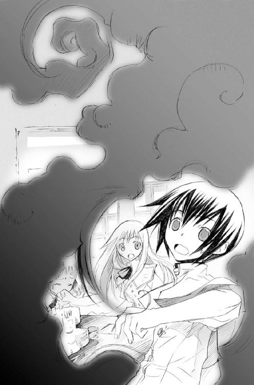

| 黄昏色の詠使い イヴは夜明けに微笑んで (富士見ファンタジア文庫) | |
| 細音 啓 & 竹岡 美穂 | |
| 富士見書房 (2006) | |

黄昏色の詠使い
イヴは夜明けに微笑んで
細音 啓

富士見ファンタジア文庫
本作品の全部または一部を無断で複製、転載、配信、送信したり、ホームページ上に転載することを禁止します。また、本作品の内容を無断で改変、改ざん等を行うことも禁止します。
本作品購入時にご承諾いただいた規約により、有償・無償にかかわらず本作品を第三者に譲渡することはできません。
本作品を示すサムネイルなどのイメージ画像は、再ダウンロード時に予告なく変更される場合があります。
本作品は縦書きでレイアウトされています。
また、ご覧になるリーディングシステムにより、表示の差が認められることがあります。
口絵・本文イラスト 竹岡美穂
目 次
序奏 『虹と夜の交叉 ──始まりの、そのさらに前──』
１
じりじりと、拷問の如く照りつける太陽光。カーテンを閉めても遮断しきれぬ熱波。窓枠は、手を触れるだけで火傷するほど熱を帯びている。
教室の外、校庭に至っては陽炎たちの舞踏会。初夏というにはあまりに暑い。いや、ここまでくるといっそ熱いと喩えるべきか。
......いい加減、うちの学校も冷房設備を調えてほしいのに。
天井で頼りなげに稼働している送風機。それを横目で捉えつつ、ジェシカ・レビンディア教師は疲れ混じりの吐息を洩らした。
暑さのせいか、それとも夏の長期休暇がもう迫ってきているせいなのか。教壇の上から眺める生徒たちは、例外なく机の上で伸びきってしまっていた。夏休みの前の一斉試験も済み、授業に一番身が入らない時期であることは確かだが。
「ところで、みんなは何色を専攻するかもう決めた？」
汗で額に張りついた前髪を手で払い、ジェシカは腕を組んだ。教壇を下り、席の最前列に座る生徒へと歩み寄る。
「ゼッセル君は？」
うつらうつらと船を漕いでいた生徒の肩を叩く。目が覚めたらしく、当の生徒が慌てたように頭をかく。
「や、やだなあ先生、赤に決まってるじゃないですか！」
照れ隠しのつもりか、頰を紅潮させたままその生徒は大声で返してきた。
「言うと思った。ゼッセル君はずっと前から赤が好きね」
「見た目に一番派手じゃないすか。火、使った名詠なんてめちゃくちゃかっこいいし」
手振りを交えて説明する生徒の後ろで──
「懲りねえなぁ。そんなこと言っておまえこの前、焚き火に手突っ込んで火傷じゃん」
ゼッセルの後ろに座る、眼鏡をかけた生徒が茶化す。教室の至るところからくすくすと響く笑い声。
「じゃ、じゃあミラー君は何色にするの？」
口げんかを始めそうになった二人を押しとどめながらジェシカが聞くと、その生徒は眼鏡の位置を直しながら。
「『生命はその身体の内に海を含む』──青ですね。生命は水から生まれた。その水から物を取り出すというのが非常に意味深いものだと思うので」
ミラー君、キミだってそう言って、この前プールで溺れかけてなかったかしら。内心の苦笑を隠しつつ、その背後に座る女子生徒へと視線を向けた。
「エンネ、あなたは？」
「わ、わたしですか」
声をうわずらせ、少女が恥ずかしそうに顔を赤らめる。
「ええ。あなたは何色を専門に勉強したいの」
「わ......わたしはそのぉ......白です......有翼馬を詠んでみたいから......」
有翼馬といえば白色名詠式の中でも相当に上の難易度になる。おとなしくてひっこみがちの少女だが、しっかりと自分の目標を定めているところが彼女らしい。事実、今回の一斉試験でも彼女は上位成績者に食い込んでいたはずだ。
「エンネならきっと詠べるわよ。その気持ちを大切にね。上達に一番大切なことが『詠び出したい』っていう気持ちなんだから」
顔を赤らめたままの少女がこくりと頷くのを見て、ジェシカはさらに同じ問いをクラスの生徒に聞いて回った。
一人を残した時点で、一番多かったのは最初に声の上がった赤色、二番目が青という順番だった。三番目にほぼ同順で緑と黄色。逆にあまり声の上がらなかったものが白。ミドルスクールに見られる典型的な人気順と言っていい。
──さて残り一人。だけど......この一人が問題なのよね。
他の生徒もそれが分かっているらしく、いくぶんざわざわと騒ぎ出す。
最後尾、教室の端に座る少女に視線をやる。濡れ羽色の髪を肩まで伸ばした、思春期の女性にしてはあまりに細い体つきの少女。
「イブマリー、あなたは......その......あれだっけ？」
「はい」
イブマリー。そう呼ばれた少女がさも当然とばかりに首肯する。
「わたしがしたいのは『夜色名詠』です」
その途端、彼女を取り巻く周囲が一斉に歓声を上げた。
「うわっ、相変わらずその決まり文句かよ！」
「まだ言ってるの、頑固ねイブちゃん」
とにかく大声を上げる者、友人同士笑い合う者。反応はそれぞれだが、それに共通しているのはイブマリーという少女の発言を小馬鹿にしている点だ。
「はいはい、みんな少しは落ち着きなさい」
ざわついた教室を鎮め、ジェシカは再度少女へと向き直った。
「......ねえイブマリー、他の色に興味はないの？」
「ありません」
少女がわずかにまぶたを揺らす。そんな色の名詠式などハイスクールの選択色にはない。というよりも、そんな色の名詠自体がこの世界に存在しないのだ。
──エルファンド名詠学舎。それがこの学校の正式名称である。
その名の通り、この学校の生徒たちは『名詠式』と呼ばれる技術を会得することを目標にしている。名詠、すなわち相手の名を詠うこと。出会いたい物、詠び出したい物を心に描き、その名を賛美することで自分の下へと招き寄せる技術。その特徴は『色分け』だ。
人が目で捉える自然世界の『色』とはすなわち、可視光線の波。つまり同色の物質は、同波長の光エネルギーを有していることになる。一言で言うなれば、その共通項を利用し、物体の転送を行う技術が名詠式である。
『Keinez』・『Ruguz』・『Surisuz』・『Beorc』・『Arzus』。
一般に、名詠式とは五色の音色から成り立つとされている。可視光線の基礎となる七色の中から四色、そしてそれに白を加えた五色が名詠色として存在する。
現状、その五色以外の名詠式は式として成立していない。世界中の研究者が挑み、それでもなお、この五色以外の名詠式の確立は不可能とされているのが現実。
それなのにこの少女は、ミドルスクールに入った時から自分の主張を一向に変えようとしないのだ。夜色名詠という名の主張を。
「......そう。でも、自分のやりたいことがはっきりしてるというのは素敵よ、イブマリー」
あれだけクラス中から茶化されたというのに、この少女はまるで動じていない。それだけを評価するならばこの生徒は非常に大人びているのだが、自分の主張を絶対に変えようとしない点はまだまだ子供のようにも見える。総じてとらえどころのない生徒だ。
夜色名詠とは何なのか。担任として何度か彼女の話を聞こうとはしているが、彼女はどうにも要領を得ない答えしか返さない。
ふと教室に響き渡る、五時限目終了の鐘。
最後の授業が終わったことに胸をなで下ろす。身体を溶かされるような暑さに耐える必要が無くなったのと、この少女の相手をしなくて済むという理由でだ。
「今日はここまでにしましょう。わたし今日は会議なの。今すぐ出なきゃいけないからホームルームは無し、掃除当番以外は下校していいわよ。当番、今日はイブマリーとビィだったわよね」
下校の準備でにわかにざわめき出す教室。その様子をしばし見つめた後、ジェシカは教室の扉へとつま先を向けた。
２
閑かな、人の吐息の響かぬ教室。下校の刻を告げる鐘だけが鼓膜をゆらし、窓から射し込む熱い夕陽だけが視界を埋める。
壊れかけの、錆びた釘が覗く木製のロッカーに箒をしまう。
微風に揺れる髪をおさえることも無く、少女は独り、窓の外の光景を眺めていた。
──うわっ、相変わらずその決まり文句かよ！
──まだ言ってるの、頑固ねイブちゃん。
いつも。いつもそうだ。
からかわれてばかり。馬鹿にされてばかり。教室のクラスメイトも担任教師も......いえ、周りに映る誰もが自分を笑い、そして通り過ぎていく。
「......噓じゃない」
ぽつりと呟く。悔しいとは思わなかった。とうに、罵倒も嘲笑も聞き慣れたから。
誰にも理解されなくて構わない。理解される、受け入れられることを望む方が間違いなんだ。
とぼとぼと、教室の隅、カーテンの揺れる窓辺へと向かう。
「──綺麗な夕陽」
校舎の二階。それほど高い場所から眺めているわけではない。だがそれでも、少女はこの窓から眺める景色が好きだった。
眩しいほどに輝く夕陽。見る者を照らし祝福する──自分の目指す『夜色』とあまりに真逆のもの。......そう、きっと、自分には出来ないことだからこそ憧れるのだろう。
でも。それでもわたしは──
不意に、微風に撫でられ少女はまぶたを閉じた。
夕陽の熱を攫う心地よい風。その風に、しばし身を委ね......
「──Isa Yer sherienaxeoi pel」
独り言のように呟き、少女が吐息を洩らす。
「miqvy elmeinehhevirgia-c-fifsia」
吐息、否。
夕暮の風に踊るそれは、歌だった。
zette ovanYer bezarabearcsolituqs
Lears necktele ravience Shadir Isa jesqusi xinfears togapeg ilmei shel
jes kless qusimedolialef cirkus,medolialef zarabel
Hir sinka I,bekwistWeR muasririsiaharmonelef twispel
Yer shesaria stiglef xeoipeg pel
U dalostasiadremrenIsa daboemafotondoremren
O univa smthes hypne
endeYears besti ......
歌の終詩を目前にし、だが少女の奏は唐突に止んだ。
口をつぐみ、ゆっくりと少女が振り返る。
「......最後まで聴きたかったのに」
がらんとした空虚な教室。いつの間にか、自分のすぐ後ろの席に見覚えのある少年が座っていた。
「すごく澄んだ歌だね。ちょっと悲しげな旋律だけど、今まで聴いたどんな曲より繊細で綺麗だった。君が創った歌かい？」
......あなたなんかに言う必要ないでしょ。
応えることすら煩わしく、相手から即座に背を向ける。が──
「ねえイブマリー。理論構築はできているのかい？」
その一言で、無意識のうちに足が止まった。
「理論？」
オウム返しに呟くと、相手は片眉をつり上げてみせた。
「夜色名詠のさ。まさか既存の色のままで通すつもりかい？」
「あなたにそれを言っても仕方ないでしょう、カインツ」
カインツ・アーウィンケル。クラスの中でこれと言って特に目立ったポジションではない生徒だ。成績も学年で中位程度。友人も多いようだが、かといってクラスの代表格という立場でもない。彼とこうして話すのもせいぜい二回か三回目だろう。
「つれないなぁ」
茶なのか金なのか。どちらとも言えぬ髪を少年が微かに揺らせる。それから目を逸らし、彼が手にした物を凝視する。
「今日はビィがわたしと一緒の掃除当番だったと思ったけど、なんであなたがここにいて箒を持ってるの？」
「代わってあげたのさ。彼明日の発表担当だから、今から図書館に籠もって缶詰だって。でも来るのが遅かったみたいだね。君に全部やらせちゃったようで」
箒を無造作に放り投げるカインツ。窓枠に手をつき、外を向いたまま彼が肩をすくめる。もっとも、自分の方は彼のそんな仕草に付き合うつもりはないが。
「......話は終わり？ じゃあわたしは」
これで帰る。
そう言い捨てるより早く、彼の方がじっとこちらを見つめてきた。
「触媒は何を使うのかい」
──触媒？
触媒とは名詠式に必要不可欠な道具だ。名詠対象との波長交換を行うためになくてはならない代替物質。名詠と名の付く以上、夜色名詠だって何かを触媒にする必要がある。この少年はそれが何かと聞いてきていることになるのだが......
「あなた、なんでそんなこと気になるの」
他人から今まで聞かれたことはせいぜい、「夜色名詠とはなんだ」といった程度。理論構築の進行具合や触媒で使う物質といった細部など、担任教師にすら聞かれたことがない。
と。詰問する自分から目を逸らすようにそっぽを向き、彼は窓枠越しに階下を指さした。
「今回の一斉試験の結果だけど、一階の中央通路にその結果が貼り出されてた。五科目総合で成績優秀者に君が載ってたよ」
五科目とはとどのつまり、五つの名詠色を指す。名詠の触媒列記から始まり、有名な名詠実験の成功例・失敗例の原因推測などが出題される。範囲指定はされず、日頃どれだけ名詠式に熱心であるかが問われる試験である。
「それがどうかしたの？」
「しかも、上位学年をさしおいて一位だった」
「偶然て、怖いわね」
その瞬間。彼の口の端がつり上がった。
「違うね。君が点を落とし忘れていたからだ」
毒を含むように。彼の口調がいくぶん強いものになる。視線そのものは窓の外、学舎の校庭を向いたまま。なのに、直接目を向けられるよりも鋭い圧迫感。
「その気になれば毎回その順位がとれるんだ。いつもは点を抑えてるに過ぎない。ところが今回は試験の点数を落とし忘れた。違うかい？」
「冗談。勝手に持ち上げてもらうのは迷惑よ。そんな訳の分からないことする人いるわけないでしょ」
吐き捨てるものの相手の表情に揺らぎはない。そのくらいの反論はとっくに予想してたとでも言いたげな──対峙する自分からしてみれば癪に障ることこの上ない──余裕。
「いるんじゃないかな。現にボクがそうだしね」
「......あなたが？」
「ちなみにボクの場合、試験問題の半数だけ解いてあとは白紙で提出してる。時々先生から問い詰められるけど、そこらへんはいくらでも誤魔化しが利くからね」
──意味が分からない。何のために。
「ん？ たぶん君と同じ理由だと思うけどね」
「......わたしと同じ？」
「年度末までの試験。その点数合計で上位成績を取ると王立研究所からスカウトがくる」
続きを促すその前に、少年は自分の方から言葉を継いできた。
「確かに将来は安定だけど、研究所付属のハイスクールに行ったところでまず待っているのは、お偉方の助手。悪い言い方をすれば下働き。そんな窮屈な真似はまっぴらごめんだ。君もそれが嫌なんじゃないかと思ったんだけど」
彼の白い制服が夕陽に紅く染まる──そんなどうでもいいことすら気づくほど、自分がその少年を見つめていることに気づき、イブマリーは我にかえった。
......いつの間にか胸の鼓動が大きくなっている。
自分の動悸が彼に届いている錯覚すら感じ、イブマリーは胸を無理やりに押さえつけた。
そうしなければ、この少年にあたかも心の奥まで見透かされてしまいそうな錯覚を覚えたから。
「つまり君は、将来の安泰を放棄してでも成し遂げたいことがあるということだ。となると、夜色名詠式とやらも信じざるを得ないだろう？」
「......そうだとして、何が言いたいの」
ゆっくりと、彼が視線を向けてくる。
今の今までその言葉だけを待っていたんだ。そんな声音で。
「君が夜色名詠士になりたいように、ボクにも目標があるんだ」
いたずらっぽい表情から一転、はにかんだような、照れたような──普段教室で見せない表情を彼が浮かべる。
それを眺めるうちに、奇妙な、自分自身にすら理解できぬ気持ちを覚えた。
〝君が夜色名詠士になりたいように〟
そう告げた彼の双眸に、それを馬鹿にするような光が一切灯っていなかったからだ。
クラスの友人や教師。今まで見てきた全ての他人は、呆れ半分に唇を苦笑へと歪ませていた。なのに、この少年にはそれが無い。
──あなた、本気でわたしの言ってること信じてるっていうの？
今の今まで鬱陶しいとしか思わなかったはずなのに。ゆっくりと、少しずつ動悸が速まっていく。それも不愉快な動悸ではなく、安らかで穏やかな鼓動。
「目標があるって......どういうこと？」
乾いた唇で、かろうじてその単語だけは紡ぐ。
「お、ようやく興味をもってくれたみたいだね」
「......もったいぶるなら言わなくてもいいわよ」
「あ、待って待って」
こちらが顔を背けようとする前に、彼の方は苦笑を押し殺しながら慌てて答えてきた。
「ボクが目指すのは虹色名詠式なんだ」
「虹色？」
聞き覚えのない単語、思わず口に出して反芻してしまう。
「うん。別に、君みたいに新しい名詠式を構築しようというわけじゃない。『Keinez』・『Ruguz』・『Surisuz』・『Beorc』・『Arzus』。五色全てをマスターする。全部あわされば虹色みたいだろ？ それがボクの目標」
「無謀ね」
溜め息一つ、大仰に肩をすくめてみせる。
何を言うかと思えば。まさかそんな突拍子もないことを言ってくるとは思わなかった。
一つの名詠色を極めるのにすら標準で十年以上かかるとされている。仮に赤を習得したとしても、次の青で今までのノウハウが全く通じないというのが名詠式の特徴だ。
名詠という分野で一括りにされているとはいえ、一色ごとにその理論体系はまったくの別物。彼自身の発言である「理論構築、まさか既存の色のままで通すつもりかい？」という言葉にも当然その意味が込められている。
たとえ十年で一つ極めたとしても、その頃には当然体力も脳の働きも弱まっている。現状では三色極めるのが限界とされているほどだ。
「仮に出来たとしても、その頃にはいいおじいさんになってるのが関の山よ」
揶揄混じりに微笑する。
「そうかい？ 君の挑戦と良い勝負だと思うんだけどなぁ」
「わたしはおばあさんにはならないわよ。どうせその前に死ぬから」
感情のまま吐き捨て──
......しまった。
その直後、イブマリーはそれを後悔した。
......わたし、なんてバカなことをしたんだ。
誰にも伝えるつもりのなかったことを、ただの発作的な感情だけで呟いてしまうなんて。
苦々しく表情が歪んでいるのが自分でもわかる。あまりの失態に、その表情を隠す気にもなれなかった。
「イブマリー......まさか本気じゃないよね」
先とは属性を異にする彼の視線。
目を逸らそうとして、だができなかった。身体の一挙一動に至るまで少年の視線が刺さる。鋭い刃と同じ。無理に抜こうとすればかえって出血を強めてしまう。
噓をついても良かった。あるいは、たとえ噓と看破したところで、この少年ならばそれ以上追及してこないということもわかっていた。
だがそれでも──
「わたしの家系、代々身体が弱いの。みんな早死にしてる。わたしのお母さんも、わたしを産んですぐ死んじゃった。......わたしもきっとそう。あなたみたいに五色全部マスターしようなんて考えたこともなかった」
気づいた時には口唇からその言葉が洩れていた。
一欠片の偽りもない、飾りようのない本音。喋っている自分でも止められなかった。
──初めてだったからだ。
目の前に、自分の言葉の一つひとつに耳を傾けてくれる少年がいた。
夜色名詠のこと。自分のこと。初めて、自分の話を真剣に聞いてくれる人がいた。
教室の生徒も担任教師も、周囲の大人も。自分の言うことを子供の空言として誰一人相手にしてくれなかった。だけどこの少年は──
「......ホント言うとね。わたしも既に病気が発症してるみたい。もう時間がない。だから、せめて最後に何かしたいの」
そう──夜色名詠はそのためのもの。
不意に、彼が視線をわずかに背けた。
......ばか。正直すぎるのよ。
皮肉だ。自分の目が濡れていることに気づいたのは彼のその素振りからだった。
──わたし、なに泣いてるんだろう。悲しいから？
違う。なんだろうこの気持ち。いえ。そもそもわたし、普段ならこんなとこで絶対泣いたりしないのに。
わずかに吐息をこぼし、制服の袖を目の端にあてる。
「......理論構築できてるかって訊いたわよね。半分くらいは頭の中で見えてきてる。触媒もチャネルの方も。まだ幻想みたいなものだけどね」
こぼれた分の涙をぬぐうと、彼の方も視線を戻してきた。
「イブマリー。一つ訊いていいかな......君、夜色名詠で何を詠び出したいんだ」
「ひみつ」
くすりと、我知らずのうちに洩れる笑み。つくり笑いは得意ではない。自然に、その少年に向かってイブマリーは微笑んでいた。
「ねえ。間に合うと思う？」
何が間に合うのか。とは彼は聞き返してこなかった。
「わたしが生きているうちに。誰もしたことがない、誰も見たことがない新しい名詠を完成できると思う？」
一歩だけ、その少年に近づく。
結局のところ、彼も自分と同じだった。噓がつけない。すぐに表情に出る。
躊躇わずに肯定したところで、それがただの憐れみとしか映らないことを少年は理解している。分かっているから容易に頷くことができない。否定することもできない。
頷くことも、首を横に振ることもしないまま時間だけが経過し──
「ボクと勝負しないか？」
唐突に彼は言ってきた。
「......え？」
「君が夜色名詠を完成させる前にボクは五色を極める。あと二十年、いや、十年以内にやってみせる。だから君も約束してくれ。君が生きてるうちに夜色名詠を完成させてボクに見せるって」
十年で全ての名詠式をマスターなどできるわけがない。この本人が誰よりもその難しさを理解しているはずなのに。
......頑固ね。
この少年は間違いなく馬鹿だ。どうしようもないくらい意固地な堅物だ。
吹き出しそうになるのをイブマリーは必死でこらえた。
──でも、そういう無謀な挑戦は嫌いじゃない。自分もそうだから。
その言葉を心の奥底で押し止めたまま。
「......もし完成したら」
つなげようとした言葉の前に、胸の内から何かがこみ上げてきた。
喉の奥が熱い。熱くて苦い。
泣いたせいだ。そう思った途端、またしずくが頰を伝っていく。
......一番最初に見てくれる？
少年が頷くのを見て、少女はもう一度涙をぬぐった。
遠い、離い将来。しかし──
約束をかわした二人は対照的な道を往くことになる。
一人は二十代にして史上初の試みに成功、その名は瞬く間に世界中に知られ、生きながらにして神格化される。今なお、彼に弟子入りを志願する者は年間百を超えるという。
もう一人。同じく、世界初の試みに挑んだ者。
しかしその成否は知られていない。目的を達成できたかどうかは誰も知らない。弟子入りする者もいないまま、世界に名を残すこともないまま。
誰の目にも触れられず世界を放浪し、彼女は大陸のどこかで没したとされる。
一奏 『赤と夜の練習歌』
１
「おーいクルル、どれにするか決まったぁ？」
雑貨売り場の片隅から、まったく反対側の隅にいる自分に向けてミオが声を張り上げてくる。
......もう、そんな大声出さなくても聞こえてるわよ。
小走りにやってくる友人に半ば呆れたまなざしを送り、クルーエル・ソフィネットは首を横に振ってみせた。
それほど広い売り場でもなく人で混雑しているわけでもない。ミオに向けて肩をすくめてみせると、その本人は左手に抱えた緑色の画用紙を掲げた。
「えへへ。あたしこれに決めたの。ちょうど良い大きさだと思わない？」
紙の色に似た、モスグリーン色の瞳で彼女が見つめてくる。ミオ・レンティア──小柄な背丈と可愛らしい幼顔が特徴の少女だ。自分と同じ十六歳だが、外見の印象とのんびりした口調ゆえそれより一つか二つ幼く見える。
「まだ悩んでるのよ。画用紙も一度候補に考えたんだけどね」
「画用紙いいと思うな。使い終わっても折り紙できるから」
無邪気な笑顔のまま金色のショートボブを揺らせるミオ。
「カエル詠び出した紙で折り紙するの......？ わたしはそれちょっとヤだなぁ。なんかべとべとしてそうだもん」
「じゃあクルルは何にするのよ」
それが問題なのよね。顔にかかった長髪を振りはらうふりをして、かみつくように言ってくるミオから目を逸らした。
自分たちの通う名詠学校。そのスクール生による競演会まであと四日。
競演会──生徒それぞれが各自、自分の詠び出せる最高の物を名詠し、その技術を競い合う。著名な名詠士も審査員として大勢招かれる一大イベントである。自分たち低学年にはもっぱらお祭り騒ぎだが、最上級生にとっては進路を左右する重大な場でもあるらしい。
「うん、やっぱりこれでいいよ」
さんざん迷ったあげく、クルーエルは売り籠から赤い絵の具チューブをつまみあげた。
「えー。絵の具なんて学校でいつも使ってるじゃん」
不満そうにミオが頰を膨らませる。
ハイスクールへの進学時点で、生徒は自分の専攻色を決めている。ミオは緑。クルーエルは赤。今回の競演会もその色で名詠を行うのだが、問題は何を触媒として用いるか。ミオが緑色名詠の触媒として緑の画用紙を選んだように、赤色名詠の場合も、とにかく赤い物質であれば触媒としての機能をもつ。
それゆえ自分は赤色の塗料を選んだのが──どうもそれがミオには不満だったらしい。
「いつも使ってるからこそ安心して使えるのよ。いろんな人が見に来るんでしょ。失敗して何も詠べないってのが一番恥ずかしいもん」
「むぅ。それはそうだけどさぁ。なんか物足りなくない？」
肩をいからせながら、彼女。......ミオって時々変なところでこだわるなぁ。
「いいのよ別に。まだ大したもの名詠できるわけじゃないしね」
不満を口にする友人を後目にカウンターへ向かう。
「ほら、帰って明日の宿題の答え合わせするんでしょ。いま迷ってたら時間もったいないじゃない」
「でもなんかなぁ......」
まだ頰を膨らませる少女の腕を取り、クルーエルは彼女を引きずるように歩き出した。
「ぶつぶつ言わない。さっさと帰るわよ」

見渡す限り延々と続く歩道を歩くこと半時間近く。ようやく視界の端に目的の場所が浮かび上がってきた。
トレミア・アカデミー。トレミア天立研究所付属の名詠式専修学校として、世界有数の知名度を誇る。初等部から高等部まで備え、その敷地面積・施設設備も他の専修校より頭二つ抜けている巨大学校だ。
「ねえねえ、クルルぅ」
画用紙を小脇に抱えながら、ミオが猫なで声ですり寄ってくる。こんな時、彼女の次の台詞はおおかた予想がついていた。
「家帰るの面倒だからさぁ、今日クルルの家泊まっていっちゃだめ？」
──やっぱりいつものことだ。
「はいはい、ご飯作るの手伝ってね」
頷く代わりに、両手に抱えた買い物袋を持ち上げる。
クルーエルは元々地方の出身だ。トレミア・アカデミー進学を機に、今はその学園の寮に入って一人暮らし。ミオの方は自宅から毎日学校に通っているが、その通学時間は往復で優に四時間を超えるらしい。夜遅い時など、自分の部屋で寝泊まりするのがお決まりと化している。
「......でもさぁ、なんでこんなに暑いのかなぁ」
隣を歩くミオが前ぶれなく口をとがらせる。その額にうっすらと小粒の汗。
「夏だからでしょ」
どう返答していいか分からず、クルーエルはごく当たり障りのないことを口にした。
ミオの気持ちも分からなくはない。太陽の熱を吸収し、靴の裏から足を焦がす舗装路面。時おり吹く風も乾燥しきっていて吸い込めば喉を渇かすだけ。
本当は自分だって額の汗を拭いたい。両手が買い物袋で塞がっているから我慢してるのであって、片腕が空いていてハンカチをもつ余裕のあるミオはまだましな方だろう。
「もうすぐ夏休みってのは嬉しいけどね。クルルはなにか予定ある？」
──数秒考え、思い浮かんだのは両親の顔だった。
「たぶん田舎に帰るかしら。手紙とかは送ってるけど、やっぱり顔見せないと安心できないみたい」
「安心かぁ。そうだよね。親の方はやっぱり心配しちゃうんだよ」
「でもわたしだってもう十六よ。心配されすぎるのもなんか悔しくない？」
言いながら、道なりに出来た木陰に入り込む。汗で服がしめってくるのが気持ち悪い。
......厚手の上着を着込んできたのが失敗だったかな。
下はズボン。自分はスカートが嫌いだからこれはしょうがないが、上はシャツ一枚でくれば良かった。
「親御さん、成績が心配なんじゃないの？」
にやりと、ミオが悪戯っぽくこちらの表情を覗き込んでくる。
「クルル今回の一斉テストどうだった？ ヤマが外れたとかぼやいてたじゃん」
「......あー、それは聞かないで」
逃げるように、クルーエルは隣の少女から顔を背けた。
長期休暇の前に行われる一斉試験。クルーエルの結果は四学年の合計千六百人中、千三百七十位だった。一年生四百一名の中では二百とんで五位。試験前日に友人と集まって予想したヤマがことごとく外れ、試験はほぼ白紙。自分より下の順位の連中も似たようなものだ。
......でもそう言えば。教室中が試験結果に悲鳴を上げる中、この少女だけは笑顔で成績表を受け取っていた気が。
「ミオはどうだったの？」
「あたし？ 前と同じくらいだったよ。ぎりぎり二桁。学年だと二番だったかな」
「うわっ、裏切り者！ 前と同じだったぁ？ なんでそんなできるのよ」
あまりのことに思わず声が上がる。が、当の本人は飄々とした面持ちのまま。
「え。だって今回の簡単だったよ。資料集の炎色反応覚えてるだけで三問はいけたもの」
......あの資料集って、言語辞書よりぶ厚かった気がするんだけれど。
気楽な声音のミオだが、その巻末まで読み通してるのは一年生では彼女ぐらいのものだろう。
「えへへ。だってさ、そうしないとお小遣い下げられちゃうんだもん」
「......今度おごりなさいよ」
まったく、世渡り上手な性格ですこと。
呆れ半分に彼女から顔を逸らす。が、そうするやいなや彼女の方が自分の前方へと回り込み、こちらの顔を覗き込んできた。
「でもねでもね。勉強してるのはホントだよ。あたしカイ様に憧れてるから」
「カイ様って......あの虹色名詠士のこと？」
伝説にも等しい名詠士の名に、少女が火照った顔を一層赤らめながら頷く。
「だって、信じられる？ まだ二十後半。あたしたちより十ちょっと違うだけなのに全部の名詠色をマスターしちゃった人だよ。写真で見ただけだけどすごいかっこよかったな。いつか会ってみたいのよね。ああっ......もし叶うのならいつか弟子に──」
脳裏に描いた光景に目を輝かせるミオ。......やれやれ。苦笑の吐息をこっそりと洩らすが、本人はそれに気づかぬまま既に妄想の世界に入ってしまっているようだった。
「はいはい、わかったから少し──」
終わりそうにない独り言を止めようとした矢先。
目の前二十メートルほど先、ちょうど二股に分かれている場所に見慣れない相手が立っていることに気づいた。
幼い子供。遠目にしかわからないが自分たちより年上ということはあるまい。深い紫色の髪、葡萄色というやつだろうか。トレミアの制服ではなく、私服。子供用の黒コートを着ているから余計に目立つ。真夏のこの時期にあんな暑そうな格好──だがそれ以上に気になるのは、その肩になにか鳥のようなものを乗せてるように見えることだが......
「あれ。あの子誰だろうね」
さすがにミオも気づいたらしい。荷物の軽い彼女が小走りに近づいていく。
「ねえキミ、どうしたの。ここ一応学校の敷地内だよ」
「え......あ、はい。えっと、僕ですか？」
驚いたように聞き返してくる少年。二股の道路に目がいくあまり、今の今まで自分たちのことに気づいていなかったらしい。幼げな、性別の判断がつきにくい柔和な顔立ち。
子供......よね、どう見ても。
クルーエルが見た限り、十二か三。背はちょうどミオと並ぶほど。
『道がわからない。学生寮はこの方向だと聞いてはいたが、二股になっているとは言われていなかった。一体どちらに進むべきか』
そう答えたのは少年ではなく──
「わわっ、アーマ。いきなり喋っちゃだめって言ったのに！」
肩に乗せた生き物の口を少年が慌てて塞ぐ。鳥ではなかった。少年の髪と似た黒紫色だが、もっとおどろおどろしい色の皮膚。というより鱗。その外見は......
「とかげ？」
叫ぶミオの声が裏返る。その声に、肩に乗る謎の生き物が目を細めた。
『トカゲなどではない。小娘、我を知らんのか？』
呆気にとられた表情で、ミオが首を横に振る。知るわけがない。第一、外見からしてトカゲ以外他に思い当たるものがなかった。もっとも、大きさが子猫ほどあって自分のことを我などと呼ぶトカゲはクルーエルも初めてだったが。
「あぁっ、アーマのバカぁ。あれだけ喋っちゃだめって言ったのにぃ！」
『気にするなネイト。この小娘たちもお前と同じ趣味があるらしい。我が話したところで大したことではない』
同じ趣味？ 一瞬何を指しているか戸惑ったが、つまり。
「ねえキミ。こいつもしかして名詠生物？」
爬虫類らしきものから少年へと視線を移す。と、かすかに少年の表情がやわらいだ。
「え、ええ。そうです。僕が名詠したわけじゃないけど。......ああそっか、お二人とも名詠の勉強されてる人たちだったんですね。アーマが喋ったら普通の人は驚くので」
照れ隠しのためか、恥ずかしそうに少年が後ろ頭をかく。
......いや、十分驚いたわよ。
喉まで出かけたその言葉をクルーエルは無理やりのみこんだ。
生物を名詠する難度そのものはそれほど高くはないが、人の言語まで解するほど高位な生物を詠び出すとなると話は別。難易度で言うと上から二つ目──第二音階名詠あたりに相当するはずだ。ハイスクールの教師でさえこの名詠には手こずると言われている。それほど稀少な名詠生物をほいほいと連れて歩く子供が、この世界にどれほどいるのか。
しかしそれはそれ。自分たちが気にしても仕方ないだろう。
「で、ネイト君だっけ？ 肩のそいつが言うには寮を探してるとか」
おい小娘、我をそいつ呼ばわ──とまで言いかけたトカゲの口を少年が再度塞ぐ。
「あ、はい。ネイトって呼び捨てでいいです。別の学校から転校してきて今日ここに着いたんだけど、寮がどこにあるのかわかんなくなっちゃって......」
「んとね、ならこの先が寮であってるよ。女子寮と男子寮に分かれてるから二股なんだ」
画用紙を持ったまま、ミオが左手を持ち上げる。
「こっちが女子寮。反対の右が男子寮になってるよ」
「そっかぁ、ありがとうございます！」
頭を下げる少年にミオが微笑む。
「どういたしまして。あたしミオ。こっちがクル──」
「クルーエルよ。同じ学校ならまた会うかもしれないね」
言いかけたミオを遮るように、クルーエルは口早に応えた。
ミオのことだ。どうせわたしのことを『クルル』として紹介するつもりだったのだろう。ミオに呼ばれるときはその愛称でも別に構わないのだが、他人に紹介される時ぐらいちゃんとした名前で呼ばれたい。というよりも本音は、そのクルルという愛称が自分には幼すぎて不釣り合いな気がするからだが。
「ミオさんとクルーエルさんですか。ホント助かりました！ じゃあ、とりあえず行ってみますね。ほら、行くよアーマ」
『小娘、とりあえず礼は言っておく』
......何が悲しくてトカゲに小娘小娘言われなくちゃいけないんだろう。
文句の一つもつけたいところだが、それこそトカゲ相手に説教も何もあるまい。
内心の不満を胸の奥で押し殺し、頭を下げる少年に向かってクルーエルはかるく頷いてみせた。
２
「遅くなってごめん。ミオ、交代ー」
大分待たせちゃったかな。湿った髪にタオルをあてながらクルーエルはバスルームから声を張り上げた。脱衣所の時計を一瞥。げ、もうこんな時間......ちょっとゆっくりしすぎたかな。
夕食後、先にシャワーを譲ってもらったのだが、昼に汗をかいたせいでついつい長湯になってしまった。
「ん、ミオー？」
返事がない。脱衣所から出てすぐのダイニングにいるはずなのに。扉を開け覗き込んだ先。そこに、テーブルに肘をついた姿勢で部屋の天井を見上げる少女の姿。
「なんだいるじゃん。......って、聞いてる？」
視線をふさぐように彼女の正面に回り込むと、ようやくミオは口を開いた。
「ねえクルル。あれ、本当に名詠式で出したのかなぁ」
だがどうも反応が鈍い。独り言のように夢現な表情で呟く彼女。
「『あれ』って？」
「今日会った子いたじゃない。あの子の肩に乗ってたトカゲだよ」
考え事をしていたらしい。そういえばそうだ。考え事をしている時のミオは周りが見えなくなることが割と多い。
「あのトカゲ、紫というか黒というかよくわかんない色してたよね。何色の名詠式したらあんなの出せるんだろうかなって」
「......まあ、そうだね」
今思い出すと確かにそうかもしれない。形容しにくい色。無理に当てはめるとするならば赤か青だろうが、どちらだとしてもあまり合点のいくものではない。赤にも青にも出せぬ、奇妙な深みを持つ色合いだった。
「まあ何色だったとしても、わたしはあんな生意気トカゲなんか詠び出したくないけどね」
髪を拭きながら苦笑する。
「やっぱり鳥よ、鳥。あんな気持ち悪い爬虫類なんかより断然いいよね」
すると、今まで無表情に近かったミオがにやりと口の端をつり上げた。
「競演会、一番人気が鳥なんだって。三百人くらい鳥狙いらしいから全然目立たないよ」
「うっ......それほんと？」
「少なくとも去年はそうだったみたいだよ」
マグカップに口をつけながら空とぼけたように、ミオ。素知らぬ顔で言ってくるということは、彼女は別の物を名詠する気なのか。
「ミオは何にするの？」
「まだ考え中。生き物を出そうとは思ってるけど、小さいものをたくさん出すか、何か大きいのを一つ出すかで迷ってるの」
緑の生き物で何か大きいのっていたかな。気にはなったが、彼女の方からそれを言わないということは本番までのお楽しみということか。
「ていうかミオ、さっさと入らないとお風呂冷めちゃうよ」
「む。そう言えばそうだった。クルル出てくるの遅い！」
「とっくに出てたわよ。ぼうっとしてたそっちが気づかなかっただけ。文句言う暇があったらさっさと入ってきなさい」
ぐずるミオの背中をバスルームまで押していく。わたし明日は部活動の朝練があるんだから、早いところあなたがシャワー入ってくれないとこっちも困るのよ。
「タイムリミット十分。時間になったら電気消すからね」
「え......なにそれ、ずるっ......ちょっとクル──」
何やら言ってくる少女を無視し、クルーエルは脱衣所の扉を閉めた。
３
「お疲れさまでした。じゃ、お先に失礼します」
朝のホームルームを告げる予鈴が鳴り響く。部活動の先輩に挨拶を終え、クルーエルは一年生の校舎へと全速力で駆け出した。
トレミア・アカデミーの敷地規模は他校の平均面積の三倍。部室から一年生校舎までの距離も徒歩で優に半時間を要する。
「うわっ。もうこんな時間......」
腕時計を一瞥、ホームルーム開始まであと二分。
乱れた息のまま校舎の階段を駆け上り──自分のクラスである「一─Ｂ」というボードが視界に飛び込んできた。扉の取っ手に手をかけ、走ってきた勢いそのままに扉を開く。
力余って地震が起きたかのような震えが扉を揺らすものの、今さらそれを気にするクラスメイトはいない。これぐらい急がないと間に合わないことを全員がとうに承知済みなのだ。
「おはよクルル。なかなかの好タイム。先月の平均より七秒早いね」
苦笑混じりで、ストップウォッチ片手にミオが気楽に告げてくる。
「......こっちはそんな余裕ないわよ。先生は？ まだ来てない？」
「ん、まだ来てないよ。今日は間に合ったみたいだね」
「今日も、よ」
何やら言いたげなミオから目をそらし、手元の鞄を開ける。スポーツドリンクを取り出し口をつけようとした矢先、眼前の扉が開いた。
若葉色のスーツを着た、陽に眩しく輝く金髪を肩まで伸ばした女性がゆっくりとした足取りで教室に入ってくる。担任のケイト教師だ。
「みんなおはよう。......あらクルーエル、今日は遅刻しなかったのね」
教師のやんわりとした皮肉。一瞬頰が引きつったのが自分でも分かった。
「と、当然ですよ？」
平静を装いながら席に腰掛ける。
対して、ケイト教師の方は意味ありげに肩をすくめてみせた。
──わたし......悪くないのに。
自分は毎日誰よりも早く校舎に来ている自信がある。ただ部活の朝練習が予鈴ギリギリまであるせいで、遅刻数クラス一という不名誉な称号を手にしてしまっているのだ。
「明日も期待してるわ。......ええと、見たところ他の子はみんな来てるみたいね」
苦笑を押し殺しながら教室内の生徒人数を数える教師。
「今日は特に連絡もないかな。五時限目に触媒実験をするから、昼食後に第一実験室に集合ってことだけ忘れないでね......ところで」
軽く咳払いして、ケイト教師は言葉を句切った。
「もうすぐ夏休みだけれどその前に、この『一─Ｂ』に転校生が入ることになりました。十三歳。このクラスでは最年少になりますね」
クラスの空気が途端に熱を帯びた。隣の席に座る男子生徒が軽く驚嘆の声を上げる。少し離れた席、普段ぼんやりとした表情のミオもさすがに驚いているらしい。
もともと名詠式は義務教育ではない。十二歳までは皆一様に普通の勉強を学び、それから各自、何を学びたいかを決める。名詠学校というのも一つの専門学校に過ぎない。
そのため年齢に上限下限はなく、ミドルスクール三年・ハイスクール四年の課程を終えれば名詠士という資格への挑戦権を得るというわけだ。十三歳でハイスクールということは、十歳から普通の学校と名詠学校のダブルスクールをこなしてきたのだろうか。例が無いという程ではないが、間違いなく珍しい方の類に属する。
「とにかくみんなに紹介するわ。ネイト君入ってきて」
......ん、ネイト？ どこかで聞いた気が。
扉を開け、トレミア・アカデミーの白制服を着た少年が入ってきた。
深い紫色の髪をした、まさに十三歳ほどの身長の少年。緊張のためややひきつっているが、まだ幼さの残る顔立ちをしているのがわかる。自分の視線と彼の瞳が重なり──
「あれ、ネイト君？」
クルーエルが口を開くより先、教室の隅に座っていたミオが奇声を上げた。彼の方は突然の名指しに一瞬驚いたらしいが、ややあって。
「あ......えと......もしかしてミオさん？」
「うん。覚えててくれたんだね。あ、クルルもいるよ」
「クルル？」
ぽかんとした表情のネイトに対し、ミオの方がこっちを指さしてきた。──ミオのばか。
ため息ついでに思わず肩を落とす。昨日わざわざクルーエルと言ったのに、それが一瞬で徒労に終わってしまった。
「......おはよ。ネイト」
「あ、クルーエルさん。おはようございます」
丁重に挨拶してくれるのはありがたかったが、おかげでクラスメイトの視線がこちらに向いてしまった。
「──ねえちょっとクルーエル、あの子と知り合いなの？ 結構あの子カワイイじゃない」
背後の座席の友人が意味ありげに背中をペンでつついてくる。左右からも「へえ。まさかクルーエルが年下に手を出すなんて意外」だの。......恥ずかしいことこの上ない。
「あら。ミオもクルーエルも、ネイト君と知り合い？」
一連の会話に、ケイト教師が頭に疑問符を浮かべる。
「昨日、寮のそばで会ったんですよ」
間髪入れずミオが口を開いた。
「なるほど。知り合いがいて良かったわ。あ、でもネイト君。他の子は君のこと知らないと思うから自己紹介いいかな」
「あ......は、はい」
姿勢を正し、壇上の少年が頭を下げる。
「えっ......と。ネイト・イェレミーアスと言います。ずっと地元の方に通ってたんですけど、親が昔この学校の出身だったので、いつかはこの学校に来たいなって......」
ぽんと少年の肩に手を乗せ、教師が教室内を見回す。
「一時限目の講義までまだ時間あるわね。何か彼に訊きたいことがある人いるかしら。一人一人が個別に訊くと答えるのも大変だろうし、何かあれば今ここでね」
「あー！ はいはいっ！ 質問！」
勢いよく手が上がる、さっきペンでつついてきた女友達のエイダだ。
「えっとぉ、キミは名詠式だと何色が専攻なの？」
その問いに──ふと、その少年は隣にいる担任教師と目を見合わせた。
「あ......あの......僕のは......少し普通のと違ってて」
困ったように口を開けたままの少年に、ケイト教師が先を促す。
「夜色名詠ていうのを......その......勉強してるんです」
言いづらそうにうつむきながら、少年はその単語を口にした。
「ヨル？」
首をかしげるというより、呆けたような表情でエイダが反芻する。
「朝と夜、の夜です。黒っぽい青というか紫っていうか。そんな色の名詠式です」
「ネイト君のいたとこだと、そんな色も教えてくれてたの？」
呆気にとられたようなエイダに、おずおずと彼が口を開く。
「えと、たぶんどこも教えてないと思います......母のオリジナルなので」
オリジナル。その単語にエイダが小さく感嘆の吐息を洩らした。
「つまり、新しい名詠色ってこと？」
が、当の本人は慌てたように腕を振ってきた。
「そ、そんなすごいものじゃないです。申請もしてませんし。......それに、僕自身がまだ全然......できないですから」
尻窄みに声が小さくなっていく。まあ転校したてなのだから仕方ないかな。
頰杖をついたままクルーエルがくすりとしたところで、ちょうどホームルーム時間終了の鐘が聞こえてきた。
４
太陽がゆっくりと天頂へと昇っていく。それに併せ、じりじりと上昇していく部屋の気温。蒸し風呂を思わせる、肌にベタつく暑さ。今頃、冷房の効いた学内のカフェテリアは講義のない生徒や教員で一杯だろう。講義さえ無ければ自分もそこで、優雅にアイスティーでも頼んでくつろいでいるはずだった。
──まあ、講義が無ければの仮定なんだけど。
洩れそうになる嘆息を、クルーエルは喉の奥にむりやり押し戻した。
名詠を学ぶ学校においては午前中は基礎知識課程。午後に実際の演習課題が課される。ハイスクール一年生はほぼ一年間かけ、ここで名詠実践の基礎を学ぶことになるわけだ。
「みんな揃ったかしら？」
服の上から白衣を羽織ったケイト教師の声が実験室に響き渡る。
基本的に名詠の実験は四人一組で行う。
名詠者一名、記録係一名。それと緊急時に備えての補助役が二人。
クルーエルの女子パートナーはミオ、男子はアルセム──大柄な体格におっとりとした性格の、黄色名詠を専攻する生徒だ。それとネイト。新入生、しかも正体不明の名詠式を勉強中だということでいくつかの班と奪い合いになったが、面識があるということでミオが半ば強引に引っ張ることに成功したのだ。
「さ、誰からやるか決めるわよ」
くじを作り終え班の三人にひかせていく。実験と言っても要は自分の色の名詠をこなすだけ。今日の場合、三日後に迫った競演会の予行練習に近い。
「あ、あたし二番だ」
のほほんとした口調で、ミオ。
「俺が三番だな」
「僕は四番みたいです」
続いてアルセム、ネイト。......ということは。
「......あーあ、わたし一番か」
「最初って緊張するのよね」
返事代わりに、いたずらっぽく笑うミオにクルーエルは肩をすくめてみせた。
テーブルの隅に置いてある絵の具の山から赤のチューブを抜き出す。名詠式は触媒に触れていなければならない。しぶしぶとチューブから絵の具を出し、それを左手の指先に塗っていく。
......初心者用の触媒としては比較的使いやすいんだけど、指に絵の具を塗りつけるのだけは何度やっても気持ち悪いのよね。
「ネイト、準備できたよ」
ストップウォッチを持ったネイトに目配せしてみせる。
「はい。始めてください」
言われると同時、クルーエルは目を閉じた。
脳裏に名詠物をイメージする。名詠物を左手に持つ想像構築。
紅い、鮮血よりも深い色の花弁。
何よりも完全なその美の内に、触れただけで零れ落ちる儚さを併せ持つ。
「──sheon lefped-l-cluerien-c-soan」
情愛、誇り、可憐。
数多くの言葉で表されるその花を脳裏に描いた。
YeR be oratorLom nehhe
lor bestiredi endekele-l-lovier
Lor pridiarigveshilovi,kele ledg
〈讃来歌〉。
自分が思い描く物を詠び招く際に用いられる、セラフェノ音語による賛美歌。
詠び招く物の名を讃え、誘う。──名詠式の名はそれが起因だ。音として外部に情報を発生、名詠門を緩め開放を誘う。
ゆっくりと目を開ける。既に、左手に付着した塗料が紅く輝きだしていた。
可視光線のエネルギー化。
すなわち赤の塗料が持つエネルギー波長と、今から名詠しようとする物の波長との同調現象。この共通エネルギー波長を媒介に目的の物を詠ぶ──これが名詠式の仕組みである。
名詠門が開いている時間は長くない。まばたきもせずクルーエルは左手に灯る紅い光を見据えた。徐々に光が強まり......不意に、ガラスが砕けるかのように光が破裂した。
それが意味するものは、名詠門完全開放の瞬間。
──『Keinez』──
破裂した光が細分化し消えていく。おそるおそる左手を開く。ふわりと、指の隙間から真紅の花唇がこぼれ落ちた。
「あ......」
安堵に、今まで凍りついていた吐息が洩れる。
左手に生まれた──一輪の真紅の花。
「おお、花かぁ！ 綺麗だね。これ何の花？」
ミオが小さく拍手。
「アマリリスっていうの。わたし昔からこの花好きだから」
そっけなく言ったつもりだったが、ついつい顔がほころんでしまう。
「ジャスト三十秒。クルーエルさんすごいです」
ネイトから時間の止まったストップウォッチを受け取る。競演会での持ち時間はおよそ一分前後。三十秒ならばまず安全圏と言える。
二番手のミオは、昨日買った緑の画用紙を触媒に小さなカメを詠び出した。費やした時間は五十五秒。当初は二匹同時に出そうとしたが集中力が切れて急遽一匹にしたらしい。三番手のアルセムはカナリアに挑戦。だが鳥はカメや花と違って動的な生物であるため、想像構築の段階が難しい。二分経過した時点で彼の方がギブアップした。
「ネイトいいわよ」
台紙とストップウォッチを引き継ぎ、クルーエルは目の前の相手に向かって合図した。
「あ、はい。やってみますね」
見たところ、ネイトも絵の具を使用するらしい。
夜色名詠。学校の教科書にその断片すら記されていない名詠式。内心クルーエルも半信半疑ではあったが、どうやら彼は本気らしい。黒系統の絵の具をパレットで混ぜ、それを指先に付着させていく。
何やら後ろの方が騒がしい。ふと気づき周囲を見やると、なんと他の班全てが一時的に手を休めて自分たちの班に注目していた。
これだけの視線だ。これでは彼の方も集中できやしないだろうに。
あなたたちは自分の作業続けなさいよ──もう少し早くに気づいていればそう口にできたのだが、あいにく既にネイトは名詠式の方に移ってしまっていた。
「──cartlef dimi-l-shadi denca-c-dowa」
YeR be oratorLom nehhe
lor bestibluci endebranousi-l-symphoeki
O shesairaqersonie Laspha─
ざわりと周囲の空気が変わった。その理由は推察するまでもない。この少年が何を詠ぼうとしているのか分からないからだ。
少し名詠式に詳しくなれば、相手が唱える〈讃来歌〉からその名詠物を推測できる。クルーエルも既にミドルスクールで三年分、名詠式に関しては下積みがある。身近な物や生物ならばその〈讃来歌〉を聴いて判別できる。そのはずが。
暗くて、雄々しくて、それに憫しい？
ネイトが今名詠しようとしている物の正体がまるで読めなかった。周囲の者も同じだ。訝しむように、ネイトの手に生まれる光をただじっと凝視し続けている。
黒い光。あるいは影と呼称した方が適切なのかもしれない。少年の手に昏い影が生まれた。実験室に射し込む西日に触れ、なおも消えることのない影。太陽を否定する澱んだ夜。
......これは。
にわかに信じられるものではないが、確かにこの少年は夜を名詠しようとしていた。
影が大きく、強くなっていく。球状に収束していき......
そして。夜が弾けた。
幽かな、窓を開ければその風鳴りだけで消えてしまうほど微細な声で少年が呟く。
──『Ezel』──
その瞬間、部屋が黒煙で充満した。
詠び出されたものは固体ではなく──
「え？ 何、コレ！ ちょっ......息苦......」
ミオの悲鳴に続き、男女問わず苦悶の声が上がる。
名詠されたのはただの、なんの変哲もない煙だった。
「え......そんな......こんなはずじゃ......？」
狂乱の中、茫然とするネイトの声だけが鮮明に聞こえた。
なにか高度な生物を名詠しようとして、それが暴発したということか。初級者が最も陥りやすい事故だ。
物が燃焼した時に出る粉塵だが、息をしようとすればするほど煙を吸って咳き込んでしまう。目を刺す痛みにまぶたを開けていられない。もしこれが火事に出る煙と同じ物ならば、これはおそらく一酸化炭素と二酸化窒素。炭素を含む物質を不完全燃焼させた時に出る物質で、吸い続ければ呼吸器官と中枢神経系に障害を来す。
窓を開けないと！
確か左手に窓があったはず。が。すぐに思い直した。いや、鍵を開けている暇はない。目をつむったまま窓の位置を脳裏に浮かべる。立ち上がり、今まで腰かけていた椅子を右手に摑む。
......わたし、弁償なんかしないわよ！
躊躇せず、クルーエルはその椅子を窓ガラスに向かって投げつけた。
５
「だいぶ遅くなっちゃったな......」
頭上に瞬く星を一瞥し、クルーエルは足どりを速めた。部活動の練習が終わってから学園内の購買部へ。医療品や雑貨を買い足していたら随分と遅くなってしまった。
......まだちょっと痛いかも。
右手に巻かれた包帯をさすると電気が走ったような痺れがくる。数時間前、ガラスを割った際にその破片で受けた傷。日常生活には支障ないが、医務室に行ったらやけに念入りに包帯を巻かれてしまった。

多目的ホールから一年生の校舎まで徒歩でおよそ十分。図書館や体育館などがその間に立ち並んでいるが、いずれも既に消灯済み。朝早くから開く分閉館は早い。
昼の間に火照った身体に夜の冷風が心地良い。肺の奥まで染み渡っていく冷たく澄んだ空気。このまま風を浴びていたくなるような気分にさせる清澄感。
......そういえばネイトどうしてるかな。
ふと想起し、クルーエルは視界を頭上から歩道へと戻した。
あの後──
自分が窓ガラスを割ってすぐ、実験室に充満していた粉塵はあっさりとどこかへ消えてしまった。もともと名詠式の失敗で詠び寄せた不安定な物だから、今考えるとそれも予想してしかるべきだったかもしれない。
それでも、クラスメイトの中には少数だが喉を痛めた者や目を痛めた者もいた。
実験室も部屋の壁という壁が煤け、一年分の汚れがついたかのような有様だった。自分やミオを含め残った生徒たちで片づけはしたが、その後一時間ほどネイトはずっと謝り続けていた。ケイト教師に。学園長に。クラス全員に。そして、窓ガラスを割って手を傷つけたクルーエルに。
名詠のミスというのは仕方がない。まだ十三歳。転校当日。しかもあれだけ多くのクラスメイトに名詠を凝視され続けて。成功しろという方が無茶だ。そう弁護もしたのだが、やはりそう簡単に立ち直れるものではない。全ての授業が終わった放課後まで、ネイトはずっとうつむきっぱなしだった。
徐々に一年生の校舎が見えてくる。例の実験室は立ち入り禁止になっているため既に消灯。明かりがついているのは医務室、職員室、それに警備員室だけだろう。
そう。明かりがついているのはそれぐらいのはずだった。だが。
......あれって、うちのクラス？
三階の、奥から二番目の教室。カーテンが閉められているが、その隙間を通して部屋の照明が外に洩れてきている。誰だろう。
「......まさかね」
その呟きは風に乗り、光と共に夜へと消えた。
「ネイト、それ取ってくれる」
母の視線が、額縁に飾ってある一枚の写真へと向いていた。
「これ？」
背伸びしても届かない、天井近くの壁に飾られた写真。椅子の上に立ってようやく、精一杯のばした指先が写真の縁に触れた。
──この写真、なんだろう。
写真と言ったって誰かが写っているわけではない。これといった風景でもない、写真の画像全体が真っ黒。石炭を近距離で写すとこんな感じの写真が撮れるかもしれないが、そんな写真を撮る理由は思い浮かばない。ピントがずれたのだろうか。でもそれならわざわざこうしてとっておく必要は無い。以前から気になっていたものだった。
「はい、母さん」
床に臥せたままの母親へと持っていく。が、母はそれを受け取ろうとはしなかった。
「......母さん？」
「ネイト、その写真あなたにあげる」
寝たままの体勢で、母が布団をわずかに持ち上げる。
「これ......なんの写真？」
「あなたが練習している名詠の、とっておきの触媒よ」
珍しいことに。本当に珍しいことに、そう言ってくる母の表情は優しげだった。ふだん体調の良い時でも、母が表情を緩めることは滅多にないのに。
「でも、何も写ってないよ？」
「夜に撮ったものだからわかりにくいけど、火を写した写真なの」
火。一面真っ黒なのに、これが？ 喉元まで出かかった言葉をネイトは慌てて押し戻した。自分の母は、一度として噓や冗談の類を口にしたことがなかったから。
「ネイト、あなたにまだ教えてない名詠があったわ」
それを知ってか知らずか、天井を見つめていた瞳を母が閉じた。
「これはあなたのための名詠式。だからネイト、あなたにだけ教えてあげる」
『なぜ、我を詠び出そうとした？』
耳元で聞こえる声。詰問ではない。ただ、純粋な疑念の声が鼓膜に響く。
『お前の母でさえ我を詠び出すのに幾年月をかけたのか、忘れたわけではないだろう。現状のお前が適うものではないだろうに』
机にうつ伏せたまま聞き流す。が、相手はそれを意にも介せず続けてきた。
『我がいた寮とこの学舎。距離にしておよそ二千メートルほどか。だが距離の大小は名詠にさほど関係ない。我を名詠によって招くことそのものが至難だとは知っているはず』
......そんなのわかってるよ。
口に出す気もなく、心の中だけでネイトは吐息を洩らした。
でも挑戦してみたかった。自分ができる名詠なんて両手で数えられる。だからこそ、どんどん新しい名詠式に挑戦してみたかった。
「僕、母さんと約束したもの。アーマも知ってるでしょ？ 母さんと約束した人に、僕が夜色名詠を見せるんだって」
言霊であるかのように、その一言は相手を沈黙させた。
「ねえアーマ、母さんはそんなにすごかったの？」
『......そうだな』
自分以外誰にも悟られぬほど微かではあるが、珍しくこの名詠生物の声音がやわらいだ。懐かしむように、愛おしむように。もっとも、その当人は気づいていないだろうが。
『我が認めた唯一の名詠者だ。少なくとも、才能という点に関してはお前の遥か上を行っていたな』
──まだ僕は、この名詠生物に認められていない。
言葉の裏に潜む真意。それは紛れもない、隠しようのない事実。しかしそれでも、言葉に出来ない悔しさが胸の奥に溢れ出す。
『だが。才のそれを補うために我がお前のそばにいることを忘れるな』
その声に突き動かされるように。ネイトは顔を持ち上げた。目の前に、鼻先が触れるほどの距離にアーマがいた。机に乗っているわけでも肩に乗っているわけでもなく。背中に折りたたんでいる翼を拡げて虚空に漂う名詠生物。
「キミが飛んでるの久しぶりに見たよ」
『地を這い続けるのもいいが、飛び方を忘れそうでな』
「無理しないでね。飛んでられるのは四十秒が限界なんでしょ？」
名詠生物の、真剣な物言いとは裏腹の不格好な浮遊に吹き出しそうになる。
「......でも。僕は母さんみたいにはうまくいかないってことは、やっぱり他の人に迷惑をかけちゃうんだね。今日だってクルーエルさんに......」
『昨日の小娘か。しかし聞いた限り、その程度の傷ならあの小娘にはどうということもない気がするがな』
ここらへんがやはり名詠生物なのだろう。自分が気にしているのは外見的な傷だけではない。責任、償いも含めてのことだ。
「ううん。アーマにはわかんないだろうけど──」
「だから、気にしてないから平気よ。もともとわたしが勝手に窓割っただけだしね。そこの生意気トカゲに言われるのは癪だけど」
「そうそう。気にしてないから......えっ？」
不意に入り込んできたのは女性の、それも聞き覚えのある声。慌ててふり向いたネイトのすぐ正面。
教室の扉に寄りかかるように、右手に包帯を巻いた少女が立っていた。
「やっぱりキミか」
もしやと思って来てみたら案の定だ。苦笑の吐息を洩らし、クルーエルはネイトの正面の席まで歩み寄った。
「あ......あの......ご──」
あっというまに畏縮し、とまどいながらも少年が口を開こうとする。その前に、クルーエルは人差し指でそっと相手の額に触れてやった。
「もう謝らなくていいわ。今日ずっと謝ってたじゃない。謝られっぱなしでこっちが申し訳なく思っちゃうよ」
「は、はい......」
頷きはするもののやはりまだ声が硬い。見つめるのも気の毒かな。あてもなく視線をずらすと、机に乗っているトカゲと目があった。
『小娘。何度も言うが我は生意気トカゲなどではなくだな──』
「じゃあ飛びトカゲね」
『飛んでるのを見ておいてまだトカゲか......』
間髪入れず口にする。と、諦めたらしくトカゲががっくりとうなだれた。どこか人間に似たその仕草が妙に可笑しい。
「ところで、盗み聞きするつもりはなかったんだけどさ」
一人教室でうつ伏せている彼にどう声をかけるか迷ってるうちに、両者の話が耳に入ってしまった。すねているようにも見える名詠生物を指さしながら。
「こいつ、ネイトのお母さんが詠び出したって聞いちゃって」
「......はい。アーマを詠び出したのも、夜色名詠を一から理論構築したのも。僕の名詠式は全部母さんが遺したものです」
実のところ、それがクルーエルにとって腑に落ちない点だった。
夜色名詠。机に寝そべる名詠生物だって、こ憎たらしいけれど相当高度な知能を持っている。これだけの名詠ができるほど名詠式が完成しているのに、なぜ六番目の名詠色として認定がなされないんだろう。
「母さん、夜色名詠をほとんど人に見せませんでしたから。夜色名詠を新しい名詠色として申請する意思も最初からなかったらしいです」
名誉欲が無かったということなのか。でもそれじゃあ何のためにわざわざ。
「約束、って聞きました」
座っていたままのネイトが立ち上がった。窓枠に手をかけ、自身と外とを遮る窓ガラスを見つめる。
「僕自身名前も教えてもらってないけど、とにかくある人と約束をしたからと言ってました。名詠式は母さんに少しずつ習ってたけど......一年前に母さんは......」
部屋の明かりのせいで外の景色などほとんど映らないはず。彼が見ているのはおそらく、ガラスに映る自分の虚像。
「夜色名詠を勉強していればいつか必ずその人と会える。そう母さんに言われたから、どうせなら僕も母さんが通っていたこの学校で勉強しようと思って」
恥ずかしがり屋で控えめという、今までこの少年に対して抱いていたイメージ。それが間違いだったことにクルーエルはようやく気づいた。
まだ十三歳なのに地元を離れ一人でこの学校に。土地勘もなく知り合いもいないだろうし、周りは全員自分より年上の生徒。──ただ、母親との約束のためだけに。
......同じ立場だったとして、わたしに同じことができるかな。
少なくとも自分がこの年頃にはまだ、友達と遊ぶぐらいしか頭にはなかったはずなのに。
「──すごいね」
吐き出した吐息と共に、無意識のうちに言葉が口をついて出た。
「キミは、すごいよ」
「え......すご......？」
あまりに唐突だったので彼を困惑させてしまったらしい。でも構わない。どうせわたしの、ただの独り言のようなものなんだから。
「わたしが名詠士になろうとしたのは、ただ単純に『なんか面白そう』だからだったんだ」
椅子に腰かけ、クルーエルは足を持ち上げて膝をかかえた。
──くだらない。なんてどうしようもない理由なんだろう。
「特にしたいってこともなかったし、今もないんだ。普通さ、ハイスクールまで来た人ってみんな名詠士になりたくてきちんと努力してる人たちなんだよね。でもわたし、名詠士になりたいかどうかもまだわかんないの」
何も決まらぬまま、成績が良かった分野のハイスクールへ通うことを選んだ。
それがたまたま名詠式だった──本当に、理由はそれだけだった。
名詠式を利用し、運搬など転送業を営む者。あるいは純粋に名詠式の理論を探究する者。名詠士の資格を持つ者と言えど、実際に携わる職種は多岐に渡る。自分のクラスメイトが何のために名詠士を目指すのかはわからない。わからないけれど、みんなそれぞれに目標を持って頑張っているのだけは嫌でも感じる。
そんな中、自分はそのどれにも当て嵌まらない。ただ気楽に講義を受け、その一日一日を誤魔化して過ごしている。それがいつばれるか、怖くて仕方ない。
ミオにも両親にも告げていない本音......いや違う、告げられないだけ。真剣に頑張っている人の前でそんなことを言う勇気を持てないだけかもしれない。
「わたしの進む道は本当にこれでいいのかなって。もっと別の道があったんじゃないかっていつも考えちゃう」
笑おうとして、だが窓に映る自分の表情は引きつったままだった。
自嘲じみた感情が胸を圧迫する。自分には、ミオが眩しく映るときがある。名詠士になりたくて、そして事実彼女はそのための努力を欠かしていない。
......あの子に比べて、わたし何をしてるんだろう。
「結局、わたし器用貧乏なんだよね。何でも少しはできるけど、その分飽きっぽくて全部中途半端なの」
何もやろうとしないままハイスクールに来た。そして何も果たせないまま卒業してしまいそう──入学してまだ半年なのに、ずっとこんなことばかり考えていた。
不安なのに、だけど何一つとして身が入らない。昔はそんな自分自身に対する怒りもあった。けど、それもとうに燃え尽きた。
「そんなっ......そんなことないですよ！」
にわかに。振り絞るように少年が首を振ってきた。
「クルーエルさんは絶対、名詠士が似合うと思います。今日の名詠とっても素敵だったもの！」
「......ううん。あれはやろうと思えばみんなできるよ」
つくり笑いのままクルーエルはやんわりと言い返した。小生物、しかも動かない物の名詠は難しくもなんともない。名詠士を目指そうとしてハイスクールに来ている者ならばおよそ誰にでも扱えるレベルなのだから。
的を射たはずの反論に、だが眼前の少年はおずおずしながら。
「......あれは、クルーエルさんだからこそ素敵だったと思います」
「──え？」
それってどういう意味なんだろう。聞き返すより早く。
「あの、そのぉ......こうやって本人に言うのもなんですが......クルーエルさんが詠び出したあの真っ赤な花、あれ、すごいクルーエルさんに似合うと思いました」
もじもじと下を向きながら、それこそ真紅の花に負けないほど顔を真っ赤にして目の前の少年は言ってきた。花が似合う──わたしが？
「あ、いえ。......ごめんなさい......別に変な意味で言ったわけじゃなくて、ただ純粋にそう思ったからで......」
黙ったままの自分を見て怒っていると判断したらしい。その姿に、ようやくクルーエルは我にかえった。
何ということはない。ただあまりに唐突に、しかもストレートに褒められたからこっちも固まってしまっていただけだ。なんと返せばいいか分からず、頭が真っ白になっていた。
「え、ああ。うん。わかってるから平気。ちょっとぼうっとしてただけ」
慌てて手を横に振る。まったくもって恥ずかしい。相手はまだ十三歳。わたしの方が動揺してどうするんだろう。
「......でも、ありがとうね」
窓に映る自分の微笑みは、きっと愛想笑いなんかじゃない。
まさか、こんな真剣に自分を応援してくれるなんて考えもしなかった。
言葉を取り繕うこともない、あまりに単純で不器用で──でも、素直な応援。だからこそ、自分も素直に嬉しかった。
......わたしだって、何か頑張った方がいいのかな。
何か本気で打ち込めるもの。すぐに見つかるとは思えない。けどだからこそ、その何かを見つけるまでは。その何かを見つけるまでは、名詠式を頑張ってみるのも悪くない。
「キミを見習って、わたしもちょっとだけ頑張った方がいいのかな」
立ち上がって彼の傍に立つ。窓を開けると、カーテンの隙間を縫って心地よい風が髪を揺らした。
「み、見習うだなんてそんな......」
あたふたと首を振る少年。
その様子に、思わず笑い混じりの吐息を洩らしてしまった。
「ううん。キミは誇っていいと思うよ。それだけ一途なところ見せられちゃうとさ、聞いてたわたしの方が恥ずかしくなっちゃった」
......なんか、妬けちゃうなぁ。
自分とまるで正反対。明確な意志を持って一心に前を向いている少年。
......わたしにも、こんなひたむきな時期があったのかな。
恋愛とかそういう感情抜きで、わたし、この子と一緒にいたいかもしれない。
それはきっと、彼の目指す道がとても眩しかったからなのだろう。目を逸らしたくなるような刺々しさじゃない。傍にいて──応援したくなるような眩しさ。
一度ゆっくりとまばたきし、クルーエルはネイトの方に振り向いた。
「さて、そろそろ帰ろ。学校の中だけどあんまり夜遅いと危ないよ。送っていくから」
「え、でもクルーエルさんこそ女性ですし」
からかうつもりの眼差しで含み笑いをこぼすが、少年の方はいたって真剣な表情だった。
だけどまだ十三歳。女のわたしより背も低いし体格だって華奢だ。わたしを守るのはもう少し経ってからね。お姫さまを守ろうとするには、キミはまだちょっとだけ頼りないんだから。
「あら。わたしいつも部活動で鍛えてるのよ」
「部活動？」
「護身術。一人暮らしするんならって、ミドルスクールの時から親に習わされたのよ」
そう言って、包帯の巻いてある右手で彼の手を摑んだ。
「さ、さっさと帰りましょ」
「く、クルーエルさん。右手右手！ 怪我してるんだからダメですよ！」
ネイトが慌てて手を放そうとするのを、こちらから無理やりにぎゅっと摑んだ。
「これ？ 痛くないわよ。医務の先生が大げさに巻いてくれただけだもの」
本当は痛い。でもそんなちっぽけな痛みなんかより、彼と手をつないでいたかった。
夕焼けが姿を消し、代わりに夜の帳が降りきった時間。
閉館直前の来賓受付所に、枯れ草色のコートを羽織った男が入ってきた。
照明に照らされ、穏やかで均整のとれた顔立ちが浮かび上がる。
「失礼。学園長は既にご帰宅でしょうか？」
金か茶か、どちらとも判断しかねる色の髪がゆれる。
──ん、どこかで見たことがある顔だな。
内心の訝しさを隠したまま、受付兼警備員の男は事務的な対応を心がけた。
「少々お待ちください。いえ、まだ職員室にいらっしゃると思います。ですがそろそろ学園外の方が入校できる時刻が過ぎてしまうので、長引くようであればまた後日ということになってしまいますが。よろしければお名前とご用件を」
「......いえ。では、大した用ではないので明日の放課後にでもまた寄らせて頂きます。『カイが来た』とだけお伝えください」
言葉が終わるやいなや、その男がコートをひるがえす。
「わかりました」
その男が見えなくなるまで見送り、受付の男は来賓受付の窓を閉めた。
誰だっけかな。思い出せないけど、でもどっかで見たことある顔だったような。
二奏 『集まる者の交声曲』
１
校舎の窓の外、小鳥が群れをなして羽ばたいていくのが見える。ホームルームが始まるまであと半時間ほど。まだ他の生徒は部活の朝練習をしている時刻。さすがにこの時間では教室に集まっているクラスメイトも数が少ない。
「お、どうしたのクルル。今日は随分早いね」
ミオは数少ない例外の一人だ。クラスの誰よりも早く教室に来て、毎朝こっそりと自習に励んでいるらしい。本人はそれを隠しているつもりらしいが、あいにくクラス周知の事実だったりする。
「朝練あったけど休んじゃった。考えてみたら競演会も近いしね。昨日の怪我も早く治さないといけないし」
「そうだね。で、クルル結局鳥にするの？ そろそろ練習しとかないと大変だよ」
「うーん。昨日寝るまでずっと考えてたけど思いつかなかったのよね」
そろそろ決めないとまずいというのはクルーエルも百も承知だ。だがミオに指摘されるまで鳥しか頭になかったから、他のアイデアをまったく用意していなかった。
......鳥がだめなら、昨日試してみた花あたりかな。
腕を組んだまま迷っているうちにまた一人、教室に生徒が入ってきた。
葡萄色の髪の、幼い顔つきの少年。一番小さいサイズの制服なのにまだ袖の寸法が大きいようで、ところどころが皺になってしまっている。
「おはよーネイト君」
「あ、おはようございます。クルーエルさん、ミオさん」
「おはよ。早いのね」
あっそう言えば。そう呟き、ミオが読みかけの参考書を閉じる。
「学校来る途中ね、三年生とか四年生の上級生がネイト君らしき子の噂してたよ」
その言葉に、少年の方がしゅんとした表情で。
「......そうですよね。実験室、煤だらけにしちゃったし」
「あああ、違うの違うの！」
逆の反応を想定していたのか、珍しくミオが苦笑する。
「ほら、ネイト君まだ十三歳じゃない。その年でハイスクールはやっぱ珍しいんだよ」
「そうなんですか？」
きょとんとしたようにネイトの声音が上がる。
「うん。それに、夜色名詠だっけ。それも誰か噂してた気がするよ」
ケイト教師は当然知ってるから、他の教師も知っているはず。別の教師がホームルームの時間、何かの折にでも担任する生徒に話したのだろう。
ミオの話が終わるより先。黒革の手提げ鞄を片手に持ったまま、その少年はふと、昨日より一層幼げな表情になっていた。焦点の定まらないふらふらとした、瞼の重そうな顔。
......なんだか眠そうね。
ぼぅっと見つめると、その当人と視線が重なった。
「転校してきたばかりですから、その......やっぱり緊張しちゃって寝れませんでした」
いかにも睡眠不足といった糸目でネイトが恥ずかしそうに頭をかく。
「へいきへいき。ケイト先生優しいから遅刻しても怒らないよ。今度からゆっくりおいで」
「こらこら、怪しげなこと吹き込まないの」
にこやかな顔つきで不謹慎な発言をするあたりがミオらしい。軽く彼女の頭をこづき、クルーエルは鞄の中身を机に移動させる作業を再開した。
一限目の講義開始の鐘が校舎に鳴り響く。
が、教室の壇上に教師の姿は無く、クラスメイトの姿も数えるほど。
競演会まであと二日。一斉試験も終わっているので、ホームルームの時間さえ除けば全時限が生徒の裁量に委ねられているのだ。校庭で名詠練習や触媒の買い出し、図書館で理論の勉強。現に、クラスの大半は鐘と同時に教室外へと飛び出していった。
何気なく教室を見回す。何もせずじっとしているのは自分とミオぐらいか。
「ミオはどうするの？」
その本人はと言えば、机によりかかるようにして天井を見上げていた。
「んとねー詠びたいものは決まったから、いまは触媒を何にしようかなって」
「あれ、画用紙は？」
「少し考え直し。もっと良い触媒探さないと名詠が失敗しちゃいそうなんだもん」
高度な名詠にはそれ相応の触媒が必要になる。やはり何かしでかす気なのだろう。
......でもまあミオのことだし、今聞いてもどうせ教えてくれないのよね。
「触媒、適当に調合してみる？」
「うん。でもクルルは名詠何にするか決まってないんじゃないの？ 付きあってもらって大丈夫？」
「じっと考えてるより、何かしながらの方がいいアイデア出そうだから構わないわよ」
ネイトはどうするつもりなのだろう。もし特に予定が無ければ一緒に。そう思い彼の席の方に目をやったものの、彼の姿は既にそこには無かった。
「ネイト君もう行っちゃったのかな。せっかく誘おうと思ったのに」
「いいわよ。行きましょ」
クルーエルは廊下につま先を向けた。慌てて横に並んでくるミオ。階段を下りながらこちらを見上げてくる。
「あれ、案外クルル冷たい？」
「べつに。たぶんネイト、先に行ってると思うわよ」
昨日の夜、ネイトを男子寮に送っていく帰り。競演会について話すうち、触媒どうしようか迷ってるんです──ぽつりと彼がこぼしたのを思い出したのだ。けれどそんなこと言えば、それこそミオにあれこれと尋問されるのは目に見えている。隣の友人から逃げるように、クルーエルは足早に廊下を進んでいった。
実験室があるのは一階の最北だ。室内に保管された化学薬品の中に陽に当たると変質してしまうものがあるので、この教室だけは真夏でも陽が射さない場所にある。うだるような暑さから一転、通路を吹く風に肌寒さを感じる。
第一実験室から第三実験室までが隣接。その中で、一番奥の第三実験室だけ教室から照明の光が廊下に洩れていた。
こっそり覗くと、白い制服に身を包んだ少年が一人。
──ほらね、いたでしょ。
視線だけで話しかけると、ミオはぷいと顔を背けてしまった。
「すねないの。さっさと入るわよ」
扉を開ける。と、すぐに彼の方がこちらへ顔を向けてきた。
「あ、クルーエルさん。ミオさんも」
声に出す代わりに軽く手を振ってみせる。六人がけの机の上に、ネイトは一人で黙々と実験道具を用意していた。
机の上に載っているだけでも三角フラスコ五つ。試験管十本にメスシリンダー二つ。ピペットに天秤にガスバーナー、あげくの果てには顕微鏡まで。他にも様々な試薬が固体から液体まで二十種類ほど机の隅に。......キミって、やっぱり頑張り屋さんなんだね。
準備の念の入れように思わず舌を巻く。
「なにか触媒のアイデアあるの？」
ガスバーナーを触りながらミオが顔を上げた。
名詠に用いる触媒は、自然に存在する物と人工的に作り出した触媒の二つに大別される。前者においては何が優れた触媒か大方研究し尽くされているのだが、人工的な触媒は組み合わせ次第でそれこそ無限に近い数が作れる。
「えへへ......全然ないです」
試薬を混ぜ合わせながらあっさりとネイトが首を振る。
「とにかく適当にやってみようかなって」
でもその方がこっちも都合がいい。何かビジョンが定まっているなら自分たちがうろちょろすると彼も集中できず迷惑になるところ。特にしたいものが決まっていないのなら、自分たちがいても平気よね。
「わたしたちも一緒にやっていいかな？ こっちも何か良い触媒探そうって話だったの」
「それはもちろんですけど......こっちも先客がいまして」
先客？ 疑問符を浮かばせると、ネイトは視線だけで机の陰を指し示してきた。
『む......小娘』
椅子の上にちょこんと、いつもの生意気トカゲの姿。
「あれ、なんでアーマがここにいるの」
驚いたというより、ただただ不思議といった口調のミオ。
『今日もまた昨日のようなことがあっては、こいつの母に顔向けが出来んからな』
「さっき教室で鞄開けてみたら、いつの間にか潜り込んでたんですぅ......」
疲れ果てたようにネイトが肩を落とす。教科書を取ろうとして鞄を開けたら中には巨大なトカゲ。そんなの想像したくもない。ネイトが自分たちにも告げずそそくさと実験室に籠もったわけがようやく分かった。
「あなた触媒に詳しいの？」
首の代わりに、相手はごつごつとした尾を左右に振ってきた。
『いや全く。名詠式そのものなら少しは分かるが、名詠生物は触媒にまで関与してないからな』
「だめじゃん」
相手にも伝わるように、これでもかと大げさに嘆息してみせる。
......あなた一体、何のためについてきたのよ。
２
「さて、どこで試そうかしら」
フラスコを抱えたままクルーエルは周囲を見回した。
いくつかそれらしい触媒を調合したものの、名詠の方に実使用しなければ触媒の出来は分からない。問題は練習の場選びだ。周囲に障害物の無い、ある程度広い空間──
「ネイトは明後日の競演会、名詠するやつもう決めてる？」
「それなんですよねぇ」
両手にビーカーを抱えた少年が振り返る。
「夜色名詠って黒っぽい色の物しか詠べないから、こういうお披露目には向いてないんです。僕が名詠したことあるのはせいぜい黒蛇とかカラス、あとはコウモリなので......」
「......たしかに、それはそうかもね」
彼が言ってきた生き物は、どれもあまりお目にかかりたくないものが多い。
「ネイト、そこにしよっか」
フラスコで塞がった両手の代わりに視線で敷地の隅にある草地を指す。細いが背の高い木々が植えられた空間。見晴らしの良い場ではネイトの夜色名詠が人目を集めてしまう恐れがある。周囲の視線から隠れるにはちょうどいいだろう。
夜色名詠とやらを使う一年生がいるという話は既に学園中に伝わっている。昨日の実験室のハプニングの件もある。なるべく目立たぬよう練習しなければ。
「あと残ってるのは、まだ試したことないけど黒馬あたりです」
思いついたようにネイトがふり向く。
......ふむ。やや考えた末、クルーエルは頷いてみせた。
「それいいかもね。試してみない？」
黒蛇やらコウモリなどより断然良い。黒馬ならば競演会でも十分通用するだろう。せっかく色々と触媒を作ったのだ。だめで元々、挑戦しがいがある。
「そうですね。せっかくだしやってみます」
「こっちはいいよ」
記録紙片手にペンを回してみせる。触媒はクルーエルとネイトが五つ、ミオが七つ調合した。一番多いという理由でミオは後回し。待っている間彼女には、あの口うるさい名詠生物を遠くでかまっていてもらうことになっている。
「じゃあ、やってみますね」
フラスコの栓を抜き、ネイトが中身の液体を自分の周囲に撒いていく。緑の芝生が黒く染まるのを確認し、彼はそっと目を閉じた。
風に混じる夜色名詠の〈讃来歌〉。
名詠詩を構成するセラフェノ音語を聴く限り──お、今度はわかる。ちゃんとした黒馬の〈讃来歌〉だ。白色名詠で白馬を詠ぶ時に聞いた〈讃来歌〉とほぼ同じ。見たところきちんと集中も出来ている。
触媒と被名詠物が同調し、黒い名詠門が光を呑みこむように浮かび上がる。ここまで来たらあと一息。がんばれ、こぶしを握ってその様子を見つめ──
──それと同瞬。
何かが、名詠を続ける彼めがけて飛来した。
「ネイト！」
しゃがむよう警告する余裕もなく、名を呼ぶと同時にクルーエルはネイトを突き飛ばした。間髪入れず、紅い飛来物が自分たちの頭上を通過する。
「だいじょうぶ？」
ネイトがこくりと頷くのを確認し、クルーエルは今の相手へと視線を向けた。五メートルほど先の距離に制服姿の生徒。黄土色の短髪をした大柄な男子だ。制服の袖と襟に真紅のラインが四つ──最上級生、専攻色は赤か。
「いまの、なんですか」
「そんな睨むなよ。名詠が暴走してそっちいっちまっただけだろうが」
視界をずらさず視線だけを移す。飛来物が衝突した木の表面が黒く焦げている。
「いま名詠したのは火炎でしょ」
「一年にしては詳しいな。お前も赤の専攻か」
「話を逸らさないで」
嘲るような口調にこちらも語気を強めた。
火炎の名詠。火以外の物を触媒にして、そこから火を名詠する技術である。本来は絵の具のような低級触媒から火を詠び出し、その火自身を触媒にしてそこからさらに高度な名詠を行うために生み出されたもの。しかし手慣れた者が使えば、今のように相手に向かって火炎を投げつけることも難しくはない。
「いまの、ネイトを狙って投げたわね」
「勝手に決めつけんなよ。証拠でもあるってのか」
両手を制服の衣囊に隠したまま嘯いてくる。
だがこちらとて、その程度のことを言ってくるのは予想済みだ。
「火炎の名詠は、周囲の人間と最低十メートル空けないとやっちゃいけないって決まり忘れた？ ミドルスクールでも習う初歩の初歩よ。どちらにしろ非はそっち」
相手の表情がかすかに歪む。が、うすら寒い笑みに変化はなかった。
「噂の夜色名詠士とやらなら、これぐらい躱せるだろ」
......なるほど、そういうこと。
〝学校来る途中ね、三年生とか四年生の上級生がネイト君らしき子の噂してたよ〟
──今朝のミオが言っていた通りだ。ネイトの噂。まさかこんな意味だったとは。
「競演会、負けるのが怖いの？」
「出る杭は打っておかないとな」
空とぼけるかとも思ったが、相手は存外あっさりと認めてきた。
競演会には著名な名詠士も多く集まる。今年卒業の四年生にとってはこの競演会が最後の機会。その場で好印象を与えられれば、彼らへの弟子入り、あるいはそれを志願する際の有力な足がかりになる。だが今年は競演会に弱冠十三歳、しかも正体不明の名詠色を扱うネイトが出る。名詠自体の結果はどうであれ、夜色名詠が彼らゲストの目を引くであろうことは容易に想像できる。
──そんなつまらない事を懼れているのか、この男は。
「情けないわね。正面から勝負しようとは思わなかったの」
「ん？ だから正面から勝負しにきたのさ」
ゆっくりと、芝居じみた仕草で相手が両の手を制服の外へ。
「夜色名詠見習いさん、ちょいと勝負といこう。負けた方は競演会に出ない。もちろん受けてくれるよな？」
「なっ......！」
あまりに場違いな、それでいて恐ろしい発言に声が詰まった。
「馬鹿じゃない！ ネイトはまだ十三よ。そんなのできるわけないじゃない！」
恐る恐る立ち上がる少年を背で庇う。ネイト本人は相手の言葉の意味すら分からなかっただろう。
名詠士間で用いられる『勝負』という言葉。
これが暗に示すものはすなわち──決闘だ。
名詠士同士が一対一で互いの技量を競うものだが、それは見習い名詠士がおいそれとやっていいものではない。攻撃的な名詠生物、あるいは火炎などによる相手への攻撃も可能。大怪我はもちろんのこと、最悪の事故に至る場合すらありうる。
「あいにく、そっちに拒否権はないんだよ」
相手の右手が紅く灯る。腕を隠していたのは、その手に触媒を握っていたことを悟られないためだったのか。
いや、重要なのはそれじゃない──まさか、冗談でしょ？ 本気で？
が、相手の瞳に狂気の色が迸っているのにクルーエルは背筋が凍った。この男子は本気だ。躊躇無く右手の炎を放ってくる。
その悪寒は即座に現実になった。訳も分からぬまま立ちつくす少年めがけ、子供の頭ほどある火炎が迫る。
「ネイトっ！」
間に合う？
炎の直線上にいるネイトを突き飛ばそうとした矢先。
──その火炎が、横から飛んできた水飛沫によって搔き消された。
「感心しないな」
火と水が混じり合う音に重なり、聞き覚えの無い声が割り込んでくる。
「学生同士の『勝負』には学園長の許可の下、名詠士の資格を持つ者が一人以上立ち会った上で許されるものだ。許可無しでやっていいものじゃない。そもそもそれ以前に、彼女たちは決闘など望んでないように思えるんだけどね」
すぐ耳元で聞こえてくる声に振り向いた。自分たちからわずか数歩離れただけの距離に、枯れ草色のコートを羽織った中背の男。
まだ若い、おそらく二十代後半。遠目にも目立つ端整な目鼻立ちをした人物だが、クルーエルは会った記憶が無い。こうして学園内にいるということは教師なのだろうか。
「......教師か？」
男子の言葉に棘が混じる。
「いや。一応ここの学校の先輩ではあるけどね」
それを気にした風もなく、淡々とコートの男が返す。
「事情も知らない奴は引っ込んでろ」
「事情は知らないけど、どう見てもキミの方が突っかかってるように見えるな」
「あー......いきなり出しゃばってくれた挙げ句にお説教ですか......お前────すっっげぇウザぃんだよ！」
叫ぶなり、対峙する男子生徒の手が赤光を放つ。
あまりに唐突。宣言も無しに一方的に攻撃を仕掛けるのは、たとえ決闘といえど許可されていない。それを平気で──
眼前に迫る火炎に、名詠士のコートがさながらマントの如くひるがえる。
「教師ではないけど一つだけアドバイスしておこう」
その火炎が彼の髪先の直前で止まる。避けようともせず、なんと彼はその火炎を素手で受け止めてしまっていた。
「牽制として火炎は確かに有効だけれど、名詠士同士の『勝負』においてそれは安易に使うべきじゃない」
右手に衝突した火炎はいまだ燃えさかっている。にもかかわらず、大火傷のはずの名詠士は火炎を摑んだまま右手を上に持ち上げた。火傷していない......つまり火炎の持つ熱エネルギーが何か別のことに使われてる？
「相手が赤色名詠士の場合、それを逆に利用されてしまうから。......こういうふうにね」
火が輝き出す。これは名詠の際の、光？ 周囲の空間を全て覆うような光量。あまりの眩しさにクルーエルはまぶたを閉じた。
何かが着地する音が鼓膜に響く。続けて届く荒い呼気。なにか巨大なものが自分たちのすぐそばに......
「あ......あ......？」
声にもならない呟きをネイトが洩らす。
彼のすぐ真横、手を伸ばせば届くところに真紅の毛並を持つ獅子が名詠されていた。体高だけでネイトの肩ほどもある。体長は優に二メートルを超えている。尾の先に灯った火。背に生えた二枚の翼も赤。その中で、琥珀色の瞳が異様に目立つ。
──赤獅子。実物を見たのはクルーエルもはじめてだ。
「......なっ！ ふ......っざけるな......てめえ、さっき水出してたじゃねえか！ 『Ruguz』だけじゃなく『Keinez』も使えるってのかよ！」
怒りか驚愕か。男子生徒が肩先を戦かせる。が、あまりにも拙い遠吠えだった。彼が名詠を終えてしまった時点で勝負はついてしまっていたからだ。
今から生徒が名詠を試みようとしてもマンティコアが襲いかかる方が早い。今の一瞬で事実上の王手がかけられていた。
「......で、続けるかい？」
それが脅迫というより確認であることを彼の口調が物語っている。
圧倒的。あえて相手の色で勝負し実力の差を理解させてしまった。相手の投げてきた火炎を触媒として逆に利用し、〈讃来歌〉無しで赤獅子などという大物を名詠するなんて並の力量じゃない。今のをやれと言われて実際にできる者が、たとえ教師を含めたとしてこの学園内にどれだけいるだろう。
舌打ちし、剣呑な眼差しながらも相手がきびすを返す。
それを見送り──
戻れ。彼の呟きに、脇に控えた獅子が赤光の中に消えていく。
「す、すいませんでした。あの、あ、ありがとうございます」
「お礼なら、最初に君を助けてくれた彼女の方にもね」

慌ててネイトが頭を下げる。それを見て、その名詠士は片目をつむってみせた。
「お、二人とも休んじゃって。終わったの？ 案外早かったね」
夜色トカゲを左肘に乗せたミオがこちらへとやってくる。口を開くより先、クルーエルは手元のフラスコを振ってみせた。太陽の熱でやや蒸発してしまったものの、まだほとんど減っていない。
「それがさ、まだ一個も終わってないのよ」
「へ？」
「勘ちがい上級生に言いがかりつけられたの。そいつ挙げ句の果てに『勝負』だとか言ってきたのよ。おかげで大分時間くっちゃった」
「......二人とも無傷ってことは......勝ったの？」
ミオがまじまじと見つめてくる。それに対し、慌てたようにネイトがかぶりを振る。
「ち、ちがいます。クルーエルさんが僕のこと庇ってくれたんです」
『むぅ。小娘を褒めるべきかネイトを窘めるべきか迷う線だな』
なんか妙なことに苦心しているトカゲをほうっておいて、と。
「わたし何もしてないわよ。知らない人が助けてくれたの」
「別の人？」
唐突な内容のせいかミオが疑問符を頭に浮かべる。
「黄緑色っぽいコートを羽織った人です。すごかったですよ。赤と青の二色をマスターしてるみたいだったし。名前は教えてもらえなかったけど、有名な人だと思います」
まだ興奮冷めやらぬらしく、ネイトの口調がいつもより早い。
ふと。それを聞きミオが芝生に座り込んだ。
「黄緑......つまり枯れ草色のコート......複数の名詠色をマスター......」
「ミオどうしたの？」
腕を組んだ姿勢でミオがこちらを見上げてくる。
「一人、もっっのすごく有名な人で心当たりあるんだけど。でもまさかそんなはずないなって思っただけ。いくら何でもあの人がいるわけないしね」
「誰のこと？」
聞くも、彼女の方はううんと首を振ってきた。
「気にしないで。さ、さっさと続きしちゃお。あたしとアーマも見ててあげるから」
懐かしいな......
陽の落ち始めた時刻。実験室の窓から射し込む西日に、彼はそっと目を細めた。
わずかに漂う薬品の匂い、見覚えある実験器具も前とほとんど変わっていない。学生時代、最も多くの時間を費やしたであろう場所。図書館で借りてきた本を片手に次から次へと触媒を作り、片っ端から名詠に試してみる。学校生活に特別な思い入れはない。しかしそれでもこの場所は懐かしいと思える。
「カインツ君」
自分の名を呼ぶ声に、実験室の扉側へとふり向いた。
「まったく、まさかこんなとこにいるなんて。学園長が探してたわよ」
眼鏡をかけた女性が扉の片隅に。彼女が歩くごとにラベンダー色の髪がふわりと揺れる。
「お久しぶりですジェシカ先生。......っと、今は教師長でしたっけ」
かつての恩師に向かい、彼は軽く会釈した。
「やめてよもう。虹色名詠士様にそんなことされたらあなたのファンに恨まれるわ」
本気か冗談か、どちらともとれる声音に苦笑する。
「ボクはボクですよ。これでも、エルファンド学舎の時から何も変わってないつもりでいますから」
その言葉に噓はなかった。生活習慣はあの時から何一つ変えてない。性格も言葉遣いも。
外見だってそうだ。顔立ちもかつてのままの輪郭に限りなく近い。初対面の人間で自分の歳をあてた者はいないほどだ。
「そう言えば、学園長が探していたと」
話題を戻す。と、彼女は何やら落ち込み気味に首を振った。
「......ああ、そうだったわね。わたしも最近、物忘れでだめだわ。そろそろ引退かな」
「まさか。むしろ今からが頑張りどころですよ」
以前会った時よりも恩師は目元がくぼんでしまった気がする。時間の経過を感じ、それとなく視線を逸らした。
「肝心の件だけど、学園長は四年生棟の先にある資料館で待ってるって言ってたわよ。地下一階のセントラルだって」
「はい。ところで気になったのですが、どうもこの部屋煤けてませんか？」
視線を逸らした先で目につき、つい気になっていた。
「この前、ここで火煙を詠び出しちゃった子がいたらしいのよ。転校してきたばかりの子だし、まだ十三歳らしいから失敗も仕方ないのかな」
火煙──赤色名詠？ 説明に半ば頷きかけたものの、カインツはふと周囲を見回した。部屋全体がくすんでいる。だがそれ以外この教室に異常はない。それが気にかかる。部屋全体を燻らせるほどの煙を出す火事ならば、当然この部屋全体が火に炙られたはず。
なのに、煤けてはいるものの焼け焦げた形跡がまるで見当たらない。なぜこの部屋は、煙が付着しただけで、焼けなかったのか。
──本当にこれは火煙だったのか？
「どうかしたの？」
ジェシカ教師が訝しげに覗き込んでくる。
......おっとそうだった。今はそんなこと考えてる暇はなかったんだっけ。
「いえ。ちょっと思い出に浸ってまして。懐かしいなと思って」
いかにもありがちな作り事。自分で言って恥ずかしくなるが、理由づけとしては妥当な線だろう。
「ところで──明後日、競演会ですよね。ボクも見学させてもらってもいいですか」
「こっちから聞こうとしてたところよ。誰が断るもんですか。あ、でも一応学園長には伝えておいた方がいいけどね」
競演会は全生徒が出席する。これで、この煤を出した生徒もこの目で確かめられる。
焦点を再び天井へ。どうにも気になる。火煙と無理やりに解釈しても文句は付かないのだろうが、なにか胸がざわつく。
「じゃあボクもそろそろ行ってきます。学園長を長々と待たせるのもなんですしね」
３
三年生校舎を通過し四年生校舎の方角へと向かう、コート姿の男。
「......あいつはさっきの？」
一目見るなり、ベンドレルは通路の脇に設置してある噴水に身を隠した。
枯れ草色のコート、間違いない。ついさっき邪魔してくれた名詠士。あの野郎、暢気に学園内をふらつきやがって。
だが、あの男はどこに行く気なのか。
ベンドレルが訝しんだ矢先、その男の靴先が進行方向を変えた。四年生校舎を回り込むように、その裏側へと。
......ちょっと待て。そっちは資料館の方向だぞ？
万年施錠されたままの開かずの建物。資料館と言えば聞こえはいいが要は物置に過ぎない。生徒はハイスクール時代の四年間に一度入るかどうか。それも、教師に頼まれて何かを取ってこさせられるぐらいしか入る機会がない。
眉根を寄せながら後ろをつけていく。十分距離をとっているからあの名詠士も気づくはずがない。赤錆びた扉の前でコートのゆらぎが止まる。その扉に手をかけ、数秒。扉同士が軋み音を立てながら、徐々に二つに割れていった。薄暗い資料館の中へと男が姿を消す。
......開いてる？
鍵を使って開けた仕草はなかった。つまり既に誰かが中にいるということになるが。
だがなぜ、あの男がこの学校の資料館に入る必要がある？
「あぁぁ。やっぱ無理だったぁ」
ネイトが悲鳴を上げた。そのまま芝生にぺたんと腰を下ろしてため息をつく。
「馬は難しいです。そもそも僕、本物の馬なんて一度か二度しか見たことないし......」
『言い訳だな』
ミオの肩に乗ったままアーマが目を細める。トカゲと呼ばないからなのか、この名詠生物はミオになついているようだった。ミオもミオで、普段カエルやらカメやらを名詠して見慣れているらしく、そっち系には耐性があるらしい。もっとも、いくら名詠学校の生徒とはいえ、トカゲを肩に乗せて平然としていられる女の子はミオぐらいなのだろうが。
『名詠とは未だ見ぬ物を招くことに意義がある。自分が見たことのある物ならば、その気さえあればいつでも会えるということだ。その程度の物を詠び出せずにいては困る』
おそるおそる、説教口調のトカゲにクルーエルは指先でつんと触れてみた。岩肌を擦るようなざらっとした触感。それと、氷をつまんだ時にも似た冷気。
「ねえ、あなた実は高度な生き物ってやつ？」
『どういう点でだ？』
存外興味を持ったらしく、相手が鼻先をこちらへと向ける。
「しゃべれるってことは、結構すごい生き物なのかなって」
『一応その類の端くれだな。とはいえ』
ミオからネイトの肩に飛び移りながら、そのトカゲは微妙な言い回しをした。
『名詠の難度こそ低くとも言葉を解する生物はいる。その逆、真精──もっとも難易度の高い生物たちの中にも言葉を用いない類がいる。その区分をあまりあてにしない方が良い、とだけ言っておく』
言葉を話すイコール「すごい生物」ではない。と言いたいのだろう。でもその言葉を借りるなら、それこそあなた、ただのお喋りトカゲになっちゃうんだけどなあ。
「......だいぶ時間たっちゃったね」
背を伸ばした影を見つめながら、ミオ。
校舎のせいで地平線は見えないが、それでも校舎の隙間からこぼれる光が紅いのは分かる。正確には分からないがそろそろ下校の時刻のはず。校庭にいる他の生徒も次第にその数を減らしてきていた。
「ミオ、今日はどうするの？ 泊まっていく？」
やや迷った素振りを見せつつも、ミオは首を横に振ってきた。
「うーん、今日は帰るって親に言っちゃった。あ、でも。せっかくだしこのままみんなでご飯食べたいな。ネイト君も、一緒にカフェテリアでも行こ」
「あ、でもペットの持ち込み平気でしたっけ？」
のほほんとした口調のネイトに、その肩に乗っているトカゲが目を細めた。
『む。ネイト、我をペット呼ばわりするとはいい度胸──』
「あぁぁ。ごめんアーマ！ でも別にそういう意味じゃなくて、他の人から見たらって意味だから、えっと、そのぉ......だからぁ......」
主人のはずのネイトに向かって詰め寄るトカゲ。そのトカゲに平謝りするネイト。
なんか、どっちもどっちね。
隣のミオを見やる。珍しいことに、彼女も困ったような表情で肩をすくめてきた。
骨の髄まで溶かされそうな蒸し暑さから一転、その部屋に入ったとたん心地よい冷風が首筋を撫でた。種々の薬品、古書、得体の知れない生き物の骨。資料の保管のため空調がコントロールされたこの部屋には、夏の殺意も届かない。
「──禁断の聖域か」
学生時代は資料館などまず訪れなかった。貴重な資料が保管されているため生徒の立ち入りは若干の例外を除き許可されない。教員ですら入館するには許可証が必要になる。ジェシカ教師長でさえここを訪れるのはせいぜい月に一度だろう。
......なるほど。口の端をわずかにゆがめ、カインツは嘆息した。
薄暗いというにはあまりに陰気。入った時は心地よかったが、汗が乾いてくるにつれ冷風が背中を粟立たせる。薬品の臭いか生物の腐臭か、どちらとも言い難い悪臭が鼻を突く。とどのつまり、誰も立ち入れないというのではない。誰もこんな場所には来たくないだけだ。聖域ではなく呪われた場所と言った方がよほど似合う。
足を前に踏み出すたびに床と靴とが硬く乾いた音を立て、それが資料館全体に響き渡る。床にうっすらと積もった埃。それが舞い上がる様子から目を逸らし、慎重に地下への階段を下っていった。
一階は雑貨置き場といった様相だが地下からは階層毎に資料が分けられているらしい。ざっと一瞥する限り、地下一階は名詠式に用いる触媒の保管庫になっていた。
「で、ボクを呼んだ御用とは？」
「ああ、よく来てくれた。待っておったよ」
正面に立つ小柄な老人が表情をやわらげる。背中がやや曲がっているせいで上背はなく、褐色のローブに身を包んでいるつもりが、ローブに包まれてしまっている男。生徒数千五百を超える大学校を束ねているとは思えないほど柔和で迫力に欠けるが、一線を退いてなおその名を知らぬ者はいないとされる名詠士。
トレミア・アカデミー、学園長──ゼア・ロードフィル。
「こっちだ。ついてきてくれ」
口ひげに触りながら老人が背を向ける。
フロアの隅。触媒が陳列された棚が部屋を埋める中、ただ一つ置かれた木製の机まで歩いたところで学園長がふり向いた。
「これだ」
机の上に置かれた五つの宝石にその視線が向いている。赤、青、緑、黄、白。五色の宝石。それだけなら普段はルビー、サファイア、エメラルド、トパーズ、オパールあたりを思い浮かべるものだが。
宝石かと思ったが違う。それに似た光沢を放ってはいるものの、宝石特有の結晶構造をしていない。楕円形、それも卵ほどの大きさのルビーがあるだろうか。
「これは」
「手にとってみるといい。そのまま素手で構わんよ」
緑色の宝石を持ち上げてみる。途端、手の中のそれが眩しいほどに輝きを増した。この光、見慣れたものと酷似している。まさか、名詠光？
慌てて宝石を机に戻した。十秒ほど輝き続け、ようやくそれが光を失っていく。
「学園長、これは」
「知り合いの研究所が造った人工触媒というやつさ。研究者内では〈孵石〉と呼んでいたらしい。精製には成功したが我々には手に余ると言って無理やり置いていきおった」
親の仇でも見るかのような視線で老人が眼下の卵を睨めつける。
「これをどう思う」
「......危険ですね」
老人が頷く。
研究所が手に負えないと判断したのはカインツにも納得がいく。いまこの一瞬だけでも、この触媒が最低二つの面で危険すぎることがわかった。
一つは触媒として効果過剰であるということ。名詠に長けた者ならば名詠光の輝きを見るだけで、それがどの程度効果を持つ触媒か判断る。カインツが見る限り、この宝石まがいは自分が知る中でも相当強力な部類に入る。未熟な者がこれを使って火をおこそうとでもすれば、下手をすれば大火事を招くほどのものだ。
そしてもう一つ。どうやらこの触媒は強制的に名詠を引きずり出すらしい。
本来、触媒という物は名詠者が意図して初めて効果を発揮する。そもそも触媒が勝手に名詠の名詠門を開いてしまうのであれば、赤色式者はおちおち赤いワンピースも着られない。だがこの〈孵石〉はその性質を持ってしまっていた。それに気づき慌てて意識を閉ざしたものの、あと数秒遅れていたならば名詠が暴発していたかもしれない。
......まったく、学園長も人が悪いな。
表情に出さぬまま苦笑する。自分が本当に適任者かどうか。今のがこの老人なりの試験だったということだろう。
「問題はこれをどう廃棄するかだが」
空とぼけるように老人が目を逸らす。
「破壊は〈孵石〉の内部エネルギーがどうなるか確信がもてんから断念した。下手をすると大爆発を起こすかもしれん。埋めるのは所詮解決の後回しだから却下。となると地道に分解しなくてはならんのだが、この学園の施設ではどうにもならん。どこか大きな研究機関に預ける必要があってな」
「で、ボクの出番ですか」
続きを待つ気もせず割り込む。案の定、気を悪くした様子もなく老人は頷いてみせた。
「左様。うちの職員は優秀だが今ひとつ頼りに欠ける。知人で今すぐ動けるのはお主ぐらいしか思い浮かばなくてな。虹色名詠士に依頼したとなれば誰も口を挟めんだろうし。すまんが、やってもらえんか」
「構いませんよ。知り合いのいる研究所で分解してもらいます」
正直気は進まないが、こんな危険物を学園に放置するわけにもいくまい。
「その代わりと言ってはなんですが、明後日の競演会ボクも見物させてもらえませんか」
「むろん。そう言うと思って貴賓用の客室を用意しておる。二、三日学園に泊まっていくといい。うちの教員もお主と是非話がしたいと言う奴が多くてな。時間があれば少しかまってやってくれ」
首肯し、眼下の〈孵石〉を見据える。
「ところでこれはどうしましょう。今からボクが預かっててもいいですが、客室で寝泊まりさせてもらう間はこの資料館に置いておいた方が安全な気もしますけれど」
講演会などに招かれた際、自分がちょっと外出した隙に、宿泊先の部屋に他人が勝手に侵入しているというのは日常茶飯事だ。虹色名詠士とどうしても話がしたくてというのが大半だが、エスカレートすると自分の持ち物まで物色されてしまう。
「それもそうか。では明後日の競演会が終わった次の日にでも、もう一度ここに来てもらえるかな」
「わかりました」
「では戻るとするか。正直ワシもここの陰気な空気は好かん」
一息吐き、初老の名詠士が階段へと向かう。
「〈孵石〉は机にそのままでいいんですか？」
「どこかの棚に置いて他の資料と混ざってしまったら面倒かと思ってな。お主に渡すまで、誰もここに入らぬよう鍵はワシが保管しておく。こんな居心地悪い場所、わざわざ競演会中に入ろうとする輩もおるまい」
「あちゃ......サイフ、教室の鞄の中に入れっぱなしだったぁ......」
スカートのポケットに手を入れたままミオは顔をしかめた。カフェテリアの入り口。念のため所持金額を確かめようとしたら案の定これだ。
「ん、それならわたしが立て替えとくよ」
クルーエルが何を今さらとでも言いたげな視線を送ってくる。甘えようかとも思ったが、すぐに彼女の性格を思い出す。後で自分が代金分を返そうとしてもどうせ「いいよそれぐらい。大した金額じゃないもん」の一言で断るのがクルーエルだ。泊まらせてもらうだけでなくそこまでさせるのはさすがに抵抗がある。
「ううん。取りに行ってくるよ。先に席確保してて」
言うなり、ミオは彼女が次の言葉を告げる前に走り出した。
カフェテリアは二年生棟と一年生棟の間。一年生の校舎まではさほど離れていない。数分緩やかな勾配の傾斜道を上る。一年生棟の校舎が夕陽に浮かび上がる。結構な時間のはずだが、夏の日没が遅いせいで上空はまだ赤茶けたといったところ。夜の帳が降りるまでにはまだ時間があるらしい。
校舎の中に入り、壁に掛けられた時計を確認。走らなくてもどうせ時間はかからないだろう。のんびりとした歩調で廊下を進む。
「あーあ。もう明後日が競演会かぁ」
かるく腕を組む。緊張感というか、あまりそういった実感がない。トレミア・アカデミーに入学して初めてのことなので、まだ自分でもどんな雰囲気か摑めてないからだろう。
どこか醒めた気分のまま他のクラスの前を横切る。教室に誰も残ってないということは、みんなどこかで最後の特訓をしているのだろうか。
階段を上り二階へ。Ｅ、Ｄ、Ｃと順に教室を通過していく。薄暗い廊下、教室から溢れる夕陽がぼんやりとその周囲を照らしている。
......あれ。誰かいるの？
ふと立ち止まる。一─Ｂ。自分のクラスだけ、部屋の扉が開いているのだ。
「まだ残ってたんだぁ。へへ、あたし忘れ物しちゃってさ」
どうせクラスメイトの誰かに決まってる。声を上げ、内部の様子を確認することもなく部屋の扉をくぐった。
──と同時、そのままの姿勢でミオは硬直した。
そこにいたのが生徒でなかったからだ。
............え？
生徒ではない。教師でもない。窓枠に腰かけるように佇み、夕陽を浴びながらこちらを見つめ返している男。
枯れ草色のコートを羽織った名詠士。
え、え、ちょっと......タイム。な、なにこれ。なんでこんなとこにこの人が？
「カ......か............」
写真でしか見たことないが間違いない。枯れ草色のコートはあの名詠士のトレードマークのはずだ。驚異的な若さで伝説となった人物。歴史上でただ一人、全色の名詠式習得に成功した者。──自分が憧れている人。ああっ、でもなんで、なんで名前が出てこないの。あたしのバカバカ......
「おっと、ごめん。部外者はさっさと消えるとするよ」
沈黙をこちらが怯えているからとでも判断したのか、彼の方が窓枠から手を放す。
だめ、行かないで！
「ま、まま、待ってくださいっ！」
自分の横を通り過ぎようとする名詠士に向けて喉を振りしぼった。
「ん？」
「あ、あの。カインツ・アーウィンケル様ですよね」
身体のふるえは止まらないもののようやく相手の名前が頭に浮かぶ。と、相手がわずかに表情を変えた。一瞬前よりすこしだけ、やわらかいものへと。その仕草だけで頭が真っ白になりそうなのを、後ろ手で背中をつねることで必死に堪える。
「わ、わたしミオって言います。あ、えと......カインツ様のこと尊敬してて......その......一度お話ししてみたくて」
「それはいいけど。だから、逃げないから、放してもらえるとありがたいんだけどな」
え？ 放す？ 意味がのみこめない。腑に落ちぬまま彼の視線をそのままなぞっていき、ミオの視線は彼のコートのところで凍りついた。
彼の右腕の袖部分。それを、自分でも無意識のうちにぎゅっと摑んでしまっていた。
「ご、ごめんなさい！」
「いやいいよ。それより、そんなにかしこまらないで」
ほころんだ表情を隠すこともなく、虹色名詠士がはにかむように手を振る。
だけどどうしよう。話したいことも聞きたいことも沢山ありすぎて、何から言えばいいかわからない。というより、なんで伝説の虹色名詠士がこんな放課後の教室にいるの。でもそれを聞いちゃうのって、もしかしてプライバシー侵害？ ......ああっダメ。無駄に湧いてきて、口にしようとしたことがすぐ次の瞬間には押し流されちゃう。
「......この学校、実はボクの母校なんだ」
察してくれたのか、先に言ってきたのは彼の方だった。
え、でも、どういうことだろう。
もし本当にトレミア・アカデミーが虹色名詠士の母校ならば大変なことだ。自分のような普通の生徒ではなく、今頃ここは一握りのエリートしか通えない超人気校のはず。だけど入学式にもそんな話はまったく出てこなかった。そもそも彼の銅像くらい学校に当然あるはずなのに。
「いや。母校があった場所と言った方が正確かな」
が、彼の次の句でその疑問は払拭された。
「ボクが学生時代に通っていたのはエルファンド名詠学舎。別にエリートが集まるでもない、いわゆる普通の学校だった。ボクの代が卒業して三年後くらいだったかな。その学校は経営難で閉鎖。だけどエルファンド以外、近場に名詠学校が無かったからね、その時の学生と教員をここの学園長が呼び集め、トレミア・アカデミーを創設したんだ」
そう言って彼が窓枠に腰かける。自分のクラスメイトが時々同じ姿勢でいるのを見る。だがふしぎと、その姿は同級生の誰よりも似合っていた。彼が虹色名詠士だからではなく、ただ素直にそう思う。
「ボクが学生の頃いた教室がちょうどこの位置ぐらいだったかなって。懐かしくて、つい立ち寄らせてもらってね」
「ここが、ですか」
でも、もう一体何年前の話だろう。校舎すら新しく建て直しているというのに、なんでわざわざこの教室を選んだのか。
「夕陽の位置」
教室に吹き込む風に、茶とも金とも区別のつかない髪が微かに揺れる。
「もう大分経ってるけど、それでもこの夕陽の位置は覚えてる。......あの時もまさにこんな景色だったから」
あの時？ いつのことだろう。彼が虹色名詠士になった時？ いや違う。それは彼が学校を卒業してからだ。つまりこの人には、虹色名詠士になった時よりも大事な思い出があるということなの？
「君はどんな名詠士になりたいんだい」
が、ミオのそんな疑念は彼からの唐突な問いによって吹き飛んでしまった。
「あ、あたしはそのカインツ様と同じ......」
虹色名詠士。その手の回答をそれこそ星の数ほど浴びているだろう。彼にしてみれば聞き慣れた、ありふれた答え。それでも嫌な表情を一切みせず、彼はくすりと笑ってくれた。
「目標は大きい方がいい、ボクと同じじゃなくボクを超えるくらいの気持ちでね。でも、一つだけ覚えていて欲しい。......本当に求めたいものは名詠式では手に入らない」
「え？」
突然振られた内容にミオは目を丸くした。それってどういう意味だろう。だが。
いや、こんな話をしてる場合じゃないんだっけ──そう呟き、話の途中で彼の方から言葉を切ってしまった。
「そういえば忘れ物してたとか言ってたけど、それは見つかった？」
どきりと胸が痛む。まずい、完全に頭の中から飛んでしまってた。
クルーエルとネイトを待たせっぱなしだ。タイミングというか運が良いのか悪いのか。虹色名詠士と二人っきりで話せるなんてもう二度とないかもしれないのに。
「誰かと待ち合わせかい」
違います──そう言いたい気持ちもある。だけど噓はつきたくない。クルルとネイト。友達を裏切りたくなかったから。
無言のまま、鉛のように重たい頭をかろうじて上下させた。
「ボクなら競演会の翌日までこの学園にいるから、話なら今じゃなくても大丈夫だよ」
「ほ、本当ですか！」
「約束するよ。ミオさんだね。名前もちゃんと覚えておくよ」
よほど慌てているらしく、こちらを振り返ることもなく少女が廊下を駆けていく。
再び一人になった教室で、カインツは自分の手のひらを見つめた。
本当に求めたいものは名詠式では手に入らない──
......だけどそれは、まだあの子にはわからないかもしれないな。
自分も、虹色名詠士と呼ばれてようやく気づいた。というよりも、そう認めざるを得なかった。
それでも、いつかきっとそれを知る日がくる。自ずと気づく時が来る。
「ボクの場合、それは一途でひとりぼっちの黒魔女だったんだけどね」
誰も聞いていないことは承知。聞かれていたとして誰にも理解されないことも分かっている。それでもカインツは言葉を紡いだ。誰かに聞いてほしくて。誰かに理解してほしくて。せめて、『彼女』にだけは伝わってほしくて。
......行ったか？
学園長、そしてコートを羽織った名詠士。二人が出ていくのを確認し、ベンドレルは戸棚の隅から這いずり出た。
名詠士が資料館に入るのを確かめて自分も侵入。学園長との会話を一階の階段脇で盗み聞きしていたのだが、古ぼけたコートを羽織ったあいつがまさかあの虹色名詠士だとは思いもよらなかった。
もっと年老いた名詠士を想像していた。虹色名詠士など所詮名前だけ。今までそう思いこんでいたせいでろくに顔も知らなかったが、どうやら名声に相当する程度のものは持っているらしい。
夜色名詠を使うという生徒への挨拶を邪魔されたことは不運。しかしあんな化け物に決闘を叩きつけながら無傷で済んだのは不幸中の幸いと言うべきか。
「......エッグがどうこう言ってたな」
校長は外へ出た時に鍵をかけたが、あいにく内側からならば鍵は解除可能。
一階で聞き耳を立てていたので地下の会話は半分も聞こえなかったが、どうやら触媒関連の話だったということまでは予測がつく。それもかなり重大な話。学園長が他の教員に相談せずわざわざ虹色名詠士を招いたのだ。一体どれほどの機密情報なのか。
──誰だって気になるさ、なあ？
直接見てみれば済むが、それほど楽な作業ではないらしい。
「ったく、手のかかる場所に置いてくれて」
触媒の保管所だけあって、百を超す棚に陳列された数多の触媒。木を隠すなら森とはよくぞ言ったものだ。一体どれほど時間がかかるか分かったもんじゃない。
日が暮れたせいで視界も悪くなってきている。天井に申し訳程度につくられた採光窓から入る光がだいぶ弱まってきている。かといって、電気をつけたらさすがにばれる。
......まあいい。明日明後日。気長に探すとするか。
「ミオおそーいっ！」
全力疾走で走ってくる少女にクルーエルは声を張り上げた。サイフを取りに行ってからおよそ二十分。普通に往復するなら十分弱のはず。なんでこんなに遅かったんだろう。
「サイフ見つからなかったの？」
息が切れて喋れないらしいものの、深呼吸を繰り返しながら彼女は首を横に振ってきた。
「......あ、あのね......すごいの、ちょっとすごいんだって！」
「──何がすごいの？」
頰を紅潮させて興奮する友人。彼女に向かいクルーエルは肩をすくめてみせた。
「あのねあのね、あたしたちのクラスにカイ様がいたんだってば！」
『はい？』
まったく同時。自分と、隣に座る少年の声が唱和した。
「いや意味がわかんないってミオ」
「そもそも僕たちの教室にいたというのが──」
ネイトが言い終わるのも待たずミオが両腕を振り上げる。
「だ、か、らぁ！ さっきクルーエル言ってたじゃない！ 黄緑色っぽいコート着たすごい名詠士を見たって。その人やっぱりカインツ様だったのよ！」
直後。がたん、という椅子の悲鳴が食堂中を揺らした。
ミオが言った直後、自分たち同様カフェテリアで食事をしていた周りの生徒が一斉にこちらをふり向いたのだ。生徒どころか同席していた教員、カフェテリアの店員までもが取り憑かれたように。
「あ......」
数十の視線に突き刺され、威勢良く腕を振り上げたまま少女が凍りつく。
──ミオのばか。こんなところで大声を出してどうするのよ。
机に頰杖をついたまま、クルーエルはこれでもかと大仰に嘆息してみせた。
押し寄せる人波をかき分け、まず近寄ってきたのは運動着姿の女子生徒が二人。
日焼けした肌にショートヘアのボーイッシュな少女、日焼けこそしてないもののいかにもスポーツ系といった長身の少女。クラスメイトのエイダとサージェスだ。
「ちょっとちょっとミオ、今の話噓じゃないでしょうね？」
「カイ様がいたの？ どこによ！ さあ吐きなさい！」
二人がまとめてテーブルに身を乗り出してくる。エイダに至っては持っていたフォークをミオに突きつけながら、問いただすというより尋問だ。
「え......ええと......その──」
ほら噓だって言いなさい。今なら傷は浅くてすむわよ。唇だけ動かしてみるが、さすがのミオも読唇術は身につけていなかったらしい。その間にも、動転したまま口を開けっ放しのミオへと見る見るうちに人集り。
「まじかよ。俺さっきその人見たぜ。あの人だったのかぁ」
「ワタシもワタシも！ 四年生校舎のあたりでしょ。雑誌で見たことあったけど、こんなとこいるなんて思わなかったから声かけられなかったのよね！ うわぁミスったなぁ」
今にも泣きそうな表情のミオを後目に憫笑する。
「わたし四分。ネイトは？」
「......これぐらいかと」
やや逡巡しながらも、隣に座る少年は指を三本立ててみせた。
──はてさて、周囲の追及にミオはどれだけ耐えられるだろう。
自分たちの予想もむなしく。結果として、ミオはその一分後には、教室であったことのほとんどを吐かされてしまった。
競演会に虹色名詠士が参加するらしい？
口コミだけで、一時間後には、その噂は学園の隅々まで広まることとなった。
間奏 『風が呼ぶ、枯れ草色の思い出を』
１
「......なんか、今日やけに気合い入ってない？」
冷笑気味にクルーエルは校舎の窓から校庭を眺めた。朝七時半。競演会前日ということで部活動の朝練習は休み。
ミオ、ネイトと約束して名詠の練習をしようと登校してみれば。
校庭は既に生徒で埋めつくされていた。密度でいうと、生徒同士が両手を拡げれば互いに指先が触れてしまいそうなほど。名詠練習どころの話ではない。
「あっちもすごいですよ、ほら」
ネイトの指さす方向に目を向ける。来賓用の正面ゲートには色とりどりの風船と花束。歩行者用の道にはカラーテープとリボン。その奥には七色で飾り立てられた正面ゲート。ここまであからさまなのもどうなのだろう。全てが全て、どこを見ても虹色。これを飾り付けた生徒の思惑が見え見えだ。
「お待たせー。あれ、もしかして遅刻？」
『十三分遅刻だな』
息を切らせ教室に入ってきたミオに、ネイトの肩に乗るトカゲが短く吐き捨てる。
「だって今日、来る途中の道がすごい混んでたのよ！ ほとんどうちの制服だったけど、なんでこんなに早くからみんな来てるのかなぁ」
──あなたが原因でしょ。むろん、今さらそれを口にする気も無いが。
「練習どうしましょう」
肩に乗っていたトカゲをネイトが両手に抱え直す。
「これじゃあ無理そうね。誰かさんが盛大に盛り上げてくれたみたい」
「そうだね。盛り上がりそうだよ、楽しみだね！」
のほほんとした口調でミオ。......まったくこの天然は。
すぐ隣から張本人を睨みつけるも、彼女は気づいてくれなかった。
２
「競演会、いよいよ明日ね。これが終わればもうすぐ夏休みに入るし、最後の締めくくりだからみんな頑張って。準備はできてるわよね？」
出席簿を片手にケイト教師が教室の窓を開ける。
「そうそう、一つ大ニュースがあるの。うちの競演会は毎年有名な名詠士の方がお見えになるんだけど、なんと明日は──」
「甘い甘い！ 先生、そんなのとっくにみんな知ってるよ！」
と。後ろの座席に座っていたエイダが歓声を上げた。昨日ミオを尋問する際に持っていたフォークをペンに持ち替え、今度は自分の教師に向かい少女が勝ち誇る。
「......だと思ったわよ」
とっておきのネタを先回りされ、腕を組んだままケイト教師がうなだれる。
「でも学園長からの業務連絡だから一応言っておくわ。ともかく、明日は虹色名詠士カインツさんもみんなの発表を見てくれるそうです。各優秀賞の他に彼から頂ける特別賞もあるみたいだから楽しみにしてて」
虹色名詠士からの直々の賞！
教室が歓声で轟いた。横目で背後を見やる。ミオにエイダ、サージェスが握りこぶしでガッツポーズをしているところを見ると、彼女たちは本気でそれを狙っていくらしい。
......だけどそういうのがあるから、昨日の勘ちがい上級生みたいなのが出ちゃうのよね。
当の被害者はどう思っているんだろう──と思いきや、教室の隅でネイトは何やら自分の鞄を大慌てで閉めているところだった。どうせあの飛びトカゲが、いい加減鞄から出たがって暴れ始めたといったところだろう。
「ねえ、クルーエル」
唐突に、背後から手が伸びてきた。サージェス。彼女の手にある小さなメモ。どうやら女子生徒だけの回し手紙らしい。どんどん前に回して。その呟きに軽く頷く。
内容は九割方、クルーエルが予想した通りのものだった。飾り付けの時間こっそり抜け出して、虹色名詠士がいると思われる来賓用宿泊室に行ってみようというもの。
......まあ、気持ちはわかるんだけどね。
自分は一度出会ってるし二言三言会話もしたが、大半の生徒は彼の顔も見ていない。気になって仕方ないのだ。
でも、わたしはパスでいいかな。メモに自分の名を書かずクルーエルは先に回した。
そこにミオの名前が無かったからだ。改めて昨日の礼をしたいという気持ちもあるが、それは明日でもできること。下手に顔や名前を覚えられて肝心の競演会で失敗したら逆効果。それこそ目も当てられない。
「じゃあ、みんな飾り付けお願いね。私は明日の打ち合わせで今日一杯かかるから手伝えないけど、頑張ってちょうだい」
今日この日は競演会前日ということで、生徒は全員で校舎の飾り付けに回る。どこを飾るかは割り当てられているが、人手が少ないと思ったら自由に移動してもいいらしい。もっとも、その自由移動が問題なのだが。
......頑張る方向は保証しませんよ。
担任教師に向かい、クルーエルは小さく呟いた。
コン、学園長室の扉が小さくノックされる。
「──失礼します」
その声に顔を持ち上げる。
純白のスーツを着こなした女性教師がしずしずと扉を開けてきた。
「エンネ君か」
物静かな雰囲気の女性が小さく頷く。その手に数枚の書類。
「競演会プログラムが出来ましたので......前日になって申し訳ありません」
「いやいや構わんよ」
タイムテーブル、来賓、司会。ざっと重要事項を確認し受け取る。
来賓者の端に虹色名詠士の名。突然の来賓者である彼の名を土壇場で書き加えたため提出が遅くなったといったところか。
「ところで生徒の様子はどうだね」
「今年も優秀な生徒がたくさんいます。ひたむきに頑張る子たちばかりですので、きっと良い結果を残してくれると思います」
しっとりと微笑む教師。彼女がそう言い切るからには相応の自信があるのだろう。
「そうだな、特に最上級生たちには頑張ってもらいたいものだ」
一年生などはまだお祭り騒ぎ程度の心境で臨むのだが、進路の決定が迫る最上級生たち、特に、今後も名詠の道を志す者は真剣この上ない。この競演会で結果を残せば多くの著名な名詠士・研究所からスカウトが来る。彼らにとってはこの場が就職試験のようなもの。そういった生徒たちは今も校庭や空き地に陣取り、最後の調整に励んでいる。
「毎年この時期。あの子たちの熱心な姿を見ていると、生徒だった頃を思い出します」
窓の外、校庭をそっと眺めつつ女性が表情をほころばせる。
「わたし......名詠士になろうとしたのは有翼馬を詠んでみたかったからなんです。ずっと昔、わたし大けがをしたことがあって、医者の下へ行こうにもあまりに遠くて......でもその時、通りがかった名詠士の方が有翼馬を詠んでくれたんです。その背に乗って病院に送ってもらったことがありました。......本当に、言葉に出来ないくらい嬉しかった。だから──」
校庭の中央、数人と真剣に論議している生徒。それから離れた木陰、教師に見守られながら名詠に向かう者。その姿に、彼女が懐かしむような視線を送る。
「今度は、わたしがその役目を果たしたいんです」
弱々しい、そうとすら思える静かな物腰。だがその瞳と口調には、名詠を教える者としての威厳と誇りが確かにあった。
数秒、窓から外の光景を眺め──
「......では。わたしもこれから生徒たちと最後の打ち合わせがありますので」
わずかに、名残惜しむようなためらいの間を開け、彼女が踵を返す。
「ああ。今はキミが名詠を教える立場なのだからな、ワシも信頼しておるよ」
無言で頷き、白衣の教師は学園長室を後にした。
「ミオさん、ここはこんな感じでいいですか」
「うーん。もうちょい左かな。あ、やっぱり右......じゃなかった、上にずらして」
トレミア・アカデミー正面ゲートの最頂部。椅子を二段に重ねてその上に立ち、ネイトが背を伸ばしてゲートの頂上にリボンを飾っていく。ミオは現場監督。普段大ざっぱな性格のわりに、さっきから妙に細かい指図を繰り返している。
「あーもう、クルル。もっと丁寧に作ってよぉ」
今度はこっちにまで注文が飛んできた。クルーエルはリボンで花を作りそれをネイトに渡す役だったのだが、監督はその花の出来がお気に召さなかったらしい。
「でもどうせ明日だけでしょ？ これで十分だと思うけどなぁ」
「だめー。カインツ様がここを通るかもしれないもん」
腰に手をあててミオが頰を膨らませる。
「大丈夫よ。見るっていっても一瞬だろうから......って......ミオ？ どうしたの？」
言葉半ば、クルーエルは自分の目を疑った。
ふと。ミオの双眸に物寂しげな色が浮かんでいたからだ。
「......この学校ね、カインツ様にとって特別な思い出があるみたいなこと言ってたの」
心中首をかしげた。そんな事実、聞き覚えが無かったからだ。
昨日カフェテリアで絞られた時にミオはその話はしていなかった。洗いざらい吐かされたかと思っていたが、それだけは隠し通したということだろうか。
「それって、昨日会った時に聞いたの？」
秘密にされるかとも思ったが、存外素直にミオは頷いてきた。うつむきながらおずおずと、今にも消えてしまうような小声で。
「あたしもほとんど聞けなかったけど......でも、この学校が大切だって言う気持ちはすごい伝わってきたの。せっかくこの学校に来たんだから......あの人にまた素敵な思い出を作ってあげたくて」
真っ赤に紅潮した相手の頰。やれやれ。どうしてミオがサージェスたちの誘いを断って校舎の飾り付けの方に回ったか、ようやくクルーエルも納得がいった。
......まったく、しかたないわね。
手元のリボンを拾い上げ、クルーエルは造花の作業を再開した。
「はいはい、分かったわよ。誰からも文句が出ないくらい綺麗に作ってあげる」
３
「カインツ、なんでローブじゃなくてコートなの」
絹糸を思わせる髪を風になびかせながら、少女が歌うように言ってくる。
「ローブだといかにも名詠士って感じだろ。なんというか、埋もれたくないんだ。ローブを纏った『どこにでもいる名詠士の一人』として見られたくはないな、ってね」
広大な敷地を持つ学校の、その全てが見渡せる屋上。
時間さえ選べばこんな場所は他に誰も来ない。静かに一人で、下校の時間までの一時を過ごす。その空間はカインツにとって数少ない憩いの場だった。
......でも、いつからだろう。
ぽつりぽつりと、この屋上に彼女が姿を見せるようになったのは。
「目立ちたがり屋なのね」
くすりと、少女が口元に手をあてる。他人から見た彼女のそれは笑うというより嘲笑。だけどそれは気にならなかった。それが彼女の流儀だと少年は知っていたからだ。
「君の影響だよ」
誰もいない方がいいと思っていた場所に自分以外の者がいる。なのに彼女だけはなぜか許せる。むしろ心のどこかで、次も彼女が来ることを期待している自分がいた。
「ボクも、自分がいたということを誰かに覚えてもらいたくなってね」
「ふぅん」
芝居じみた相槌を彼女が打つ。
「でも、いくらコートだって紺色じゃ代わり映えしないわよ。もっと目立つ色にしなさい」
左手に抱えた手提げ袋を、無愛想な眼差しと共に少女が突き出してきた。
「これは？」
「あげる。昔親に買ってもらったんだけど、わたしには大きすぎるみたい。男女兼用らしいからあなたでも着られると思う」
手提げ袋から中身を取り出す。濃い緑とクリームイエローが混ざったような色のコート。サイズは自分でも少し袖が余るくらい。確かに彼女には大きいだろう。
それにしても脈絡無いプレゼントだな。忍び笑いが胸をつく。が、その直後にカインツは心中大きくかぶりを振った。
......違う。ボクはなんて馬鹿なんだ。
あまりの失態に絶句する。自分にとっては今さらどうでもいいことの一つ、その程度の意識しかしていなかったけれど──今日はボクの誕生日じゃないか。
自分でも忘れてたことを、イブマリーは覚えてくれていたのだろうか。
「今日、ボクの誕生日だって知ってたの？」
が、相手は空とぼけたような摑み所のない口調を崩さなかった。
「そうなの？ 偶然だったけどちょうど良かったじゃない」
表情はいつもの、どこか突き放したような冷たさのまま。......これで少しでも顔を赤らめてくれたら年頃の女の子って言えるんだろうけどなぁ。
「着てみていいかな」
「どうぞ。あなたにあげたんだから好きにして」
やっぱりボクにはまだ大きかったみたいだな。袖に隠れてしまった自分のこぶしに苦笑しようとして──カインツの吐息は凍りついた。コートの袖、自分の指先を出そうとして気づいた。袖にくっついたままの値札が取り忘れられ、そのまま残っている。
値札に押された売却印。売却印として押された日付は......昨日。
「どうかした？」
きょとんとした眼差しの少女。
自分はどう言えばいいのだろう。気づかぬふりか、それとも誕生日プレゼントとして受け取るのが礼儀なのか。
「ううん。......イブマリー、ありがとう。これ暖かいね」
悩んだ末、少年は前者をとった。誕生日プレゼントとして受け取るのは、彼女がそのつもりで贈ってきてくれる時でいい。
そして、それで正解だった。
「気にしないで。どうせ親からもらってわたしが着れなかっただけだから」
彼女の声はそれでも、普段より少しだけはずんでいた。
これでいい。彼女がいつものように振る舞うのであれば、自分だってそう振る舞う。きっとそれが、ボクと彼女のルールなんだから。
あれから......もう何年経ったのかな。
本当は、指を折ればすぐ数えられる数字。まだ大した年月ではない。それなのに、自分の中では久遠にも等しい時間が経過したように思えてしまう。
枯れ草色のコートを羽織り、カインツは来賓館の屋上に立っていた。自分の隣、指定席となっていたはずの場所に待ち人の姿は無い。
「君は......どこにいるんだ」
こぼれた吐息に混じる自分の肉声。風に攫われ溶けてしまう独白。
ミドルスクールの卒業時。ハイスクール選択で、二人はあえて別の学校を選んだ。いずれどちらかの名が世界中に響き渡る時が来る。そうしたら、先を越された方が相手の方へ会いに行く。そんな約束をして。
ハイスクールで一年が経ち、二年が経ち、その中でカインツは驚異的な早さで名詠式を修めていった。ハイスクール在籍中に三色までを習得。卒業先として各研究所からも相当数のスカウトを受けた。史上例の無い天才として脚光を浴び、その道に携わる者で彼の名を知らぬ者はいないとまで。
その一方、夜色名詠を使う少女の名はいつまで経っても世界に響くことは無かった。
そして、彼が虹色名詠士となった日。
多くの友人や恩師が彼の下に集まったが──その中に彼女の姿は無かった。
彼女はどうしているのか。いやそれよりも、果たして無事なのかすら分からない。
〝どうせその前に死ぬから〟
彼女が洩らした本音。あの時見た、悲愴な横顔が脳裏によみがえる。
「本当に会いたい人にすら会えない。詠びたい人も詠べない。そんな名詠士って、いったい何の為にいるんだろうね」
ある意味、世界の誰よりもそぐわない言葉。虹色名詠士がこんなことを呟いていると知られたら、他人はどんな顔をするだろう。
「......ねえイブマリー。まだボクは、君に認めてもらえてないのかな」
どこからも返事はない。あの時よりいくぶん小さくなったコートをひるがえし、虹色名詠士は上空を向いたまま瞳を閉じた。
三奏 『始まりと約束のオペラ』
１
競演会当日。
一年生女子用の更衣室を開ける。途端。
......うわっ、なにこれ。
一歩入るやいなや鼻を突く強烈な香水の匂いに、思わずクルーエルはその場で足を止めてしまった。女の自分ですら後ずさりしたくなるほど、とにかく香水の匂いが濃い。
「あ、クルルおはよー。お先ー」
制服をロッカーにかけながら、それをまるで気にせぬ様子でミオ。
「おはよ。みんな早いわね」
遅刻常習犯のエイダ、それにサージェスまで更衣室に集まってるなんて。
「あんたが遅いだけだってば。てかクラスの遅刻王はあんたでしょ」
唇のルージュを直しながらエイダが眉をつり上げる。
「って......クルーエル、まさか今日制服でいく気？」
驚愕の眼差しで見つめてくる彼女に、クルーエルは無言のまま手に提げた袋を持ち上げてみせた。
トレミア・アカデミーは普段制服が指定されているが、競演会は私服を許される数少ない機会だ。女子生徒はほぼ百パーセントがドレス。女子生徒六百五十人が自慢のものを持ち出すので、毎年ちょっとしたファッションショーになるらしい。男子は半分が燕尾服。三割が名詠士らしいローブ。残りがジャケットやらコートやらということだ。
「......ドレスなんて肩凝るだけなのに」
実のところクルーエルは制服で競演会に出ようとしていたのだが、昨日部活の先輩にそれを話したところ二時間ほどお説教を受けてしまった。
だめよクルーエル。今日ぐらい派手に行きたいっていう女心っていうか、名詠士を目指してたってそういうもの忘れたら終わりなの。特にあなた元々背が高いしプロポーションもいいのに、せっかくのチャンスを逃してもいいわけ？ そもそもあなたは──と言った具合。
──チャンスって......一体なんのチャンスだろう。
妙に熱く語ってくる先輩の脅迫めいた説得に結局、クローゼットの奥からドレスを引っ張り出すはめになった。
「えへへ、見てみてクルル。これいいと思わない？」
下着姿のミオが自分のドレスを誇らしげに掲げてくる。真珠色。見る角度によって七色に変わるプリズム加工になっている。
「へえ。素敵ね」
一点のしわもない新品。カインツ・アーウィンケルが来ると知って昨日慌てて買いに行ったのだろう。わざわざ彼の名に合わせるところがいかにもミオらしい。
「いいけどミオ、それ派手過ぎじゃない？」
密集した部屋の中、ドレスを身にまとい、くるりと一回転してみせる少女に、同じく準備を終え化粧道具をしまっていたサージェスが口を挟む。
「毎年すごい衣装でくる生徒がいて、やっぱり去年も何人か注意されてたらしいよ。あとあんまし露出が過ぎるのも警告ものだってさ。......まあでも、ミオなら平気かな。プロポーション的にまだまだ──」
「あぁ、言ったなぁ。ちょっとだけ気にしてるのにぃ！」
ミオが口を尖らせる。そういう仕草が子供っぽいのだが、あえてそれは言うまい。
「ミオ先行ってていいよ。わたし少し時間かかるから」
「うん。じゃあ、先に校庭行ってるね。開会式まであと三十分だから急いでよ！」
衣装と同じ色合いのドレスシューズを携えて小走りにミオが更衣室から姿を消す。
それに続くようにエイダ、サージェスも。ただ、こちらはミオとは違いあくまで優雅に。普段スポーツだけに熱を入れてるかと思ったが、案外この二人はくせ者だった。
ちょっとした振る舞いでもここまで違うとは。その点ミオはまだまだだなぁ。くすりと小笑いし、クルーエルは手提げに入れていたドレスを取り出した。
さて、こっからが問題よね。
......このドレスって、そもそもどうやって着るんだっけ。
２
正方形状の校庭の片隅。一年生の集合ポイントにクルーエルが着いたときには既に、一年生のほとんどがクラスごとに整列を終えていた。一─Ｂの列の最後尾、周りより頭一つ小さい男子生徒の姿。
「あ、クルーエルさん。おはようございます」
紺色のローブ姿のネイトに手を振って応える。まだローブのサイズが大きいらしく多少だぶついている。いかにも見習い名詠士といった外見だ。
「おはよ。いい天気だね」
雲一つ無い上空。眩しすぎるほどの日光に目を細める。
「あ、いたいた。クルーエル、ネイト君も」
後ろからの声にふり向く。と、数メートル後方からミオとサージェスが近づいてきた。
「探してたら入れ違いになっちゃったみたいだね」
「......にしてもクルル──」
じっと、食い入るような視線でミオが見つめてくる。
「なに？」
「いやぁ、やっぱクルル、プロポーションいいなぁと思って。ドレスすごい似合ってる」
「ん？」
突然またわけのわからないことを。ていうか、周りに男子もいる中で普通そういうこと言う？ と思ったそばから、サージェスまでもがうんうんと首を振ってきた。
「しかも、なんだか良さげなドレス着てるしね。ちょっと拝見──って、うわ！ 背中開いてるよこれ」
背後に回り込んだミオが大げさに悲鳴を上げる。
「......持ってるのこれしかなかったんだから仕方ないでしょ」
クルーエルが着ているのはマーメイドスタイルのドレスだ。
純白の生地を基調に、左肩から縦にブルーラインが引かれている。ネックの部分を含め要所に襞があしらわれており、本来は舞踏会用の品。人魚の名が示す通り身体に密着するよう設計されており、嫌でもボディラインが浮き彫りになってしまう。
が、どうやらそのボディラインがまずかったらしい。
「諦めなさいなミオ。残念ながら相手が悪い」
値踏みするような視線を送ってきながらサージェスが頷く。
「これほどの逸材は滅多にいないって。特にこの胸と腰の──」
「はいはいサージェスさん、それ以上言ったら......怒るわよ？」
言い終える前にクルーエルは相手の鼻先に詰め寄った。褒め言葉のつもりなのかもしれないが、なんでわざわざこんな大勢の前で言うかなぁ。
周囲の視線から逃げようと踵を返す矢先。
『そうか？ あまり肉体的な差異はないと思うが──』
いつのまにか、ネイトの肩に乗ったトカゲがのそりと顔を持ち上げていた。
......こういう時はどう応じればいいのだろう。肯定したらなんかくやしい。否定したらそれこそミオやサージェスの思うつぼだし。
「わ、わ、アーマ喋っちゃだめだよ！」
ネイトが慌てて口を塞ごうとするが、このトカゲはその手からするりと抜け出してしまった。
『聞き覚えのある声だと思ってな』
「......なにこのトカゲ、喋れるの」
訝しげな視線をサージェスが送る。
「ネイトのペット」
お返しに、間髪入れずクルーエルは吐き捨てた。
『む、こむす──』
爬虫類が言い終えるその前に、開会式を告げる鐘が校庭に鳴り響いた。
３
「こちら運営本部。生徒の皆さんは速やかに所定の集合場所に移動してください」
競演会は午前と午後の部に分かれている。午前は白と緑の発表だ。その二色を専攻する生徒が校庭の中心部──本部と審査員席の正面に移動する。
緑専攻の生徒は本部から向かって右、白専攻の生徒は左に集合。各一度に五人ずつ名詠式に挑む。ミオはその六組目。クラスメイトでは他にも、白を専攻するエイダが十四組目らしい。
「がんばってくださいねー」
ネイトの声援にミオが手を振りながら中央に走っていく。
「ミオ、何を詠ぶつもりかしらね」
「とにかく大きくて見応えのある物、って言ってましたよ」
『緑で大きいというと......疾竜か？』
まるで的外れなことをトカゲがひょっこりと口にする。
「無茶言わないの」
竜の類は緑の第一音階名詠。審査員席に並ぶ著名な名詠士にだって難しい名詠だ。そんなものを一年生が名詠したらそれこそ大人の面目が立たない。自分も含め、一年生で出来ることはせいぜい第四音階名詠。大型の──但し人語を解さない普通の──生物を名詠するのが関の山。それはミオといえど変わらない。さすがに彼女も自分の力量ぐらいわきまえているだろう。
「楽しみですね」
「審査員の前で緊張しないといいけどね」
......たしかミオって、あんがい本番に弱いからなあ。
ある意味予想どおりだが。
審査員にあの虹色名詠士がいるということで、緊張のあまり名詠に失敗する生徒が続出した。一年生だけでなく他の上級生すら集中力が途切れ、急遽予定の名詠より一ランク落とす生徒も多かった。
そして、これも予想の内ではあったが──虹色名詠士カインツ・アーウィンケルに並々ならぬ情熱を持つミオも、そんな生徒の一人になってしまった。
「うわぁぁぁぁっっん！ あたしもう生きてらんないよぉ！」
やっぱこうなったのね。地面にドレス姿でべたっと座り込むミオを引っ張りながらため息をつく。自分もドレスだから無理に動くことが出来ない。仕方なく、傍にいるネイトを手振りで呼ぶ。
「はいはい、もう泣かない。ほらちょっと、ネイトも引きずるの手伝いなさい」
大粒のしずくを浮かべるミオが言うには、それでも最初はうまく集中できていたらしい。ところが名詠の名詠門が開く間際に、なんと「カインツ様」と目が合ってしまったということだった。それからの記憶が十数秒途切れ......気づいたときには既に名詠門が閉鎖。タイムアウトで失格になってしまったという。
「だってぇ、あたし絶対カイ様に見捨てられたよぉ」
ネイトと二人で引っ張ると、ようやく少女がとぼとぼと歩き出した。
「で、ミオ。結局何を詠ぼうとしたのよ」
ぐすんと、涙混じりの口調でミオが言ってくる。
「えっとね、緑翼の蛇」
......ケツァルコアトル？
「ミオ、それ本当？」
「うん」
......ふぅん。そっか。なるほどねぇ。
唐突に。クルーエルは引きずっていたミオの手を放した。自分の身体を引っ張っていた手が前ぶれなく離れたおかげでバランスを崩したらしく、ミオが派手に地面に抱きつく。
「ちょ、ちょっとー。ひどいよクルルぅ！」
「ネイト、もう引っ張らなくてもいいわよ。さ、こんなのほっといて行きましょ」
後ろで口を尖らせる少女を後目に大またで歩き出す。やれやれ、少しでも同情した自分がバカだった。
緑翼の蛇はドラゴンの亜種に属する。当然第一音階名詠なわけで、そんなもの成功のしようがない。むしろ虹色名詠士と目が合っただけ儲けものだ。
『ネイト。お前はどうするつもりだ』
少年の左腕に抱えられ、夜色トカゲが尾をぶらりと垂らす。
「黒馬を狙ってみるよ。せっかくだし挑戦してみたいもん」
「ネイトは何時からだっけ」
夜色名詠という非正式な名詠ではあるものの、ネイトも赤色名詠の発表に混じって特別参加を許されている。ケイト教師が学園長に直訴してくれたらしい。
「午後の二十一組目だったと思います」
「ああ、そうだったわね」
クルーエルは午後の二十組目。スケジュール的に、ちょうど自分が退場した時にネイトの発表が始まってしまう。
「そっか。ちょうど時間かぶっちゃったかな。お互いの見れないかもね」
「もし見れなくても、クルーエルさんのは僕の分までアーマに見ておいてもらいますね」
なんだか嬉しいような嬉しくないような。
──ん？
ふと、自分の身体に起きている違和感に気づいた。
微弱に震える自分の身体。それも自分の番が近づいてくるにつれて少しずつ、その震えが大きくなってきているような。
わたし緊張してるの？ おかしいな、今までこんなことなかったのに。
「ごめん、ちょっといいかな。せっかくだし、わたし時間まで軽く練習してくるね」
「はい。行ってらっしゃい」
アーマを持ち上げたままネイトは手を振ってきた。
「午後の部。十四組目の生徒は入場ゲートに集まってください。繰り返します、十四組目の生徒は入場ゲートに──」
スピーカーに呼ばれた生徒が集まっていくのが遠目に映る。進行は順調だった。アクシデントもなくタイムテーブル通りのペースで発表が進んでいっている。
校庭の隅。木陰に設置してある木製の椅子に腰を下ろしたまま、クルーエルは目を閉じていた。膝の上で両手を組み、ただじっと名詠のイメージを繰り返す。混沌とした赤一色の世界にただよう自分。一本の生糸から一枚の服を縫うが如く、漠然とした空想から徐々に具体的な想像へと織っていく。
が。何度やってもその糸は途中で切れてしまった。最後の最後。「それ」を詠び出す直前に集中力が切れてしまう。
......どうして。
焦りに自然とまばたきが早まる。なんでだろう。別にとりわけ難しい名詠ではないのに。昨日も一昨日も成功した。今日の朝だって出来た。なのに、よりによって本番直前になって急に名詠ができなくなっちゃうなんて。
『葛藤だな』
誰も周囲にいないはずの空間に、自分以外の誰かの声。それもかなり近くから。首を動かさず視線だけを移すと、自分が座っている椅子──その端にひっそりと夜色のトカゲが同席していた。
「......いま取り込んで──」
『名詠の集中が出来ないのだろう？』
鼻先を持ち上げ、こちらの顔を覗き込んでくる。
「少し気負ってるだけよ。おねがい少し静──」
『一生そのままでいいのか』
......一生？
死刑宣告にも似た宣言に言葉を失った。
『今小娘は板ばさみにあっている。成長と停滞の葛藤。殻を破りかけ、だが抜け出せずにいる雛のようなものだ』
夜色の宣告人の口調は普段と変わりない。ここ最近聞き慣れているはずの声音にもかかわらず、その一言一言が頭にまとわりつく。いつも聞き飛ばしている戯れ言のはずなのに、今だけはそれが出来なかった。
『以前、お前は自分を器用貧乏と評していたな。器用と言うだけあって今までどんなこともそつなくこなしていた。今回の発表も無難にいくつもりだった。そつなく、無難に、危険な賭けはしない。しなくても成功するからだ。だが間近でミオの名詠を見て、ネイトの意気込みを感じて、そんな自分の姿勢に困惑している状態といったところか』
三日月を思わせる金色の瞳孔から嫌でも圧力を感じる。
「......ずいぶん饒舌ね」
重圧への抵抗？ 自分でも分からぬまま、相手の瞳孔に自分の視線を絡ませる。
『その両手で後生大事に抱えている物は触媒か』
三日月が膝上で組んだ両手を照らす。吐息をこぼし、クルーエルはその手を開いた。赤のラベルが貼られた塗料チューブが手の上で転がる。
「......名詠に必要なんだから当然でしょ」
『そうか？ それが葛藤の原因だと思うがな』
椅子の端に坐したまま、夜色の名詠生物が飄々と断言する。
『塗料が触媒に使いやすいという程度は我も知っている。今回もそれを触媒に使うつもりだった。そつなく無難に名詠を行うためにな。だが競演会、当初予想していたものと違っていたのだろう？』
言葉を返す気はない。示唆はまだ終わっていないからだ。相手がなおも続けてくると感覚的にわかった。
『カインツと言ったか。あの男に認められるためあえて困難に挑戦する者たち。ミオもその一人だったな。ネイトに関してはその下心はないようだが、あれは自分の約束を成すために常に失敗を望んでいる。いつか夜色名詠をマスターするための、そのための失敗をだ。今回の発表で黒馬を詠ぶと言ってるのが良い例だろう。まだその技量も無いことを自分で知っているというのにな』
遠くどこかから響く鐘のように、その言の葉が身体の芯を打つのを確かに感じる。
それなのに、不思議と感情の昂ぶりは感じなかった。おそらくそれは、この相手がまったく私的な感情をまじえていなかったからだ。嫌みも皮肉も無い。自分の鏡であるかのように深々と告げてくる。
『そんな中自分だけ簡単な触媒を使い、簡単な名詠で済ます。いまお前はその息苦しさを感じている。他人の挑戦する姿と自分の姿を比べてな』
音もなく、両の手からチューブが滑り落ちた。
『再び殻に籠もるか、それとも外に出ようと足搔くか。その判断は自分でしろ』
それきり相手もまた沈黙する。
そのまま、どれだけ時間が経過しただろう。数呼吸分に過ぎないように思える反面、数時間座り続けていたかのような疲労感もある。 やがて、木漏れ日に目を細める中、スピーカーからやんわりとした声が流れてきた。
──二十組目の生徒は入場ゲートに集まってください。繰り返します......──
......時間ね。
足下を見ることなく、今から自分が向かう場所だけを見つめクルーエルは立ち上がった。
『拾わないのか？』
足を前に出すのを待っていたかのように背中に声がかかる。僅かに抑揚の混じった声音。相手が面白がっているのが振り返らずとも分かる。足を止めることも振り返ることもいらない。
──ただ一言、応えてやればいい。
「いらない。あげるわ」
振り返らぬままクルーエルは呟いた。足を止めることもなく、返事を待たず歩を進める。
『それでいい。悟っているではないか』
背中を後押しするように、笑いを押し殺した声が聞こえてきた。
「あ、クルルいた。いままでどこ行ってたの。そろそろ順番だよ」
入場ゲートの前にミオ、そしてケイト教師の姿。ケイト教師の方に向かって頷くと、彼女の方もようやく頰をゆるめた。
「クルーエル来たわね。良かった。なかなか来ないから心配してたのよ」
自分以外の四人は既にゲートに集まっていた。触媒として赤のドレスを着こなしている少女。火を使うつもりなのか松明を片手に掲げる者。それぞれ触媒を用意している。
「クルーエル。触媒は？」
「平気です。ありますよ」
何も持つことなく、クルーエルは自分のこぶしを握りしめた。
──赤二十組目、発表場所へと移動してください──
観客、そして審査員からの前拍手。数百、数千に及ぶ視線が自分たちを見つめている。
でも、平気だ。
むしろ心地よい緊張感。高揚に高鳴る胸の鼓動を感じながら歩を進める。真冬の湖畔のように静かで穏やかな気持ち。泉のようにとめどなく溢れてくる感情。
校庭の中央で足を止めた。拍手が消え、周囲のざわめきが鎮まる。風のささやきしか響かぬ静寂の世界に、クルーエルはその身をゆだねた。
〝名詠の集中が出来ないのだろう？〟
今、あの口うるさいトカゲもきっと自分を見ていることだろう。
〝再び殻に籠もるか、それとも外に出ようと足搔くか〟
......礼は言わないわよ。
微かに口元をほころばせ、クルーエルは目を閉じた。礼は言わない。別に、あの言葉に突き動かされたわけじゃない。わたしはあんな抽象的な言葉で力づけられるほど素直じゃない。
だけどそれでも。これで決心ができた。
「──sheon lefped-l-cluerien-c-soan」
わたしは、わたしの詠び出したい物を詠ぶ。失敗してもかまうもんか。成功しても失敗しても、胸を張ってみんなのところへ報告に行こう。
YeR be oratorLom nehhe
lor bestiredi endekeofi-l-lovier
Hir qusiclue lemenetfeo fulleftiasm jes glue I
ゆっくりと、子供に教え諭すように〈讃来歌〉を歌う。
空想から想像へ。詠い、紡ぎ、自分が求める物との名詠門を開く。
melodiafo Hio,Oect tihearYem sophit
ife Ishe cookeLoo zo via
Isa daboema fotondoremren
周囲から歓声がこぼれる。誰か、あるいは既に数人が名詠に成功しているらしい。でも焦らなくたっていい。きっと間に合う。きっとできる。
〝クルーエルさんは絶対、名詠士が似合うと思います〟
......ネイト、キミのあの時の言葉、信じていいんだよね？
「O evo Lears──Lor besti bloo-c-toge = endedence」
まぶたを開けた。両手を中心に紅い光が渦巻く。光は徐々に強さを増し、自分の身体を包み込んでいく。名詠士としてきっとこれが、わたしの最初の名詠。
紅い光が閃光の如く弾ける。
──『Keinez』──
刹那。少女の両手から溢れるように、数えきれぬほどの真紅の羽毛が飛び立った。
鳥ではない、純粋な、その羽根そのものの名詠。
数百、数千に及ぶかもしれない数多の羽根が風に巻き上げられ、少女の姿を覆う。
彼女を祝福するように、抱擁するように。
羽毛の一つ一つがあたかも赤の妖精であるかの如く。賛美されたもの──少女が招いた物はあまりに可憐で幻想的な、まさに『真紅の世界』そのものだった。
一陣の風が校庭に吹いた。ざぁっ、と紅い風が校庭を駆け巡る。客席、周囲で見ている生徒、審査員席に座る客人の下に、赤い雪の如く可憐な羽根が降りつもる。
......あ......
久しく忘れていた呼吸を思い出した。胸の奥が熱い。校庭を埋め尽くす赤。いまだ上空を浮遊している羽毛もある。鳥ならばともかく羽根の名詠は難しくはない。が、これだけの量を招くのは初めての試みだった。それが成功したことにはひとまず安堵したが。
──だけど、......なぜ？
自分の右肩にとまった羽根をそっと指でつまむ。
自分が思い描いた通りの真紅の羽毛。ただし目の前のそれは、輝く炎に包まれ煌々と燈える、この世ならぬ幻想的なものだった。
わたし、こんな燃える羽根なんて詠び出すつもりなかったのに。
......燃えてる羽毛。いえ......炎が羽根のかたちをしてるだけ？
燃えているけれど触って熱いわけじゃない。これって──
が。その疑問に思いあぐねる間もなく、クルーエルは我にかえり周囲を見渡した。
不自然すぎるほど辺りがしんと静まりかえっている。
え。どうしたの。なにか悪いことし──
その直後、クルーエルの鼓膜は半ば破れかけた。
嵐のような拍手。それもかつて聞いたことないほどの喝采と一緒に。拍手につぐ拍手、拍手。でもさっきから誰のことを？
反射的に自分も手をあわせようとして。周りの視線が自分へと向けられていることにようやく気づいた。
いまだ冷めやらぬ拍手の中、客席へ戻ると、真っ先にミオが駆け寄ってきた。
「クルル、すごかったよぉ！ ホント綺麗だった！」
「そうだった？ ......わたし、自分じゃ何してたかも覚えてないんだ」
とにかく無我夢中でやって、ミオじゃないが本当にその部分の記憶が無い。
『触媒には何を使ったのだ？』
ミオの肩に乗る偏屈が疑問調に言ってくる。
百聞は一見にしかず。言うより先、左手の小指に塡めた指輪を相手の鼻先に近づけて見せた。光を浴び、指輪に施された宝石が紅く輝く。ルビー。人工ではあるがそれでも触媒としての効果は高い。今まで宝石を触媒にして成功したことはなかったから今回は使わないつもりだったのだが。
「本当は飾りのつもりで塡めてきたんだけどね」
一度触媒として使ってしまったから、この指輪ではもう名詠はできないだろう。けれどそう覚悟しただけの成果があった。
「あなたから見てどうだったの？」
『風が吹いたのは僥倖だったな。あれが無ければ先の拍手はなかった』
一度区切り、相手は珍しく愉快そうに目を細めた。
『だが風を利用したと解釈するならばそれほど悪くない出来だった。小気味よい、小娘らしい名詠だったのではないかな』
「......一応、わたしもお礼は言っておくわね」
意外なことに、このトカゲは素直に褒めてくれた。妙にそれがこそばゆい。
「え？ なになに？ アーマにお礼？」
さっきまでのやりとりをミオに教えでもしたら、それこそ一週間はそのネタで絡んでくるに違いない。逡巡したが、クルーエルは単純にそっぽを向くことにした。
『小娘──』
その途端、肩に小さな衝撃。何かと思えば、夜色のトカゲが自分の肩に飛び乗ってきたところだった。
「あなたがわたしの方に来るなんて珍しいわね」
『確認しておきたいことがあったのでな』
先とわずかに異なる声音、感情を押し殺したような声でトカゲが顔を持ち上げる。
『我が、お前の使った触媒をあえて訊ねた理由が分かるか』
「......え」
『やはり、意識していなかったか』
呆れたような、安堵したかのような。どちらにも似た、だがどこか決定的に異なる質の溜め息を洩らす相手。
『いま名詠を見ていて我もようやく気づいたが、どうも小娘には赤色名詠に関して見込みがあるらしい』
「さっきの名詠を褒めてくれたの？ でもあれは宝石みたいなすごい触媒を使ったからよ」
が──
『いや、むしろその反対だ』
こちらの思惑とまるで逆。あろうことか、相手は首を横に振ってきた。
『先ほどの名詠に使われた触媒が宝石でなく〝別のとある物〟であれば、お前は相当大したものを名詠していただろうな』
まるで話が見えない......別の触媒？ 大したもの？
だが。それを聞く前に、夜色トカゲはさっさとミオの肩先に戻ってしまった。
『それについては自分で考えろ。こと赤色名詠に関し、お前はネイトの母親に近いレベルの感性を持っている。だからこそ──その器に驕らぬよう、あとは自力で見いだせ』
「まあ......正直良く分からないけれど......頑張るわ」
曖昧に呟き、後ろ髪を指ですいてみせる。どうもこのトカゲは話が抽象的だ。いや、あるいは話自体は具体的にもかかわらず、あまりに内容が唐突だからなのかもしれないが。
「でも、今はそれよりネイトの方見てあげなくちゃ」
『その必要はないようだぞ』
ミオの肩先に乗ったまま、言った本人が鼻先を校庭へと向ける。
......そっか。
その方向を一瞥し、クルーエルは数秒目をつむった。校庭の、審査員席から数メートル離れた場所から、もうもうと黒煙が立ち上っていたからだ。
「......やっちゃったみたいだね」
ミオがぽつりと呟く。二十一組目の発表が終わったらしく、ややあってとぼとぼと歩いてくる少年の姿。身体に対して大きい紺のローブ。少年が肩を落としているせいでそれが一層不釣り合いに見えてしまう。失敗する可能性の方が高いと分かっていてもやはり悔しい。その気持ちは痛いほどわかる。
「失敗しちゃいました......」
彼の顔に涙はない。むしろ笑おうとしていた。声は泣いているのに。他人にそれを悟られまいとして必死にごまかそうと。
『ネイト──』
夜色の名詠生物が口を開くより早く。
「おつかれ、ネイト」
組んでいた腕をほどき、クルーエルは少年の腕をそっと握った。
「さ、また明日からがんばろ」
「......クルーエルさん？」
ぽかんとする少年は、その歳よりも一層幼く見えた。
「キミの目標はお母さんとの約束を果たすことでしょ。だったら、こんなとこで落ち込むのはよくないよ」
自分が名詠に打ち込むきっかけを作ってくれたのがこの少年。だからこそ、この幼い名詠士の為にわたしだって何かしてあげよう。
「失敗が恥ずかしいならわたしも一緒に笑われてあげる。だから、どんどん挑戦していいよ」
少年の手は震えていた。それでも、彼は自分の視線をじっと見つめ返してきた。
「......ありがとうございます。でも、僕の失敗でクルーエルさんが笑われるのはいやです」
怯えるように。頼りないとすら言える非力な力で。だがそれでも、その手は自分の指を握り返してきた。
「だから。次は成功するように頑張ります」
誰にも気づかれぬように。
カインツ・アーウィンケルは、震えの止まらない両腕を無理やりテーブルに押さえつけた。実験室で見た黒煙の残滓。あの煙に対して抱いた疑念、それがまさか、本当にその通りだったとは。
火から生まれぬ黒煙。虹色名詠士である自分にすらそんな名詠はできない。虹色名詠で成し得ぬ唯一の名詠式。他の色を拒む漆黒の賛美歌。
名詠自体には失敗したらしいが間違いない。すなわち──
......あれが、夜色名詠？
無意識に、乾ききった唇が無機質な声音を紡ぐ。だけどなんであんな、まだ十三、四の少年がその名詠式を。
「イブマリー、君は......」
真夏も近いというのに震えが止まらない。身体の奥からもたらされる寒けに、虹色名詠士は自分のコートをたぐり寄せた。
４
赤みがかった上空に黒灰色が混じり始めた時刻。千五百人強の生徒による競演会はようやく終結を迎えた。
「さて。まずは生徒の諸君、お疲れ様と言わせてもらおう」
審査員席の中央に座っていた老人。トレミア・アカデミー学園長の声がスピーカーから校庭に響き渡る。
「本来ここで君たち一人一人の批評を述べたいところだが、そうするとさすがに明日の夜明けまでかかってしまう。詳しくは明日、君たちの担任教師からコメントを頂けると思うのでこの場では割愛させて頂く。さて今回優秀な成績を収めた生徒の発表について──」
と、やおら学園長は校舎に取り付けられた大時計に目配せし、咳払いしてみせた。
「いま六時半ばじゃが......ま、君たちも腹が空いたところだろう。三年生校舎の隣の建物、去年と同じように大ホールにてパーティーの準備が出来ておる。生徒の諸君も教員も、まずはそこで今日の疲れを癒やしてくれ」
老人が言葉を句切るやいなや。競演会初参加だった一年生以外の全上級生たちが、歓声を上げて多目的ホールの方へと駆けだした。男子も女子も関係なし。千人以上が群れをなし、地鳴りを響かせながら走っていく。
「パーティー......ってなんのことです？」
状況がのみこめず首を傾げたままエイダ。小麦色の肌をした女子生徒に向かい、その担任教師は腕を組んだまま意味ありげに微笑んだ。
「要は打ち上げのことよ。多目的ホール全体が生徒食堂になったと言えばいいかしら。さ、みんな行ってらっしゃい。バイキング形式だから早く行かないとなくなっちゃうわよ」
「ええっ、それを早く言ってくださいよ先生！」
男子生徒が慌てて上級生の後を追う。と、それを追うようにまた一人二人と走り出した。十数秒と経たぬうち、先行する上級生にも劣らぬ人津波が多目的ホールへと駆けていく。
「なんというか......すごいバイタリティだよね」
津波の一部になり損ねたミオが啞然とした口調で言う。校庭にいまだ残っているのは、教員を除くともうぽつりぽつりとしかいない。
「ほらほら早く早く、クルルも行こうよ！」
「はいはい」
後ろで苦笑するケイト教師に向かって一度肩をすくめ、クルーエルも先を行く津波の後方へとつま先を向けた。
「......これか？」
〈孵石〉。五色の宝石もどきは机にただ置かれたままになっていた。
二日間、昨日今日と資料館の棚ばかりを調べていたが、まさかこんな無造作に放置してあるとは。厳重に隠してあるかと踏んでいたのだが、逆に裏をかかれてしまった。
「ずいぶんかわいらしい形だなこれは」
これが危険な触媒などとは到底思えないのだが、とりあえず拝借するとしよう。
もし本当に強力な触媒ならばあの虹色名詠士にも一泡吹かせてやれるはず。伝説の虹色名詠士をへこませたとなれば、自分も世界中から一目置かれるに違いない。
「昨日のお礼に行かなくちゃな」
そして、ベンドレルは〈孵石〉へとその手を伸ばした。
５
「クルーエル、このケーキもう食べた？ すっごくおいしいよ」
エイダが皿に同じケーキを三つも載せて近づいてくる。おいしいのはわかったけど、一人でいくつも取り過ぎだってば。微苦笑のままクルーエルは首を横に振った。
「もうおなか一杯。甘いのはこれで十分よ」
返事ついでに、オレンジジュースの入ったグラスを傾けてみせる。
「クルル、カイ様見なかった？」
人波をかきわけ、ミオが声を張り上げてきた。手にはグレープジュースらしきグラス。今にもこぼしそう、離れてた方がいいかな。などと思いつつ、クルーエルは再度かぶりを振った。この大ホールも元々パーティー用として設計されたらしいが、それでも千五百人以上の人が密集する中では、誰がどこにいるか分かったものではない。
「でも、ここにいるなら大騒ぎになっててもおかしくないのにね」
部屋のそこかしこで笑い声こそ聞こえるものの、これといった歓声は聞こえてこない。
「誰かこっそりとスカウトでもしてるんじゃない？」
エイダの視線が指す方に目を向ける。ホールの一角に、最上級生らしき生徒と審査員席に座っていたゲストの名詠士が話している姿。二人の間に笑顔は無く、張りつめた空気が見ている自分にまで伝わってくる。自分たち低学年には競演会もただのイベントだが、卒業を控える四年生にとってはその後の進路を決定する大切な場なのだろう。
「そういえばクルルも拍手もらってたけど、誰かからスカウト来た？」
グラスに自分の姿を映しながら、ミオ。
「ううんまさか。ケイト先生からはちょっと褒めてもらったけどね」
自分がもらった喝采はあくまで演出面を評価されたのであって、採点基準である名詠の技術点ではない。名詠の難易度で言うならば、競演会における自分の順位は中の下がいいところだ。
その点、上級生の中にはさすがに秀でた生徒も何人かいたようだった。
黄色名詠では無数のカナリアの名詠で喝采を受けた女子生徒。青色名詠では巨大な氷塊を、それも馬にまたがる騎士の形に彫られたものを詠び出した生徒。白色名詠では最上級生で一角馬の名詠に成功した男子生徒がいて、今回の最優秀賞は彼が取るだろうという話を耳にした。
「そういえばネイトは？」
グラス片手に、ミオは首を横に振ってきた。
「さっきまで一緒にいたけど、少し外に行ってくるって言ってたよ。学校内だし、さすがに行方不明にはならないと思うから心配ないでしょ」
凶悪な触媒──〈孵石〉。
どのみち処分すると言っていたのだから自分が使ってやっても構うまい。
「さてと、どうするかな」
眼下の宝石を見下ろしたままベンドレルは瞳を閉じた。
今まで成功したことがないような大物も詠べるかもしれない。第二音階名詠、上手くすれば最高ランクである第一音階名詠、すなわち〈真精〉も不可能ではないはずだ。
名詠の為の三重連縛──特定の触媒を用い特定の〈讃来歌〉を詠い、その真精の真名を真精そのものから知らされる。これにより初めて名詠条件を満たす、特異にして特位たる名詠式。それが第一音階名詠だ。もしこれらを詠び不意を突いたなら、さしもの虹色名詠士も為す術あるまい。
......とにかくとことん強力で凶悪な奴を詠びたいもんだな。
まずはこれを寮に持ち帰り、どれくらい強力な触媒なのか確かめる。用意してきた鞄に五色の触媒をまとめて入れようと、ベンドレルは一番身近にあった赤の〈孵石〉を鷲摑みにした。
途端──
〈孵石〉の殻が破れ、資料館の暗がりを紅い閃光が薙ぎ払う。
「なっ......おいなんだこれ！」
太陽を直視したかのような光量。目も開けてられない。これは名詠光？
ちょっと待て、こんなの聞いてないぞ。
話が違う、なぜ持っただけで反応する！
紅光の輝きに目を開けていられない。〈孵石〉を離そうとした途端、手に持つそれが膨れ上がった。
名詠が勝手に引きずり出されただと？ そんなふざけた事が？ そんなのあり得──え......え......
恐慌状態に陥ったまま、その時を最後にベンドレルは意識を失った。
６
「これはあなたのための名詠式。だからネイト、あなただけに教えてあげる」
ベッドからかろうじて母が右手をさしだした。目を伏せたままその手を握り返す。あまりに瘦せこけた母の手。見るのが辛い。
「ネイト......名詠って、なに？」
目を背けたままの自分に向け、母が言葉を重ねる。そんな質問、正しい答えがあるわけじゃない。名詠式を勉強したての自分にだってそれくらいわかる。何も言えず、ネイトは口をつぐんだままだった。答えるための言葉も無く、目を合わせることもできない。
それでも、母の手の温もりだけは伝わってきた。
「名詠とは自分を詠ぶためのもの。わたしはそう思ってるの。自分の心を形にして詠び出すことが本当の名詠式だと思ってる。だからこそ、とても難しい。結局わたしは、最後まで口に出すことが出来なかったから」
言霊。言葉に力があるというのなら、今の母の言葉こそがそれだった。目を背けたままの自分に顔を上げさせるだけの力。視線が重なり、触れあう。
床に臥せたまま、もはや我が子を抱き上げる力すらないまま──
だがそれでも、その母はまなざしだけで息子を抱いた。
「百七十二......百七十三......」
火照った身体はいくら待っても鎮まりそうになかった。多目的ホールで人の熱気にあてられて外に逃げてきたはいいものの、外は外で、昼間の内に太陽が残した熱風がいまだに肺の奥を灼くような感覚がある。
「百七十四......」
『先ほどから星を数えているようだが、意味はあるのか』
聞き慣れた相方の声につられ、ネイトは座っていたベンチの背に目をやった。多目的ホールから二百メートルほど離れた場所にある芝生。その片隅に設けられた長椅子に座って──もう半時間ほどになるだろうか。
「うん。こうしてるとさ、ほら、色々なこと考えないで済むから」
片膝を浮かし、それを両腕で抱えてみせる。と、夜色の名詠生物はベンチの背からその膝の上に飛び移ってきた。
『色々な、とは？』
「色々なことだよ」
何の含みもなく、ただ同じ言葉を繰り返してみる。結局のところ、自分にもその「色々な」の具体的な物が思い浮かばなかったからだ。星を眺めていたのも意識していたというわけではなく、本当は、気が付いたらその数を数えていたに過ぎない。
「......ねえアーマ。名詠って難しいんだね」
上空に漂う星と、それを遮るように浮いている雲の欠片。その二つからゆっくりと視線を逸らし、膝元の話し相手に向けた。
『いつもの弱音──』
ぴしゃりと言葉を綴りアーマが視線を絡ませてくる。数秒、もしかしたらわずか数瞬に過ぎなかったかもしれない視線の交叉。一呼吸分おいて、相手は微かに口の端をつり上げた。
『......というわけでもなさそうだな』
「えへへ。わかる？」
見事に心中を察したアーマに、せめて誤魔化すような視線を送ってみた。
『名詠は難しい。本当にその意味を悟って言ったのなら大したものだが。さてどうかな』
「クルーエルさんの発表、アーマも見てたよね」
ベンチに腰を落ち着けたまま、つま先しか地につかない足を胸元まで引き上げ両手で抱えた。数日前に彼女が見せたのと同じ仕草。
「僕、会場でもずっとみんなの発表見てたけど、たぶんクルーエルさんが一番だったんじゃないかな」
『なにがだ』
「うんとね──」
自分の番を待ちながら眺めた彼女の名詠、それはとても──
「彼女が一番、心から楽しそうに自分の名詠をしてみせた。ということだね」
そう言ったのは自分ではない。ベンチに座ったまま、弾かれたように声の方へと振り返った。
自分たちから数メートル離れて、夏だというのにコートをまとう男の姿。
微弱な月明かりを、枯れ草色のコートが淡く反射している。
忘れもしない。つい一昨日、上級生に絡まれたところを助けてもらった名詠士。昨日ミオから聞かされた。この人が世界で最も有名な──
「二日ぶりだね」
おどけたような口調で、目の前の虹色名詠士は右手を軽く上げた。
「あ、その......あの時はどうもありがとうございました。僕お礼も言えないで......」
「あれくらいはどうってことないさ。それよりここいいかな」
ベンチの片側に手をかける相手にネイトは大仰に頷いた。断るだなんてとんでもない。
「少しだけ君と話をしたかったんだ。探したよ」
「......僕とですか？」
なんだろう。虹色名詠士が、僕と？
「もしや最近、実験室で名詠式に失敗しなかったかい？ 黒い煙みたいなの」
「え？」
あまりに唐突な問いに声が詰まった。確かにその通りだ。だけど、なんでこの人がそれを知ってるんだろう。
「えっと......そうです。名詠失敗しちゃって......」
「ああ、ごめん。別に責めてるわけじゃないんだ。こっちも学校の先生じゃないしね」
ふっと、彼が表情をほころばせる。
「今日、君の名詠を見させてもらったけど」
頭上に煌めく星屑を見つめながら、彼は諭すような口ぶりで訊ねてきた。
「あれは君が作った名詠式かい？」
「どういう意味で、ですか」
「あの名詠式、現在認められてる五色のどれにもあてはまらない気がしてね」
虹色名詠士はあっさりと核心を突いてきた。
でもどう答えればいいんだろう。迷いあぐねて視線を下げると、「お前に任せる」とでも言いたげに連れの名詠生物は膝元で丸くなってしまっていた。
「えっと、一応そうです。もともとあれは母さんのオリジナルの名詠式です。母さんは『夜色名詠』って呼んでいました」
「......そうか」
一瞬彼の呼吸が止まった。そんな錯覚を覚えた。
「君の膝の上で寝ているのは名詠生物？」
ここで空とぼけても意味がない。こんな色のトカゲはまずいないし、よくよく見れば細部もトカゲのそれと違うことぐらい分かってしまう。虹色名詠士ならばこの手の生物は見慣れているだろう。
「一年前だと思います。母さんが僕に預かれって」
「預かる？」
「わたしがいなくなったら、わたしの代わりにこの子から夜色名詠を教わりなさいって」
「......いなくなったら？」
にわかに、彼の声音に苦いものが混じった。
「僕、親はいないんです。もともと僕の両親はどこかの火事に巻き込まれて......孤児院にいた僕を母さんが預かってくれたそうです。名詠はその時から教えてもらったけど......母さんは一年前に亡くなりました」
「......すまない。言いづらいことを聞いたね」
彼の言葉に、唐突にネイトは我にかえった。
──あれ。なんでこんなことまで話しちゃってるんだろう。ここまで言うつもりなんかなかったのに。
なんでだろう。隣の人物がひどく親しく思えてしまう。虹色名詠士だから憧れる。そういうものではなく、どうにも表現できない感情──哀愁にも似た何かが。
「話を戻すけど、名詠が難しいって言っていたね」
理由はわからない。だが彼が今の話を逸らしたがっているように思えた。話題を変えてきたのもそのため？
だけど彼が聞いてきた事に答えるためには、ここから話さなきゃいけない。
「母さんは、僕が言うのも何ですが変わっていたと思います。いつもはとても厳しくて、僕は叱られてばっかりでした。最初は、僕を拾ってくれたのもただ偶然だった。そんな気がします。だけど、それでも......」
言葉を句切り、ネイトはベンチから立ち上がった。母との記憶が溢れかえる。褒められた記憶も、怒られた記憶も、全てが混じり合って一つになる。
「母さんは、僕にとって紛れもないお母さんでした。僕が風邪を引いて寝込んでるときは三日間全く寝ないで看病してくれたこともありました。......ううん、その時だけじゃない。普段はそっけない感じだけど、本当はいつも見ていてくれてたんだと思う」
いつの間にか頰が熱い。泣いちゃだめだ。心でそう思っても、溢れてきた物は止められそうになかった。
「その母さんと、最後に約束したんです。母さんが昔、一番最初に夜色名詠を見せると約束した人がいて、母さんの代わりに僕がその人に夜色名詠を見せてあげるって」
思えば、それが母からの最初で最後の「お願い」だったかもしれない。
「約束、か......」
乾いた笑みを浮かべたまま、彼がしめった吐息を洩らす。
「僕今まで、この学校に来てからもずっとそればかり考えてました。とにかく母さんのためにがんばろうって。......だけど今日のクルーエルさんの名詠を見て少し......なんていうんだろ、すこしだけ考え直そうかなって」
自分でも良く分からない。どう言えばいいんだろう。
「僕、母さんと約束した本当の夜色名詠が、まだよく分からないんです」
わずかに、アーマが視線を持ち上げた。背中にその視線を浴びながら。
「だから、それなら急がなくてもいいかなって思ったんです。クルーエルさんはあんなに楽しそうに名詠をしてた。それなら僕も、どうせやるなら名詠を楽しくやりたいなって。たとえそれが回り道でも、みんなと楽しく名詠式を勉強していけたらなって......母さんと約束した人には悪いことなのかもしれないけど」
「悪いことじゃないさ」
すぐ隣に。立ち上がっていた自分に並び立つように彼がいた。
「きっと、君のお母さんと約束した人だって分かってくれると思うよ」
「そうですか？」
何の迷いも無く彼は頷いてくれた。自分の答えに確信があるかの如く。
「いつか君が夜色名詠を使いこなせるようになったら教えて欲しい。ボクも見届けたい」
「え。でも、まだいつになるか分かりませんよ」
ちょっとしたプレッシャーにネイトは逃げるように笑った。
「待つのは慣れてるよ。待つことがいいことだってある、たとえばね」
懐中から時計を出し、彼は学校の多目的ホールを指さした。
なんだろう。その方向を見つめたまま一秒、二秒──
突然灯った照明にまぶたを灼かれた。
「ぁっ！」
こっちが悲鳴を上げるのを予想していたのだろう。彼の方はしてやったりという表情だ。
煌びやかな蛍光色が夜の学園を幻想的に照らし出す。多目的ホールだけではない。一年生校舎、外部通路の歩道、噴水に庭園。トレミア・アカデミー全体が壮大なイルミネーションに彩られていた。
「この競演会というイベントは、実はこのトレミア・アカデミーの前身であるエルファンド名詠学舎からのものでね。その当時から、競演会と卒業式の夜だけこうして学園全体がライトアップされるようになってるんだ」
「ということは、カインツさんも昔ここに？」
「そうだね」
短く頷き彼が押し黙る。その視線は学園のイルミネーションに。
誘われるように、ネイトもライトアップされた校舎へと目をやった。「イブマリーと一緒にこれを見てから十年以上経つけど、その時からこの光景は変わってないみたいだね」
──え？
ぽつりと言ってきた彼の言葉に、自分のよく知る人の名前があった。
「い、イブマリーって......」
「イブマリー・イェレミーアス、君の母親の名前と同じかい？」
微笑み半分、意地悪半分に彼が片目をつむってみせる。
急速に。音を立てて何かが崩れ、同時に何かが構成されていく。
母さんと約束した人。目の前に、母さんを知っている人。うそ......じゃあまさかこの人が......名詠士の頂点に立つとまで言われている、伝説の虹色名詠士が。
『そうか。ではお前がイブの言っていた......』
一人蚊帳の外を決め込み沈黙を保っていたアーマまでもが、三日月型の瞳孔でその男を刮目する。
「さあどうだろう。案外、別の人かもしれないよ」
が、それなのに彼の方は空とぼけてみせた。
あ............
既視感。
僕は、この人の性格を知ってる？
そうだこの人は──普段他人に見せている当たり障りのない、万人受けする性格は本当の彼じゃない。自分が心許す者にだけ見せるどこかとぼけたような表情。皮肉のような、からかっているかのような方こそが、この人の本当の顔だ。
......母さんと同じ顔だ。
母親が自分に向けて微笑んだときと同じ表情。
「答えは、君が夜色名詠を究めたときに交換条件で教え──」
だが。
言葉半ばにして彼の声は突如途切れた。
いや。かき消された。
学園全体を揺るがす地鳴り。
そして、その地鳴りをも上回る、何者かの巨大な咆吼によって。
四奏 『誓者が歌う、世界よ黄昏に染まれ』
１
「いまの......？」
学園内の異常。それに最初に気づいたのは、四年生校舎を見回りに来ていた女性教師だった。
甲高い声。泣き声のような悲鳴のような。自分を含めた見回り組のごく少数を抜かすならばこの時間、生徒も教員も多目的ホールに行ってるはずなのに。
いまの、誰かの声かしら。
声の発生地点は遠いような近いような、妙に鈍い聞こえ方だった。背後の四年生校舎を振り返る。と、足下のハイヒール越しに微かな揺れ。なんだろう。地震のようではあるが妙にまとまった震動だ。震源地はそう遠くない。柄にもなく、お伽話にでも出てくる巨人が地面を踏み抜く時のずしんという足音を想像してしまう。
一瞥するが四年生校舎に異常は無い。再度つま先を歩道へと向け、そこで女性教師は体が鉛のように重くなった。四年生校舎に隣接している資料館。滅多に誰も立ち入らぬはずの建造物。その建物全体が揺れていたのだ。
「な......なに？」
瞬間。耳をつんざく轟音に思わずしゃがみ込む。雷鳴をより凶悪にしたかのような、鼓膜を破るためだけに生まれたような破砕音。
おそるおそる目を開け──我が目を疑った。資料館の屋根が無くなっていたからだ。代わりに、巨大な煙突のようなものが資料館から突き出ていた。それも、五本。
なに......これ......
夜の暗がりのせいでよく見えない。
その状況を嘲笑うかのように、トレミア・アカデミー全体が七色にライトアップされた。その光に照らし出され、資料館の屋根を食い破ったモノの全貌が映し出される。
「──ひっ！」
出しかけた悲鳴は鋭い音にしかならなかった。横隔膜が凍りつき、体中が瞬時に粟立った。これでも名詠式を教える立場の者。赤の小型精命や一角馬。幾度となく伝説級の名詠生物も目にしている。あるいは、それらを相手にしても決して動じぬ自信はあった。
だがそれでも。
......無理だ。これは私一人の力でどうにかなるものじゃない。
迷わず。それこそ一瞬の躊躇いもなく彼女は『それ』から逃げ出した。
テーブルの上のグラスが床に落ち、透明な音を立てて砕けた。天井で揺れるシャンデリア。窓枠が震え、はめ込まれたガラスにクモの巣を思わせる罅が走る。
「な、何？ 地震？」
壁によりかかりながらエイダが叫ぶ。
「で、でも......なんか変じゃないっ？」
応答と言うより独り言の悲鳴に近い口調でミオ。震動でバランスを崩しかけた彼女の肩を摑みながら、クルーエルは部屋の隅を盗み見た。さいわい非常口にはまだそれほどの数が押し寄せていない。
「ミオ、今の内に外に出よう」
こっそりと耳打ちする。
「え、でも......誰も避難とかしてないよ」
「だから、混み合う前に出ておくのよ」
この地震はなにかおかしい。今も揺れは続いているが、それが妙に断続的なのだ。一瞬の震動、一瞬沈黙してまた震動といった具合。
「ねえクルル......あれなんだろ......」
ふと、ミオが窓の外を指さした。夜の帳に包まれた世界を学園のライトが映し出す。七色のライトのはずなのに、窓から見る風景が赤一色に染まっているのは──火事？
有無を言わさず、クルーエルはミオの手を取り非常口まで駆け寄った。あぶくのように小さかった疑念が徐々に肥大化しつつある。何かがこの学園に起きている。少なくとも、それについては確信に近いものがある。
「学園長！」
多目的ホールの正面扉を開け、女性教員が学園の統率者に向かって声を張り上げた。よほど長距離を疾走してきたのか。衣服は乱れ、呼吸はそれ以上に荒い。
「どうした、何かあったのか」
「教師も生徒のみんなも、今すぐここから逃げてください！」
ぞくりとなった。声を振り絞る彼女の表情が恐怖に歪んでいる。それに普通こういう時の常套句は「避難してください」のはず。それが「逃げてください」だなんて、まるで何かが襲ってくるような口ぶりではないか。
「怪物がここに近づいてきています！」
「怪物？」
「名詠生物のようですが......私たちでどうにかなるものではありません。至急、近隣地区から応援を呼──」
同時。天井に取り付けられた採光用の窓ガラスが割れ、何かがホールへと侵入してきた。
女性教員の言う応援、それを嘲笑うように。
「じ、地震？」
突然の震動に足をとられ、身体のバランスを取る間もなくネイトは地に転がった。
「いや、どうもおかしくないか」
地鳴りに片膝を地につけつつ、虹色名詠士が周囲を見回す。彼の目にする方向は四年生校舎。
途端、その校舎があるであろう真上の空で夜の帳が吹き飛んだ。真っ赤な、夕陽よりなお赫い上空。続き、地上からその赫に向かって無数の何かが飛び上がる。遠目からでは蝙蝠のようにも映るが。
『......こいつは......』
肩に乗るアーマがうち震える。夜目がきくこの名詠生物には頭上のそれが見えているらしい。
『ネイト、今すぐ多目的ホールにいる連中を避難させろ！ 一所に固まっていると奴らの思うがままだぞ！』
「え、どういうこと──」
背中の相手が答えるよりも早く、ネイトは自分の目でその恐怖の実体を見た。
再び、地に衝撃が走る。四年生校舎の方向の木々を踏みつぶしながら「それ」が近づいてくる。鞭を思わせる複数の頭部が建物の間から見え隠れした。
「ヒドラ......なのか......？」
視線を上げながら隣の名詠士が呟く。その言葉に混じる疑念と困惑。
名詠士にとっては、複数の首を持つ蛇といえば真っ先に思い浮かべるのがヒドラだ。本来は青色名詠における第一音階名詠。
『水蛇』という名が示すように、本来その体表は青黒い。
にもかかわらず、数百メートル先から近づいてくる「それ」の体表の鱗は真紅。さらに、九あるはずの首は五本。標準数より少ない。が、視界に映るそれは中央の赤を筆頭に、青、緑、黄、白。つまり、五色の首を持っていた。さらに、なにより巨大い。首を伸ばせば二十メートルを超えるかもしれない。本来のヒドラは巨大なものでさえ十メートルがいいところだというのに。あれと比べるとドラゴンでさえ赤子に見える。
『五色......全ての名詠を同時に励起させたのか』
肩先から、アーマが震えているのが伝わってくる。
「──そんなことが......可能なの？」
複数色の同時励起が行使可能な名詠士など、世界中でも両の指で数えきれると言われている。それもせいぜい二色。五色全ての励起、それが万一可能だとしても、それが出来るのは世界でただ一人。虹色名詠士の称号を持つカインツだけのはずだ。
「まさか......誰かが〈孵石〉を......」
彼の呟きにネイトは眉をひそめた。
「〈孵石〉？」
「凶悪な触媒さ。五個まとめて資料館に保存してあったんだが」
ヒドラの、緑の頭が鎌首をもたげた。頭上に向けて口を開け、そのままの姿勢で動きを止める。何をする気なのかわからないが、とにかく動きを止めている隙にホールへ行って避難させなければ。だが走り出そうとする直前、隣の名詠士に腕を摑まれた。
「待つんだ。下手に動くと見つかるぞ！」
緑の首が何かを上空に向かって吐き出した。四つか五つ。その一つが空中で翼を拡げ、自分たちへと向かってくる。遠目からは小型の鳥類かと思ったが、違う。近づいてくるにつれ、相手の輪郭がはっきりとしてきた。三つ首の......
キマイラ！
叫ぶと同時、虹色名詠士に突き倒された。一瞬前まで自分がいた場所を獣の爪が通過する。突如標的を見失い、勢い余ったキマイラの爪が地を穿つ。
獅子、雄山羊、ドラゴンの首を持つ三つ首の獣。
距離を置いた自分から標的を移し、獣がコートを羽織った名詠士へと目を付ける。
「カインツさん！」
それを予測していたのか、彼は既に動いていた。キマイラが着地した時の虚を突き、コートのスリットから何か黄色い物体を取り出す。キマイラが地を蹴る。彼は逃げようとはしなかった。その指先にある金貨が、黄金にも似た黄色の光を眩しいほどに解き放つ。
──『Surisuz』──
彼とキマイラの対角線上に、黄色い光の奔流から、青白い閃光を放つ球体が生まれた。虚空に浮かんだまま、一抱えはあるその球体がキマイラに向かって光の筋を飛ばす。細く、今にもほどけそうな光の繊糸。
キマイラの爪にその光が絡みついた途端、自分の数倍の重量はあるであろうキマイラが絶叫を上げた。全身を戦かせ、打ち震わせ、だが突如として動かなくなる。
黄色名詠の第二音階、黄の小型精命？
「ヒドラがキマイラを名詠するなんてのは聞いたことがないな。......おそらくあのヒドラ、生まれてすぐあの〈孵石〉を呑み込んだか」
虹色名詠士の表情に、今まで見せていた余裕が無い。
「......行くんだ」
「え？」
その意味が分からずにいると、彼の方は口早に告げてきた。
「生徒の誘導は君に任せる。学園長たちも気づいてはいるだろうが、念のためだ」
「カ、カインツさんは」
物言わぬ彼の頭上を見て、ネイトはその理由を悟った。無数に飛び立った、蝙蝠のようなモノ。それがいつの間にか自分たちの頭上を旋回している。
まさか、頭上にいるのは全部......
「ボクはせいぜい囮役に徹するさ」
一見とぼけたような彼の口調。しかしそこには、もはや一匙の余裕も残っていなかった。
「みんな慌てないで！ 出口に近い子から一年生校舎に避難すること！」
生徒の悲鳴。床に落ちたグラスが踏まれ粉々になる音がホールを埋め尽くす。
「教員は一年生担任が避難通路の確保、二年生三年生の担任は校舎内に侵入ってくる相手を追討、その他余力のある者で外部にいる奴等を掃討する！ だが決して深追いしてはならんぞ！」
学園長の声は果たして職員に届いているのか。ホールに満ちる悲鳴が新たな恐怖を生み、恐怖がさらに混乱を煽り立てていた。
「──ミオ、だいじょうぶ？」
頭が真っ白になるほどの激痛に、嫌でも表情が歪んでしまう。
「あたしは......平気。クルルこそ、ごめん......ごめんね......あたし......」
いつもは見上げられているのに立場が逆転してしまった。床に手を突きながら見上げる。自分のすぐそばでミオが泣きじゃくっていた。
「クルーエル、あんた大丈夫なのっ!?」
腕を摑もうとサージェスが近づいてくる。それを、動く方の腕でクルーエルは押しとどめた。
「......問題ないから。先に行ってて。わたしもすぐ追いつくから」
泣きじゃくる友人へとすぐに視線を戻す。
「ミオも先行って」
「だめ！ 絶対あたし、なんて言われてもクルルと一緒に行く！」
ったくいじっぱりなんだから。口にしてからかってやりたいが、身体の力が抜けてそれどころではなかった。左肩を押さえ壁に身を預けながら時間をかけて立ち上がる。床に腰を落とした姿勢から立ち上がる。ただそれだけのことなのにもう息が上がってしまう。
「やめて、動いたら血が止まらないよ！」
「......座ってたら、今の奴がもう一回来た時逃げられないでしょ」
ドレスの左肩が赤黒く染まっている。それから目を逸らし、再度右手で左肩を圧迫した。保健の時間にやった出血の対処法、まさか自分が実践することになるとは思わなかったな。
右手のひらにぬめりと付着した鮮血を一瞥し、クルーエルは口の端を歪めた。
「ここは引き受ける。行くんだ」
ウィル・オ・ウィスプを背後に従え、虹色名詠士がホールを指し示す。
「で、でも──」
無茶だ。いくら何でも一人でこんな数を相手になんて。
『ネイト。行くぞ』
口にしかけた言葉が挫かれた。
「......アーマ？」
いつもと変わらぬ、いやそれ以上に淡々と、肩に乗る相手は口にしてきた。
『今はホールにいる者の安全を確保する方が先だ。その方向へと既に何匹かが向かっていった。最悪、もう被害が出ているかもしれん』
アーマは取り乱さない。誰よりも正確に状況を分析し、優先させる方の天秤を見極める。それを実感したのは一度や二度ではなかった。
......この夜色生物は冷静だ。少なくとも、自分より。
「カインツさん」
虹色名詠士にではない。かつて母と約束した人に。自分が約束を果たすべき人の顔を正面から見据えた。
「僕、夜色名詠がんばります。だから──いつか、絶対見てくださいね！」
振り返ることなく、彼の返事を待たず駆けだした。
ああ約束するよ。それが彼女との約束だから。
ホールへと駆けていく見習い名詠士の背中を見送る。
虹色名詠士のその顔に、いつもの穏やかな表情があった。
「さ、そのためには生き残らなくちゃな。キミにも一働きしてもらうよ」
言葉で答える代わり、稲妻の精霊はその光を増した。
２
床に倒れ、今は動かないキマイラ。
天井を割り突如として現れたこの獣はちょうど、非常口の正面を塞ぐようにして降り立った。最も間近にいた標的──ミオめがけキマイラが襲いかかり──後先考えずにミオを押し倒したことで彼女自体は無事。しかし代わりに、彼女を突き飛ばしたクルーエルの左肩がその餌食になってしまった。
動脈を傷つけられたかもしれない。ドレスの左肩部を真紅に染め上げて、未だなお出血が止まらない。
「クルーエル、平気？」
生徒を誘導していたケイト教師が駆け寄ってきた。
「先生も......みんなの方についていてあげてください。わたし、しばらくここで休んでますので」
口を開けるのも億劫だが、肺の空気を最後の一呼吸分まで吐き出して声を振り絞る。
「あなたの担任なんだから、あなたを放っておくわけにはいかないでしょ」
まぶたを伏せ、女性教員がかぶりを振る。
「でも......校舎には三十人以上、先生が担任する子がいます」
強がりを言う気はない。動けない自分一人に付き添っていてはいけない。この教師はもっと大切なことができる。
配電ケーブルが切断されたのか、頭上でシャンデリアが点滅し出す。明かりが無ければ一年生校舎にたどり着くだけでも難しくなる。一刻も早く生徒を避難させる必要がある。この教師もそれを嫌というほど理解しているはず。
ややあって、ケイト教師の瞳が断念の感情を映し出した。
「......クラスの子が避難できたか確かめたらまた戻ってきます。ミオ、それまでの間だけお願いね」
隣の少女が頷くのを確認し、ケイト教師が早足で駆けていく。
外で聞こえるざわめき。それが悲鳴なのか獣の雄叫びなのかは分からない。窓の外では木々が火に灼かれる様が映る。突然の地鳴りからまだ数分。たった数百秒で周囲の状況があまりに凄惨なものになってしまっていた。
徐々に、シャンデリアの消灯している時間が長くなっていく。
「なんで......こんなことになっちゃったんだろう......」
自分の腕に包帯代わりの布を巻いてくれている、その少女の声に嗚咽が混じる。
「ミオ、泣くのはやめよう。泣くのは嬉しい時の嬉し泣きだけで十分だから」
「......泣いてないもん」
口を閉じ、少女が包帯の結び目をぎゅっと縛る。
「ありがと。これで、少し休んでれば平気だから」
貧血で嘔吐感がある。目を閉じ、ゆっくりと呼吸を繰り返す。
ジジ、ジジとシャンデリアが苦しげな音を吐き出す。......まずい。今ここで停電が起きたらますます騒ぎが大きくなってしまうのに。
不意に──
「クルーエルさん、ミオさん！ いますか！」
ガラスを踏み砕く音と共に聞き覚えのある声が届いた。
「......ネイト君？」
ミオの呟きに応じてホールの正面扉が開き、そこにローブ姿の少年。その姿を見て、ひとまず胸をなで下ろした。
......良かった。外に出て行ってたらしいけど、なんとか無事だったみたいね。
「ネイト君。早く校舎に避難しないとだめだよ！」
「でもエイダさんから二人がまだここにいるって聞いて......クルーエルさん、その傷！」
「ん、ああ、平気よこれくらい」
人に心配されるのは好きじゃない。少年が近づいてくる前に壁から身を起こそうと──
同時。ホールのシャンデリアから明かりが消えた。
「え......」
ホール内の事情を知らぬ少年が息を呑む。クルーエルが口を開く前に、暗がりに立つミオが叫んだ。
「ネイト君待って、ガラスが散らばってるから動き回ると怪我するよ！ 明かりがつくまで動かないで」
「わ、わかりました」
凍えるほど冷たい静寂がホールをのみこむ。
窓の外を振り返る。が、外も驚くほど静かだった。さっきまでの叫喚が噓のように。何かが起きたのか。それとも、何も起きていないから静かなのか。どちらの可能性も否定できない。
さながら、荒涼とした生命の途絶えた地。
......我ながら笑えない想像ね。
奥歯を嚙みしめ、じっとクルーエルは肩を押さえつけた。
ふと。鐘が鳴ったような、ガラスが砕ける音が鼓膜を揺らす。一度ではない。二度、三度。音は徐々に大きく、そして近づいてくる。
「ネイト君動いちゃだめだったら」
一瞬の沈黙の後。
「え......僕、動いていませんけど......」
状況と矛盾する応答に、啞然とするより先に全身が怖気だった。
わたしたち以外に何かがこのフロアにいる？
微かに、熱い吐息が肌に触れる。
「ミオしゃがんでっ！」
シャンデリアに光が灯る。それより一呼吸早く、暗闇の中クルーエルはミオをドレスごと摑んで引きずり下ろした。頭上を何かが飛び越えていく。まばゆい光の中、三つ首の獣が照らし出された。
──キマイラ。よりによってこんな時に！
歯嚙みする。まずい。自分たちの中に、この獣に対抗できる名詠式を扱える者がいない。
じりじりと、キマイラが距離を詰めてくる。
「クルーエルさん！」
ネイトが駆けてこようとして、それを押しとどめた。無茶だ。ハイスクールに入学したての生徒がなんとかなるレベルの相手じゃない。
「いいから早く逃げなさい！ ミオも！」
「だめ......最後までクルルと一緒にいる......あたしのせいだもん......」
「バカ！ 意地張ってどうするのよ！」
ネイトの夜色名詠は詳細が不明。ミオの緑色名詠は攻撃的な生物の数が少ない。本当は自分の赤色名詠が一番適役だというのに。
せめてわたしも火を詠べたら......いや、火を名詠できたとしてもこいつを追っ払うだけの火力など到底出せっこない。それにそもそも触媒が──
なにか触媒を探そうと瞳を揺らす。と、クルーエルの視線はネイトの肩に乗る名詠生物で止まった。夜色のそれが無言でこちらを見つめ返してくる。
いや。正確には、わたしの左肩？
あ......
あった。とっておきの触媒が、赤色名詠に使える触媒が一つだけあった。
「ネイト後ろに下がって！」
かろうじて動く右腕をテーブルへと伸ばす。地鳴りの中倒れずにいたグラスを摑み、クルーエルはそれをキマイラに向けて投げつけた。
が。不意をついたにもかかわらず対峙する獣がそれを尻尾だけで叩き落とす。床に散った液体を一瞥し、嘲るように獣は汚泥色の牙を見せつけてきた。
三つ首の獣が床を蹴る。
いちいちほどいていたら間に合わない。口を左肩の包帯にあて──クルーエルはその包帯を嚙み切った。
堰を切ったように流れ出す紅い滝。紅い飛沫を手の表面に付着させる。
〝再び殻に籠もるか、それとも外に出ようと足搔くか〟
言われなくても分かってるわよ！
──お願い、うまくいって......
血が沸騰する。右手についた血が輝きを発しながら蒸発していく。
その後に、自分の右手に一摑みの炎が生まれていた。床に伏せたまま、それを力の限り投げつける。
渾身の力で投げ放たれた火炎が獣の眼前に迫る。その瞬間、相手が踏みとどまった。鼻先をかすめたものの、火炎が着弾したのは獣ではなくその足下。床に落ちた火炎を睥睨し相手が目を細める。
「......なに勝ち誇ってんのよ」
血の気を失い蒼白になりながらもクルーエルは口の端をつり上げた。
「わたしの勝ち。出直して来なさい」
そもそも足下を狙っていたのだから外れて当然。最初に酒の入ったグラスを投げつけ、それを叩き落とさせたのも計算どおり。こっちは最初から、床の絨毯にこぼれたアルコールを狙って火を投げつけたんだから。
瞬間、獣が足下の異変に気づく間もなくアルコールが引火した。
相手の足下が一気に炎上。全身を火に包まれながらキマイラが絶叫を上げる。のたうちまわり、火のついたまま翼を拡げ、獣が天井に向かって羽ばたいていく。
......どうやら逃げてくれたみたいね。
脱力し、クルーエルは倒れるようにくずおれた。
「クルーエルさん！」
呼ぶなりネイトは、慌てて彼女の下へとかけよった。纏う純白のドレスは鮮血で滲み、それと対照的に顔色は蒼白だった。
「......ごめん、少し休ませて」
少女の身体はふるえていた。出血がもたらす寒けと、獣の爪に傷つけられた痛みで。
「ごめんなさい......僕何もできなくて......結局助けてもらってばっかりで」
クルーエルの顔すら直視できず、ネイトはただ自分の足下だけを見つめた。
悔しい、そんな立派な言葉を吐けるほど自分は一人前の人間じゃない。
何も出来ない。守ってもらってばっかりの自分。
イブマリーという母親に拾われ、虹色名詠士に助けてもらい、そしてまた、この場でこの少女に守られた。
だけど──それじゃあ、僕はなんのために約束したんだろう。
〝これはあなたのための名詠式。だからネイト、あなただけに教えてあげる〟
母親との約束。
〝いつか君が夜色名詠を使いこなせるようになったら教えて欲しい。ボクも見届けたい〟
虹色名詠士との約束。
〝キミを見習って、わたしもちょっとだけ頑張った方がいいのかな〟
目の前の彼女との約束。
この約束は何のためにあったのだろう。
約束した夜色名詠は、なんのためにあるのだろう。
全ての誓いが混ざった、大渦のごとく波打つ心と記憶の水面。
その中でただ一つ、最も根本的な言葉だけは、今なお純然と残っていた。
〝ネイト......名詠って、なに？〟
根源的な、だがそれゆえに誰も真の答えを知らぬ、解無き命題。
──母さん、母さんの考える答えじゃないかもしれないけど。
「クルーエルさん......今日言ってくれましたよね。失敗を恐れるなって」
胸の奥でわきたつ想いを、唇を嚙みしめてかろうじて堪える。
でも、それでも。見つけたよ。
みんなが怖い思いをして、みんなが痛い思いをしてる──だから、僕も何かしたい。
母さんとの約束だけじゃなくて、みんなのために。
「......ネイト？」
蒼白のまま、弱々しく、それでも彼女が見つめてくる。
「でも僕、もう失敗したくないです」
不安を断ち切るように、ネイトは続けた。
「一つだけ、僕......挑戦させてください」
「それは──」
ミオが言い終えるより先。
『夜色名詠、挑むつもりか？』
肩の上、今まで沈黙を保っていた夜色の生物が重々しく口を開いた。
問いというより、その声音は確認に近い。だからこそネイトは躊躇わず頷いた。
母から教わった名詠。ただ、絶対に乗り越えなければならない壁が一つある──
『問題は触媒だな』
やはりというべきか、この名詠生物は心の内を察してきた。
「ネイト君、それってどういうこと？」
「......夜色名詠に使う触媒がわからないんです」
懇願するように、その瞳を揺らしながらネイトはミオに顔を向けた。
「一度だけ母さんが見せてくれた触媒......それをどうやって用意するのかが......」
『夜色の炎』
少年の肩に乗る相手が続きを継ぐ。
『夜色名詠における真精はわずかに一体。その特有触媒が夜色の炎というわけだ』
夜色の炎──怪訝な眼差しでドレス姿の少女が反芻する。彼女が疑問に思うのも当然。本来の炎は赤。それがどうして、あの時見たような黎い色になるのか。
『我も確かに見た。が、それがどのような仕掛けだったのかは聞いていない』
そう。母親が最後に教えてくれた名詠に必要不可欠とも言える触媒だ。
それを携え奏でる、母が最後に教えてくれた──黄昏色の名詠。
黄昏。日が暮れる、すなわち夜の始まりを告げる、時の鐘。
数ある夜色名詠の中で、母が一番最初に詠いあげたとされる始まりの歌。
「......それが分からないと」
唇を嚙む。触媒が無ければ、自分の力量ではまずなし得ない名詠なのだから。
「ネイト。その名詠で、何かができるの？」
「......わかりません」
じっとこちらを見つめてくるクルーエルに、偽らぬままネイトは本音を告げた。
──だけど、信じたいんです。
最後に母さんが僕に教えてくれた名詠。虹色名詠士との約束を果たすための名詠。
その二つは、きっと同じ歌だから。
「あ、あの」
「......ううん、最後まで言わなくていいよ──伝わったから」
ゆっくりと、微笑を浮かべたまま少女はこちらの言葉を継いできた。
「そんなにまで、キミにとって大切な歌なんだね」
言葉にせずとも、目の前の彼女は全てを受け取っていてくれた。
『ネイト。その志は買うが、実際のところ触媒抜きでは結果は期待できんぞ』
「夜色の炎......か。ミオ、あなた何か心当た──」
沈黙を保っている少女へとクルーエルが尋ねる。
数秒、ミオは押し黙ったまま目を閉じ──
「夜色の炎..................あ......あぁぁ......」
俄然、彼女の声がホール中に響き渡った。
「あるよっ！ 夜色の炎に心当たりがあるっ！」
......心当たりが、ある？
『本当か？』
「うん、たぶん間違いないと思う。でもそれには準備しなくちゃいけないものがあるの。それを取って──あ......」
躊躇うように、ミオが心配げな視線を友人へと向ける。
「ミオ、行ってあげて」
ゆっくりと、彼女は首を横に振った。
「......クルル？」
「わたしは平気。それよりネイト」
床に伏せたまま、濡れた双眸で彼女がこちらを見上げてくる。
「──無茶はしないで、約束よ」
言葉は要らない。ただ一度、ネイトは大きく首肯した。
「ミオさん、用意ができたら校庭に来てください。先に行ってます」
「わかった。すぐ行くよ。......クルルお願い、無事でいてね」
「縁起でもないこと言わないの。死にはしないわよ」
迷いの感情をぬぐい去り、真珠色のドレスをまとった少女が緊急避難用の通路へと駆けていく。ほら、キミもさっさと行きなさい──有無を言わさぬクルーエルの視線に背中を押され、ネイトはホールの正面ゲートへと駆けだした。
......もう、いいわよね。
クルーエルは目を閉じた。肺から吐息が洩れていく。本当は、息を吸う気力さえ残っていなかった。嘔吐感も頭痛も、左肩の痛みすらもはや感じない。ひどい睡気だけが体を呑み込んでいく。よくここまで動けたものだ。
......我ながら大した気力よね、まったく。
声に出すこともないまま、少女は意識を失った。
３
「学園長、一年生校舎に生徒の退避完了しました！」
「わかった！ 数人を校舎に残して、他は可能な限りこちらに回してくれ」
同時、鼓膜を破るほどの絶叫が耳を劈く。振り返ると、自分が詠んでいた二体の疾竜が、どちらもその翼を食い千切られたところだった。
......なんという化け物か。
ゼア・ロードフィルは額に浮き出た大粒のしずくを拭った。周囲に立ち上る火煙の熱のせいではない。眼前の怪物が放つ圧倒的なプレッシャーに身体が悲鳴を上げているせいだ。
緩慢な動きながら、しかし徐々に近づきつつある巨大なヒドラ。緑の第一音階名詠である疾竜をまるで歯牙にもかけていない。倒すどころか足止めが限界。しかも少しでも攻撃の手を休めれば、五本の首に次から次へとキマイラを詠ばれてしまう。
応援が来るのがどう甘く見積もっても明日の早朝。それまで保つかどうか。あまり分の良い勝負ではない。
「質だけでなく......数でも不利か......」
頭上を一瞥し、血を吐く心境で毒づく。
眼前の大蛇が詠び出したキマイラの数も尋常ではなかった。空から学園全体に分散して下降してくるせいでこちらの戦力が分散してしまっている。その姿を見せないということは、カインツもキマイラの軍勢に足止めされてしまっているのだろう。
あと一人強力な名詠士。虹色名詠士に匹敵する術士がもう一人いてくれれば......。
が、あぶくのように浮かんだその雑念をすぐに振り払うことにした。
っと、弱気になっておる。いかんな、そんな夢事を考えていては。集中を途切れさせてはいかん。
──学園は、学園長が守らんとな。
「エンネ、お前は逃げ遅れた生徒がいないか見てきてくれ。ここは俺らで何とかする」
緋色のローブを肘までまくった大柄な教師が、白衣の女性教師に耳打ちする。
「でも、ここさっきよりキマイラの数が......」
「ちょっとぐらいなら何とかなる。生徒の無事が優先だ」
だけど......そう言いかけた女性の肩へ、誰かが手をかけた。
「──エルファンドの時から十年以上か」
眼鏡のブリッジを押し上げながら、水色のローブを羽織った教師が苦笑する。
「これだけ腐れ縁してるんだ。もうちょっと同級生を信頼してもいいんじゃないのか」
その不敵な口ぶりに一瞬だけ彼女は表情を緩めた。この雄弁家は自分たちが初めて会った時と全く変わってない。
──だけどそっか。もうそんなに月日が経ったのね。そんなに長い間、わたしたちは一緒にいたのか。
それならば今この時ぐらい、......いいえ、こんな時こそ信じよう。
「......気を付けてね」
手に持つフラスコを地面へと叩きつける。澄み切った音を放ちながらガラスが砕け、周囲に触媒用の白煙が立ちこめた。
──『Arzus』──
朝靄を思わせる霧の中から翼を持った純白の馬が三体、学園に響き渡る嘶きを従えて現れる。白の第二音階名詠、有翼罵。自分が学生の頃に夢見ていた名詠だ。
一頭の背に乗り、残り二頭に指令を送る。
「ゼッセル、ミラー！ 二人とも、すぐ戻るからね！」
〝──Isa Yer sheriena xeoi pel〟
「──sheonlef dimi-l-coririec-c-wavir」
紺色のローブを纏う少年が〈讃来歌〉を詠う。
学園の中央である校庭の、そのさらに中央。
それは奇妙な光景だった。中央を円状に──直径わずか数メートルを抜かし、周囲百メートル四方が火に包まれている。その中でたった一人、少年が目をつむったまま呟く光景。
触媒として用いるのに必要な炎。この未熟な名詠士では技量を触媒で補うしかない。そのために大量の炎が必要だからだ。
じわじわと中央の空間も熱を帯び、紅い火の手が迫ってきている。逃げ場はない。このままでは遠からず自身も間違いなく火の海に呑み込まれる。
だというのに──
少年に苦悶の表情はなかった。熱さを感じていないということはない。その小さな頰に雫が伝い、髪先も同色の水滴で濡れ光っている。自分を取り囲む焰の恐怖。だが、それを上回る感情が確かに在った。
〝miqvy elmeinehhevirgia-c-fifsia〟
──elma Iesneckt evoiatwispeli kei
〝zette ovanYer be zarabearcsolituqs〟
──zette YercanaarcashaLoo ifexLoR zarabearcsm ferme
〝Lears necktele ravienceShadir〟
──Lom girisleya mihhyalef hid,ravience Stalwari
誰にも知られず独り立つ、夕闇色の詠使い。誰にも聴かれることなき黄昏の賛美歌。
ならばせめて自分が、この小さき夜の道行人として見届けよう。本来ここにいるべき者の代わりに。
『......イブマリー。小さき孤独の娘。我が唯一認めた名詠者よ』
学園の真上。頭上を飛びまわるキマイラの群れの更なる上空。わずかな片鱗、だが確実に開き始めた名詠門へとアーマは鼻先を持ち上げた。
かつて、目に映る全ての人間から嘲笑われていた少女。時を経て──
『やはり、ネイトはお前の息子だよ』
母の汚名を濯ぐためであるかのように、母の残した歌を奏でる息子がここにいる。その姿を見て、自分でも気づかぬうちにアーマは表情を緩めていた。
あとは待てばいい。
世界を包む炎が夜色に染まる、その時を。
少年の肩ではなく、地に降り立った状態で。アーマはじっとその少年を見上げていた。
さすがにしんどいな......
瞳に入りかけた汗をカインツはコートの袖で拭った。隣にいるウィル・オ・ウィスプは既に三体目。第二音階の名詠生物といえどその力は無限ではない。ある程度消耗すると前ぶれなく還ってしまう。
自分もそうだ。疲労で集中力が摩耗、名詠の成功率が下がるのは避けられない。
今のところ学園長がヒドラを食い止めているようだが、あの化け物にしてみれば疾竜すら相手にならないらしい。一つの首でそれの相手をしつつ、残り四つの首がキマイラを吐き出し続けている。
本当なら学園長の援護に回りたいのにキマイラを倒すので精一杯。だがそうしている間にもヒドラに再度詠ばれてしまう。悪循環だ。今のところかろうじて拮抗してはいるようだが、この天秤をいつまで水平に保っていられるか。
コートの内側から小型のフラスコを取り出す。波紋を浮かべて揺れる黄色の水面。常時忍ばせている触媒だが、それも数が少なくなってきた。
「......とんだ競演会になったな」
苦笑する気もないままに、カインツはフラスコの蓋を外した。
一年生校舎から距離にして二百メートルほど離れた建造物。すなわち二年生校舎。その内部に、夜色の炎を生み出すための物質が保管してあるはずだった。
息を押し殺しながらミオは校舎の裏道を進んでいった。人目に付かないためではなく、上空を旋回している怪物の目にとまらぬように。
学園のライトに時折照らし出されるキマイラ、教師たちが掃討に奮起しているはずなのに、その数は最初に目にしたときと変わっていない気がする。せいぜい百が九十になったとかその程度の変化だろう。
......見つかったら、さすがに今度こそまずいよね。
緑色名詠は決闘に向いていない。自分のストックにはあの三つ首の怪物を倒すことはおろか、追い払うだけのものすら無い。とにかく見つからないことを祈るだけだ。
校舎の影を縫うように、一年生校舎を離れてからは草木の影を踏むように移動。
「ここが......最後の難関......」
自身に言い聞かせるつもりで口にする。一年生校舎から二年生校舎への最後の直線通路。隠れられる建物は無い。木立も草地も皆無。アスファルトで舗装された道が、距離にして五十メートルほど続く。
あたし、徒競走のタイムどれくらいだっけ。
痛いほどに胸の鼓動が強くなる。頭上の怪物がいくら百近い数とはいえ、走れば十秒とかからない距離。きっと見つからない。見つからないはずだ。よしんば見つかっても校舎に入れば逃げ切れる。どちらにせよ、ここでじっと時間が経ってしまうのだけはだめだ。クルーエルを独りにしておけない。
──疾った。
頭上も背後も振り返らず、ただ前だけを見据え。
夜道に、足がもつれ転倒しそうになる。ほんのわずかな距離なのに酸欠で頭が痛くなる。自分に全てがかかっている。その重圧に押しつぶされそうになる。
が。少女は走破した。
校舎に手が触れた途端、脱力で倒れかける。
「まだ......なにもできてないよ......あれを見つけて、ネイト君に届けなきゃ......」
ふらつきながらもミオは二年生校舎の内部へと進んでいった。
目指すのは、化学準備室。
時同じくして。
──『Keinez』──
緋色のローブを羽織った教師が紅蓮の火炎を名詠する。生徒が避難している校舎の直前まで迫ったキマイラが、二体まとめてその真紅の渦に包まれる。バックファイア──火炎の渦がその教師自身をも呑み込もうとする直前。
──『Ruguz』──
緋のローブを纏った男の前に水の薄膜が現れた。手を触れるだけで突き抜けそうな薄壁が、猛る火炎の誘いを拒絶する。
「ゼッセル、無茶しすぎだ」
「ん？ ちゃんと目配せしておいただろ。援護タノム、って」
隣に並ぶ同僚に向かい、ゼッセルは低く笑い声を洩らした。
「どのみち、少し火傷するぐらいじゃなきゃどうしようもない」
「......お前にしては珍しく正論」
視線を常に動かしながら、ミラーもまた作り笑いだけは返す。
「そっち何体仕留めた？」
「五体。まとめてかかってこないってのが逆に厄介だな」
......ち、人工ルビーが二つか。頭上を警戒したまま、ゼッセルは懐に残る触媒の残数を確認した。あまりに突然な襲撃だったものでほとんど無装備状態だったのが痛い。
第一か第二音階でまとめて片づけたいのだが、いつ相手が上空から襲ってくるかという懸念のせいでまともに集中できる時間が無い。かといって第三音階名詠までで詠び出せる物はキマイラと相討ちがいいところ。じわじわと、こうして校舎直前まで後退してきてしまった。
「......エンネ、遅くないか」
「生徒の救出に手間取ってるだけだ」
間髪入れず、予め用意しておいた応えを口にした。低く押し殺した声でささやくミラーの気持ちはわかる。自分もそう思っているからだ。
それでも今は、信じるしかない。
「第二音階でケリをつける。それまで援護頼む」
右手にルビーを一つ持ち、相手の返事を待たずゼッセルは目を閉じた。すぐ隣、ミラーが深蒼のローブをはためかせる音だけが鼓膜に届く。
その瞬間、自分からすぐ数メートル離れただけの茂みが揺れた。残り火に照らされ、三つ首の形をした影が浮かび上がる。
「ゼッセル！」
悲鳴に近いミラーの叫喚。
......隠れてやがったのか！
舌打ちする余裕もないままに名詠式を第二音階から第四音階へと落とす。火炎の名詠ならばすぐにでも──いやっ、だめだ！
臍をかむ。キマイラが接近し過ぎている。ミラーの水膜も間に合わないほどの彼我。火炎を使った場合、自分も間違いなく烈火の渦中。いくつかの対抗策が浮かぶも、どれも状況を逆転させることが出来ない。どうすればいい。
「ゼッセル、何してる！」
一瞬の、まばたき一つ分の躊躇いを怪物は見逃さなかった。我にかえった時には既に、眼前に迫る獣の牙。
「しまっ──」
身体が動かない。目を閉じることも出来ず、その牙が自分に突き刺さるのを覚悟する。
刹那──
『Nussis』
何の前触れもなく。静謐な、粛然とした声が響いた。
還れ。その意味をゼッセルが理解するよりも先。
キマイラが自身の影に引きずり込まれた。
とぷん、という水面に石を投げたような音だけを残し、一瞬で。
「なっ！」
そんなバカな。辺りを見回す。誰も、何の気配も無いのに。
「無事か！」
ミラーが走り寄ってくる。あまりのことに自分の方は声が出ない。名詠された物を送り還したということは、今のも名詠式？ だが──
「いまの、なにが起きた......」
ゼッセルは喉を鳴らした。だがミラーもただ茫然とした表情で立ちつくしている。身近に見ていたお前が分からないんだから俺だって分かるはずがない、とでも言いたげに。
俗に『反唱』と呼ばれている、名詠された物を還す術式。だが影に引きずり込むタイプの反唱？ 名詠を教える立場の自分でさえ、一体何色の名詠式なのか見当もつかない。初めて見るどころか、今まで聞いたことすらない名詠式ではないか。
「ミラー、聞いたか？」
「何をだ」
逆に訊き返してくる。そうすると、あれはやはり俺の幻聴だったのか。
──まったく、教師になったのならもっとしっかりなさいよ──
キマイラが送り還された直後、自分の耳元をかすめていった風鳴りが、どこかそう言っているように思えた。昔、ずっと昔に聞いた覚えのある声で。
『羽ノ無イ鳥。殻ヲ破ッタ雛。アナタハ──』
どこか遠くから、反響のようにおぼろげな声が響いてくる。女性とも男性ともつかない、この世ならぬ霞みがかった声音。
『クルーエル』
ようやく、その声が自分に向かって話しかけていることに気づいた。
聞き覚えのある単語。そうだ、わたしの名前だ。
『ワタシヲ呼ンデ。ワタシニ名ヲ与エテ』
あなた、誰？
『ワタシハ貴女。貴女ノ翼。サア、起キテ』
よくわかんないよ。......誰だか知らないけど、ごめんなさい。わたしもう疲れてるの。
『ソレデモ、貴女ハ飛バナクテハナラナイ。共ニ行キマショウ。小サナ小サナ、夜ノ下ニ』
よる。その単語に、心のどこかで何かが反応した。切断されていたはずの意識の繊糸が繫がっていく。よる......夜......夜色......なにかが胸を締めつける。
なぜだろう。疲れきってるはずなのに、動かなきゃいけない気がする。行かなくちゃいけない気がする。
でも、何のことだか分からない。誰のことだか分からない。
夜って、誰のことを言っているの。ねえ。教えて。
『サア起キテ』
声は答えてこない。起きて。その言葉が消え、再び世界は静かになった。
「この子たちをあの建物に連れて行って！」
火事の飛び火を受け火傷を負った生徒、獣に襲われ必死に逃げ隠れていた生徒。その数は予想以上に多かった。有翼馬の背に生徒を二人ずつ乗せ校舎へと向かわせる。最初三体を引き連れていたが、結果的に有翼馬はその倍の数を要した。
猛る火炎に炙られ、額の汗をぬぐう。
──もう、さすがにいないかしら。
「誰かいない？ いたら返事をして！」
周囲に爆ぜる火の音で声が届きにくい。二年生校舎、三年生校舎を回り、校庭に近い十字通路に出た。がさっ、と茂みが揺れる。反射的に振り返った。
「......そこ、誰かいるの？」
負傷して動けない。声を出したくても出せない生徒。その予感が頭を過ぎる。
「エンネ、そこから離れろ！」
誰かの声。一瞬、それが自分に向けられたものだと気づかなかった。その声を気にすることもなく歩を進め──
......え......
茂みの奥、六つの視線と目が合った。まさか！
ぞっとするより先、誰かが自分の正面に割って入る。枯れ草色のコートが視界を覆った。
咆吼を上げキマイラが飛びかかってくる。その爪を名詠士は左手一本で受けとめた。みしりと嫌な音がこちらにまで聞こえてくる。
「Nussis」
右手で相手の体表に触れ、その男が呟く。緑の名詠光を発しながら、その獣の姿がたちまち霞んでいく。完全に消えるのを確認し、深い吐息をこぼしながらその男がふり向いた。
「いつもは冷静だけど、一つのことに夢中になると案外他が見えなくなる。エルファンドの時から変わってないね、エンネ」
「カ、カインツ？」
眼前にいたのはエルファンド時代の学友だった。
「久しぶり。競演会じゃお互い忙しくて挨拶できなかったからね。ゼッセルとミラーは？ 彼らもここの教員に就職してたはずだけど」
周囲を見回しながら彼が、さっきまで自分と一緒にいた同僚の名を口にする。
「一年生校舎にいるはずだけれど」
言い終わる前に、エンネは目の前の男が左腕を庇っていることに気づいた。
「カインツ、あなたもしかして......」
「──だいぶ無茶だったかな」
彼が目を逸らした。やはり......骨折している。
キマイラの脚を生身で受け止めるなんて無茶を超えて無謀。だが自分を助けるためにはそれしかなかった。味方と敵が近接している状態での名詠は両者を巻き込む。自分を庇うためには、相手に直接触れる術式で対象だけを送り還す反唱しかなかった。
「......ごめんなさい。わたし......なんて言ったらいいか」
戦力という物差しで測るなら実際、自分なんかより虹色名詠士の片腕の方が明らかに大きい。
「キミが気にしたってはじまらないさ。本当に生徒が倒れている可能性もあった。ここら一帯はあらかた見て回ってたから、ここにいるのが生徒じゃないって分かっただけだ」
左手をコートの中に入れたまま同級生が周囲を睨め付ける。
「だけどタイミングが悪かったな。よりによって、あっちも本格的に動き出したか......」
自分たちを取り囲む形で獣たちが一斉に降りてくる。
違う。タイミングが悪いわけではない。ずっと、こいつらは空を旋回しながら機を窺っていたに違いない。自分たちの脅威となりえるこの男が負傷する時を。
瞳だけを動かし背後を探る。十数体。全てが同時に襲ってきたら、いくら虹色名詠士といえど対応しきれない。自分に残された触媒は、指に塡めたオパールの指輪が一つ。
失敗は許されない──ならば詠び出すべき有翼馬は一体だ。二体分の名詠は一体のそれより成功率が下がる。
......わたしはいい。だけど彼だけは絶対に逃がさなくちゃいけない。キマイラだけではない。奥に控えるヒドラを倒せるとしたら、可能性があるのはもはやこの男だけだ。
「カインツ......有翼馬を詠ぶから、そしたらすぐに乗って」
背中合わせの彼にささやく。
途端、彼の背中がふるえた。
「エンネ──変わってないね」
その声にエンネは背筋が凍りついた。低く威圧感のある声ではない。むしろ逆、穏やかな声音。
だけど、こちらがぞっとするほど穏やかだというのは一体なぜ？
「言いづらいことがあると途端に喋るのが早くなる......ボクだけ逃げるわけにはいかないよ」
今度こそ、エンネは彼の言葉に絶句した。
やっぱりだ。エルファンド時代から薄々と感じていた。わたし、あなたのそういうところが大っ嫌い。なんでそういうことまで分かっちゃうのよ。
「だめっ！ お願いだから逃げ──」
言葉半ばにして、エンネは声を失った。
目の前の彼が、あまりに悠然と微笑んでいたから。
「ボクは、これ以上自分の知り合いを失うのはご免だ」
それは、あまりに寂しげな微笑だった。全てを悟り尽くしたかのような、そして何かに絶望したかのような微笑み。
十数体のうちの半数、視角内にいた正面のキマイラが飛びかかってくる。
──『Keinez』──
炎の熱波がその全てを灼く。いや、灼くはずだった。だが左手に奔る激痛に一瞬、カインツの集中が途切れる。生まれた炎は、虹色名詠士が思い描いたものより一回り小さいものだった。
一体。キマイラが炎の間隙を突破する。虚を突かれ彼の方も動けない。だめだ。自分の名詠も間に合わない！
「カインツっ！」
今度こそ彼のコートに獣の爪先が刺さる。その光景が錯覚から現実に......
──orbie clar,dremre :Goetia :Berith──
襲いかかるキマイラの真下、その獣自身の影から真紅の馬を駆る騎士が突如として浮かび上がった。
漆黒の鎧に身を包み、鎧と同色の槍を持つ騎士。突然の闖入者により、そのキマイラが打ち払われる。造作なく、後続のキマイラを数体まとめてさらに槍の一薙ぎで弾き飛ばす。
──強い。これは。
第三音階に相当するキマイラをここまで圧倒するということは、この騎士は第二音階名詠？ だけどこんな名詠式なんて見たこと無い。いったい誰が。
こちらの思惑を余所に、騎士が前ぶれなく消失する。夢でも見ているような心地だ。
だが自分たちの周囲には確かに、直前に騎士が倒したキマイラが転がっている。
「......エンネ、キミの名詠かい？」
愕然としたままかぶりを振った。それはこっちの台詞。だけど、一つだけはっきりしている。今自分たちを助けてくれた名詠者は、わたしたちに生きろと言っている。
「カインツ、もうちょっと頑張ろう」
彼の背後を護るように寄り添う。
「せっかく拾った命なんだから、最後まで諦めちゃだめよ」
「──エンネ、さっきの言葉は撤回するよ」
背中合わせになる彼が、いつになく真剣な声音で言ってきた。
「キミは変わった。......強くなったよ」
「......ネイト」
病魔に蝕まれ床に就いていた母の、最後の言の葉を思い出した。
母が今際の際に伝えてきたものは別れの言葉でも愛の言葉でもない。夜色名詠の第一音階名詠──夜の真精を招くための〈讃来歌〉。
「これはあなたのための名詠式。だからネイト、あなたにだけ教えてあげる」
ベッドからかろうじて母が右手をさしだす。目を伏せたまま、ネイトはその手を握り返した。あまりに瘦せこけた母の手。見るのが辛い。だが目を逸らすことはできなかった。
「名詠って、難しいものだと思う？」
そんな質問、正しい答えがあるわけじゃない。幼いながらそれは自分にもわかっていた。
しかしそれでも、今は「難しい」と答えるしかなかった。母から教えてもらった名詠、成功するどころか失敗するのが当たり前といった現状だったから。
「でもね。この名詠は、あなたならできると思う」
握っていた母の手が、少しだけ強く自分の手を握り返してきた。
「必要なのは技術じゃない。自分にとって大切な人の存在。その人を守りたいという気持ち。夜の真精にその想いを伝えなさい。なぜなら、夜の真精は孤独だったから......」
今までのものとは違う。技術面ではなく精神面でのアドバイスは初めてだった。
「独りぼっちの辛さを知ってるから。きっとあなたを孤独から守る。──うん、守って......きっと守ってみせ......るから」
握っていた母の手から伝わる力。それがその瞬間、糸が切れたように途切れた。
お母さん？
「ねえ母さん、母さん？」
何度も何度も呼び返した。ずっと、母の手を握っていた。
......寝ちゃっただけだよね？
きっとまた僕の名前を呼んでくれるよね。きっとまた僕の手を握ってくれるんだよね。
ねえ、そうでしょ母さん。
〝Isa jesqusi xinfears togapeg ilmei shel〟
──Hir qusiclar,cori, Ema lefmemori
〝jes klessqusimedolialef cirkus,medolialef zarabel〟
──jes klessqusi sarilef sophit,faitelef zarabel
〝Hir sinka I,bekwist WeRmuas ririsiaharmonelef twispel〟
──Hir sinka I,bekwistHIr qusicelena poelef wevirnespil
黄昏の歌は終わらない。想像を言葉へと編み上げ、それを詠う。外の世界に溢れた想像は音となり鼓膜を響かせ、また新たな想像の回路へと組み込まれる。
修練を修めれば〈讃来歌〉無しでも第二音階までなら詠べる。あの虹色名詠士がやってみせたように。
だが第一音階名詠だけはそれが通じない。真精は特定の条件を揃えた時にしか詠べないからだ。三重連縛──特定の触媒を用いた上で特定の〈讃来歌〉を詠うことでしか、その歌は真精に届かない。真精を詠ぶための触媒と〈讃来歌〉を見いだし、最後にその真名を呼ぶことでようやく完成を見る。
〈讃来歌〉は母から聞いている。あとは、触媒があればきっと詠べる。母さんがそう言ってくれたから。約束の人とも出会えた。クルーエルさん、ミオさんにも誓った。
──夜の真精にその想いを伝えなさい──
伝えよう。僕は、みんなの大切な思い出の場所を守りたい。
汗を拭うこともせず、ネイトは自分の名詠式を続けた。
密封された容器をいくつも両手で抱え、ミオは階段を二段飛ばしで駆け上がった。
目指すは二年生校舎の最上部。校庭を一望できる場所だ。教室から盗み見た時には既に校庭が火の海となっていた。急がないと、せっかくの準備が水泡に帰してしまう。
「これさえあれば......」
夜色の炎。謎を解く鍵は、ネイトやクルーエルと共にやった触媒の調合実験だ。
そしてもう一つ。数日前、クルーエルと交わした何気ない会話の一切れ。
〝クルル今回の一斉テストどうだった？ ヤマが外れたとかぼやいてたじゃん〟
〝あたし？ 前と同じくらいだったよ。ぎりぎり二桁。学年だと二番だったかな〟
〝え。だって今回の簡単だったよ。資料集の炎色反応覚えてるだけで三問はいけたもの〟
自然に存在しないはずの色の炎を生み出すのは魔法でも偶然でも、奇跡でもない。本来誰もが知っている触媒の調合方法。名詠式に打ち込み、その習得書を読破した者ならばその答に辿り着ける。
腕の中で互いにぶつかり合う褐色の容器。出来うる限り早く。だがこれを割ってしまってはだめだ。容器に罅でも入ってしまえばこの中身は急速に酸化、変性してしまう。
「待っててね、ネイト君」
屋上へと続く扉が視界の端に現れた。
......ここまでか。
がっくりと、ゼア・ロードフィルは膝をついた。手元にある触媒が底を突いた。ジェシカに取りに行かせているが、まだしばらく戻るまい。事実上、万策尽きた。
緩慢な動作でヒドラが近づいてくる。この防衛線を越えられれば、もう避難先の一年生校舎まで障壁はない。一年生校舎にも教師が数人控えてはいるだろうが、そちらも触媒が切れる頃だ。
......一体どうすればいい。一年生校舎に向け再度の避難警告を出すとするならば、おそらく前回以上のパニックを覚悟しなくてはなるまい。
徐々に距離を縮めてくる怪物を凝視する。誰が〈孵石〉を使用したのか確かではないが、まさかこんな怪物が学園内で発生するとは。
「......ん？」
そのヒドラの動きが突如として止まった。凍りついたように。足どりだけではなく五つの首全てが硬直していた。唯一、その眼球を除いて。眼球だけが不気味に周囲を睨めまわしている。
何かを探しているのか？ だが一体何を。
その謎の行動が読めず、学園を束ねる老人もまた立ち尽くすしかなかった。
「いま......どうなってるのよ......」
唇も舌も乾ききっている。無理に声を出したせいで喉が痛い。ホールの壁に背を預けているのでクルーエルからは外の状況が分からなかった。
──わたし、どれくらい気を失ってたんだろう。
名詠した炎は通常数分で消えてしまう。自分の詠んだ炎が消滅しているということは、少なくともそれ以上の時間が経過しているということになる。左肩の出血も今は止まっていた。一時間か。あるいは数分に過ぎないのか。
「......静か......」
静寂に満ちたホールに自分の声だけが乱反射する。どこかから風に流されてくる、火が弾ける音。独りが怖い、そう思ったのは初めてだった。まず浮かんだのは家族の顔。それが消え、次は友人の顔を思い出した。
──ミオもネイトも無事なのかな。
だけど無事でいてくれなきゃ困る。戻ってくると言ったケイト教師もいつになったら戻ってくるのか。でも今は過剰に期待しちゃだめだ。こんな状況、校舎の方でも何が起きているかわからない。
パリン、というガラスが踏み砕かれる音。ケイト先生？
が、続いて鼓膜に届く唸り声にその期待は一瞬にして砕け散った。
「......しつこいのは嫌われるわよ」
全身に火傷を負う獣が自分に向けて距離を詰めてきた。
苔色の身体は黒く焦色に変色し、獅子の顔、その鬣から今なおぶすぶすと煙が上がっている。気を失う直前に自分が追い払ったキマイラ。焰に炙られた翼はもう動かないのか、床に足を引き摺るようにじわりと近づいてくる。
どうする。また血を触媒に使う？ だけど既に血を流しすぎてる。これ以上やると本当に、起きることのない眠りに陥る気がする。わたしの身体だ、わたしが一番分かる。
「どっちにしろダメか......」
わたし、十分頑張ったよね。
『愛しい巣立ちの雛、孵ろうとする雛。翼無き歌い手よ』
声？ まただ。だがそれも、さっきより明瞭に聞こえてくる。
『わたしは貴女の翼。わたしの名を呼んで』
夢の中だけかと思ってたのに、確かに聞こえてくる。幻聴じゃない。
呼ぶ──でもわたしにはもう、名詠に使えるものがないの。
『わたしを詠ぶのに触媒は不要。あなたの流した血がわたしをここに詠び寄せた』
〝我が、お前の使った触媒をあえて訊ねた理由が分かるか〟
〝先ほどの名詠に使われた触媒が宝石でなく『別のとある物』であれば──〟
だけど、〈讃来歌〉だってわからない......
『〈讃来歌〉は不要。孵るべき雛よ、あなたの殻を破る音がわたしを起こした』
〝真精の中にも言葉を用いない者がいる〟
〝今小娘は板ばさみにあっている。成長と停滞の葛藤。殻を破りかけ、だが抜け出せずにいる雛のようなものだ〟
それは誰が語った言葉だったか。感慨なく聞き流していたはずのものが、記憶の深奥から泉の如く湧き上がってくる。
『三重連縛は解かれ、もはや条件は満たされた。あなたは既にわたしの名詠を終えている』
......名詠を、終えている？
既視感のように、ふと脳裏をかすめる朧気な光景。
競演会で詠び出した──輝く炎に包まれ煌々と燈える、この世ならぬ幻想的な羽根。
燃え盛る羽毛。羽根の形をなぞった炎。
それが──
過去の記憶ではなく、自分を護り覆うように、いまこの場にその光景が確かに在った。
『あとはわたしの名を呼ぶだけ。さあ』
虚ろな視界の中、灼け焦げた復讐者が飛びかかってくる。
だがそれよりも。意識は語りかけてくる声の方に向いていた。
『あなたが殻に還らぬ限り、わたしもまた灰の中から甦ろう。あなたが背を向けない限り、共に新たな夜明けを迎えよう。クルーエル・ソフィネット。さあ、わたしの名を呼んで』
血色を失った唇からクルーエルは微かに吐息をこぼした。
声にすらならない赤の詠。
だが少女の奏でた歌はこの多目的ホールを越え、学園を越え──
世界のどこかで、その刻を待つ者の心をふるわせた。
獣の爪が何かに触れる。なにか柔らかいものに。
そのままそれを引き裂こうとして、逆に獣の爪の方が燃えさかる火炎に包まれる。爪は少女の肌ではなく、その前に立ち塞がった巨大な真紅の翼に遮られていた。
『あなたが生まれるのを待ち望んでいた。クルーエル、わたしの止まり木よ』
少女をその翼で庇いながら、その鳥がもう片方の翼を羽ばたかせる。
ただの一動作。それだけで、灼熱の熱波がホールを支配した。名詠光を放ちキマイラが強制送還される。
『動ける？』
奥歯を嚙みしめクルーエルはその場に佇立した。でもこれで精一杯。動くなど論外だ。一瞬でも気を抜けばまた意識を失うという確信がある。精神に身体の方がついてこない。
『ならばわたしがあなたを運びましょう。さあ、あなたの道行きを教えて』
そう告げて、赤の真精──黎明の神鳥はその翼で少女を抱きかかえた。
『望むのなら世界の果てまで。クルーエル、あなたはどこに飛ぶ？』
友人が避難している一年生校舎が真っ先に頭に浮かんだ。エイダもサージェスも、クラスメイトのみんなは無事に避難できただろうか。校舎まで辿り着けばきっと安全だろう。
続いて、真珠色のドレスを纏う少女の姿が浮かぶ。自分に付き添ってくれていた彼女。夜色の炎を作るために必要な物を取りに行くと言っていたが、彼女ならば無茶はするまい。いつもは子供っぽくせわしないが、いざという時に彼女がみせる頭の良さは自分が一番よく知っている。
「わたしは......」
最後に。紺色のローブを羽織る、幼い見習い名詠士の顔を思い出した。
誰一人として同じ名詠を使う者がいない、ひとりぼっちの名詠士。落ち込みがちで控えめで、失敗してばかりの詠使い。
あの子だけは、誰かがいてあげなきゃいけない。
失敗したら励ましてあげて、成功したら一緒に喜んであげる誰か。
──傍にいて、そっと見守ってあげる誰かが。
『決まった？』
神鳥からの再度の促し。無言で、クルーエルは頷いた。
汗を滴らせながらネイトが肩で息をする。
肺を焦がす灼熱の空気。目眩すら起こすほど大きく膨れ上がった陽炎。
炎が酸素を奪い頭痛を招く。熱が体力を奪い身体を蝕む。
だが、それでも──歌い続けた。
炎を越え、校庭を越え、学園を越え......世界の何処かでこの歌を聴いているであろう彼女のために。
４
「もう......こんなに火が......！」
屋上から見るとよくわかる。学園の至るところで火の手。それが一年生校舎の周辺だけは沈静化していることにひとまず胸をなで下ろす。
「ネイト君のばか。無茶しちゃって」
校庭が火の海になっていることも驚いたが、その中心に彼の姿を見た時は両手に抱えた物を落としかけた。あれじゃ、もうちょっと自分の到達が遅ければ蒸し焼きじゃない。
「......でも、それだけあたしのこと信頼してくれたんだね」
その期待と信頼は裏切りたくない。あたしが夜色の炎を呼び出してみせる。
両手に持った容器を片手に移し替えた。あとはこれをあの炎の中に投げ入れればいい。それで校庭に夜色の炎が生まれる。すべきこと自体は、誰もが一度は実験したことがある初歩的な化学実験に他ならない。
夜色の炎。その正体は『炎色反応』だ。
通常、火をおこした時の色は赤。しかし炎の中に特定の金属を入れた時だけ、炎は全く違う顔を見せる。ある種の金属塩、たとえばアルカリ金属やアルカリ土類金属を炎の中に入れて強く熱すると、気化して生じた金属原子中の電子が高いエネルギー状態に励起する。
だが励起状態は不安定なので、励起された電子はもとの基底状態に戻ろうとする。この電子が低いエネルギー状態に移る時に、二つの状態間のエネルギー差に相当するエネルギーを光として放出。この光の波長が可視領域にある時，炎に金属固有の色がついて見えることになる。
──すなわち、夜色の光を放つ炎を生み出すことが出来る。
銀白色をした軟らかい構造体、空気中ではただちに酸化してしまう金属。
元素番号37『Rb』──ルビジウム。
その語源は『rubidius』。これが夜色の炎を呼び覚ます。
夜色名詠。存在しないはずの名詠式は、存在しないはずの炎により完成する。
あとは彼を信じよう。彼が自分を信じてくれたように。
「ネイト君。いくよ！」
力の限り、ミオはその容器を屋上から校庭へと投擲した。
本能的に。五つ首のヒドラは周囲を見回した。
なにか嫌な予感がする。悪寒の正体は分からないが、何かが自分を脅かす。
自分に敵はいない。そう悟っているにもかかわらずだ。
排除しなくては。
ざわりと、白の首が残りの首に信号を送る。
すべからく排除しなくては。
緑が同意する。
だが。我らの敵はどこにいる。
黄と青が疑念を発した。
分からない。だが探さなくては。
四つの首が、八の視線をもって周囲を睥睨する。
......あれだ。
唐突に、それまで沈黙を保っていた赤の首が動いた。その視線が、一際炎が燃えさかっている箇所を指す。
あの炎、いつからあのような黒い色になった？ 前まで、確かにあの炎は我と同じ色を保っていたはずだ。
全ての首が示される方向に目を向ける。十の眼球が、その炎の中に小さな生物を睨めつける。燃え立つ黒炎と似た色の服を纏う、ちっぽけな、一見取るに足りない名詠士。
──あれか。
あれが、排除すべき相手か。
「カインツ......これ、なに」
背後を庇うエンネが、背中越しにそっとささやいてきた。
......なんだ？
右手に触媒を持つ姿勢で眉をつり上げる。
「──これは......歌？」
耳を澄まし、その瞬間、カインツは全身がうち震えた。
校庭を越え、炎を越え、学園全体に静かに浸透していく細やかな音色。
猛る炎の音。吹き荒ぶ風の叫び声。その中で、だが確かに聞こえてくる小さなメロディ。
悲しくて寂しくて、けれどどこか懐かしい旋律。いつかどこかで聞いたことのある──
〝Yer shesaria stiglef xeoipeg pel〟
──Yer shesaria stiglef xeoi,Yer zayixuy-c-olfeyshe ora
〝U dalostasiadremren〟
──O lalaspha,yupa Lom dremrenecktlostasiaU meide
心の奥。凍っていた想いの一端がよみがえる。
──この曲は......あの時の......。
それ以外考えられない。悲壮な想いに満ちた名詠詩。終わりと眠り、孤独を望む調べ。
しかし今、その歌詞が違う。歌っているのは......いや、イブマリーのはずがない。
歌詞も時間も歌い手も、その全てが異なる。それでもなお、その旋律だけは──どれだけ永い時を経てもなお、かつてと変わらぬ繊細で清廉な響きを失っていなかった。
〝Isa daboema fotondoremren〟
──Isa daboema fotondoremrenO hearsaneighti loar
〝O univa smthes hypne〟
──eposionlef hypne,eposionlef xeo,elmei jesmuas defea
〝endeYears besti ......〟
──ende Wershe pridia ......
紡ぐ奏が一瞬途切れる。それは〈讃来歌〉が終わる前鈴。歌の終詩に至る最後の一小節。
自分がとうとう聴かずに終わった──あの時、少女が自ら閉ざした名詠詩。
完成を待たずしてついえた夜奏の詩編。詠われることなき終詩が......。
「......その続きが......あるのか」
重なる記憶と旋律。いまなお心に刻まれた、あの少女の涙。
永劫にも近い時の経過の中、幻影の如くかすんでいた願い高き終極。
その全てを──カインツは思い出した。
気づかれたか......
近づいてくる地鳴りにアーマは眼を細めた。大した奴。まだ名詠門すら開いていないのに、〈讃来歌〉から洩れる微細な気配を捉えるとは。もっともそれは、詠び出そうとするモノがそれほど強力だということでもあるのだが。
間に合うかどうか、贔屓目に見ても際どい。
ネイトの歌は終わっている。あとは触媒があれば第一音階名詠の条件を満たせる。
しかし。炎はまだ変わらず赤いまま。
不本意ではあるが......今ならまだ逃げられるな。ここでネイトを失うわけにはいかない。それこそネイトの母親に申し訳が立たない。
「僕、待つよ」
口にしたわけではない。だが自分のすぐ隣に佇む少年はそれを察してきた。
「ミオさんと約束したからね」
まばたき一つせず、ネイトは真紅の壁を見据えていた。
その仕草に、アーマは生涯で初めて嘆息というものを経験した。すぐ眼前に迫った危機よりも、果たされるかどうかも不確かな一時の誓いを選ぶとは。
今まで気づかなかった。性格は似ても似つかないかと思っていたが、まさかこの頑固さだけは母親譲りだったとは。
......だが。だからこそ自分はネイトに惹きつけられたのかもしれないな。
『構わん。お前の好きなようにしろ。最後まで付きあおう』
その言葉と同時。何か鋭利な音──ガラス瓶が割れる音が学園中に響き渡った。
乾いた破砕音が消えた時。周囲の炎は夜色に染まっていた。
ミオさん、ありがとう。
全ての条件が満たされた。......あとは、僕にその度量があるかどうか。
澱んだ肺の空気を全て吐き出す。
『最後まで見届けてやる』
夜色の名詠生物に向かい、かすかに首を上下させる。
夜色の炎とはいえその熱に変わりはない。触媒としての火炎。最高の効果を持つ反面、最もその制御が難しい。一度失敗すれば間違いなく、今まで積み上げてきた集中力と想像が全て砕け散る。二度目は無い。
肉眼でも自分に向かってくるヒドラが確認できる。五色同時励起という、あまりに人智を超えた名詠生物。その頭上には数十という単位のキマイラ。
でも母さんは言っていた。夜の真精は、きっとみんなを護ってくれる。
......全て僕にかかってる......
集中力に揺らぎは無い。だが、それとはまた別の部分が重圧に浸食されていくのを感じた。全身、熱による汗とは質を異にする汗がローブを濡らす。
じっとしていても立ち眩みがする。深呼吸しようと背を伸ばし──
────え？────
その途端、全身が平衡感覚を失った。
偏頭痛。全身の無気力。目が霞み、視界全体が蜃気楼を作り出す。〈讃来歌〉に集中し過ぎていたせいで身体の異常に今まで気づかなかった。
急性熱中症。周囲の炎から放出される熱波は、十三歳の少年の身体にはあまりに負担が大きすぎたのだ。
『ネイト！』
アーマの声すらどこか幻聴めいて聞こえる。黒い炎の中に倒れ込む自分。それを、他人のように意識している自分がいた。夢の中にいるような甘い誘い。
だめ。このまま倒れちゃだめだ。そうと分かっていても足を動かせない。
少年を抱擁するように、黒炎がその腕をのばす。
え......嫌だよ。こんなの絶対嫌だ。約束したもの。たくさんの人と約束したんだ。
僕だって何かしたいのに。みんなのために何かしたいのに......
炎がネイトを舐めるその前に。
ローブを羽織った少年は誰かに支えられた。自分と炎の間に割り込んできた誰か。無我夢中でその手にしがみつく。──でも、だれ？
「ネイト、相変わらず肩に力入れ過ぎよ」
こつんと、頭に軽くこぶしがぶつかる。
「名詠を手伝うことはできないけど、でも、一緒にいてあげることぐらいは──」
──お母さん？
その声は幻聴かとすら思えた。でも、確かに僕はこの人の腕に摑まってる。
まぶたをこする。目の前にいるのは母ではなかった。視界を埋めるのは純白のドレス。顔を持ち上げると、左肩に包帯を巻いた少女の顔があった。
「......クルーエルさん？」
頷き、くすりと少女が微笑む。
「......うそ、どうやってここに。じゃない、そんなことより早く逃げてください！ 火もこんなになってるし、ヒドラだって来てるんです！」
彼女はこちらの言い分に対して何も言ってこなかった。ただそっと、穏やかで落ち着いたまなざしで自分を見つめてきた。
「〈讃来歌〉はもう済んだ？」
唇が動かない。いつしか幻聴が消え、幻覚も姿を消していた。周囲に爆ぜる火炎の音すら聞こえない。彼女の姿だけが視界に映り、彼女の声だけが心の深奥に響いてきた。
頷くと、その少女が自分の右手を握ってきた。
「だいじょうぶ。わたしも一緒にいてあげる。一緒に詠んであげるよ」
はじめて。ネイトはここが炎の中で良かったと思った。
周囲の熱が、自分の目から溢れるものを攫っていってくれる。
「ありがとうございます。......もう、今度こそ本当に大丈夫です」
その上空──二人を祝福するように、神鳥の紅羽が粉雪の如く幾重も舞い降りつもる。
夜色名詠士は、少女と共に自らその手を夜色の炎の中へと入れた。
夜色の炎は二人を灼かず。その輝きは彼らを煌々と照らす。
黄昏色の灯火を頭上に掲げ──
約束の歌を、約束の名を、ネイトは詠んだ。
〝endeYears besti ......〟
──ende Wershe pridia ......
Ive lefArmalaspha──La Selah shemaria sm neight
終奏 『君の望みの喜びよ ─イヴは夜明けに微笑んで─』
１
「ねえ......エイダ......あれ何かな」
一─Ｂ。自分たちの教室に避難して息を潜めていると、サージェスがこっそりと耳打ちしてきた。キマイラに見つからぬよう閉めたままのカーテンをわずかに開け、彼女はそこから外を覗いていた。
「なにって、何もないじゃない」
場所を交換してもらい外を眺めるものの、真っ暗な空が果てなく広がっているだけだ。
「違う。あっちの方向よ」
サージェスの指は校庭の方角を指している。その方向を見つめること数秒。空が蠢いた。
「え......」
ようやく、クラスメイトの言ったことが分かりかけてきた。
空じゃない。空かと思っていたのは、深い青紫色をした炎。校庭に燃えさかる夜色の炎が頭上に向けて収束していく。大渦の如く炎が一点に流れ込み集中し、いつしかそこに薄暗く輝く名詠門が生まれていた。あまりに大きすぎるせいで逆に、指摘されるまで気づかなかった。
なにあの、わけわかんない名詠門、巨大すぎる。あんな派手な名詠門は見たことがない。
その門が輝きを増し、突如弾けた。
それは、名詠式が終わった証。
「............え？」
脱力し、ミオは屋上の手すりに寄りかかった。
名詠門が輝きを増す。名詠門完全開放の瞬間が自分にもはっきりと分かった。
第一音階名詠で招かれる真精は千差万別だが一つだけ共通点がある。あのヒドラや緑の疾竜を筆頭に、詠び出されるモノがとてつもなく大きいということだ。
あの名詠門から一体どんな巨大なモノが出てくるのか。まばたきも忘れ見つめていると、なんとその環は、そこから何も出ないうちに弾けてしまった。
まさか、失敗？
確認しようにも、校庭を照らしていた炎が消えてしまったから校庭は再び真っ暗だ。
「どうなったの......」
唯一視界に入ったのは、校庭の敷地に押し入ってきた巨大な影。理由は分からない。だがあの怪物が唐突に方向転換をして、校庭に足を踏み入れていた。
名詠に失敗してしまったならもう打つ手がない。今から再度第一音階名詠をする余裕もない。ヒドラが校庭の中央まで近づいていく。さっきまでネイトがいた場所。だが暗闇のせいで彼の姿は見えなかった。逃げられたかどうかすら定かでない。
むしろ見たくない。明かりが灯って、まだあの場所にネイトがいたら......
が。あまりに皮肉なタイミングで、消えかけていたネオンに電気が通った。学園が再度ライトアップ。再び、校庭が煌々と照らされる。
──おねがい。どうかいないで。逃げてて。
まぶたを灼く眩しさの中、それでもその場所を見据え──立ち眩みが起きた。
......うそでしょ。
彼はその場に立ったままだった。しかもその隣に、ホールで休んでいるはずの友人の姿まで。
「ネイト、クルル逃げてぇええっっっ！」
屋上から声を張り上げる。聞こえるはずがない。だがそれでも叫ばずにはいられなかった。このままでは三人ともあの怪物に踏みつぶされて......え......さんにん？
視力は悪い方ではない。紺色のローブを羽織った少年。これはネイト。白いドレスの少女、こちらはクルーエル。あと一人、ネイトたちのいる場所に誰かが立っていた。
全身黒い布で覆ったような真っ黒の人。あれは、誰？
いや。まさか。
てっきり夜の真精は大きいものだとばかり思っていたが、あれこそが──
それは、名詠門からは現れなかった。
名詠門が弾けた瞬間、ネイトの影の内部から浮き上がってきたのだ。
立体的な影がゆっくりと背を伸ばす。それでも明らかに小さい。自分と同じ、いやそれよりも低い身長しかない。身長。すなわち、体長でなければ体高でもない。
目の前のそれは人間の形状をしていたからだ。
漆黒の、だが透明感のある身体。影を纏った人間。しかもそのフォルムはどこか女性的だった。少女が真っ黒の塗料を頭からかぶったような──一言で表すなら、おそらくそう喩えるのが一番近い。
が、それをじっと眺める間もなく、隣の少年が不意にぐらりとくずおれた。
「──ネイトっ？」
仰向けに倒れる寸前の少年。あわやというところで、クルーエルは彼を右肩で支えた。いくら呼んでも返事がない。目をつむったまま。意識がない？ ヒドラがすぐそこまで近づいてきているのに、こんなときに──
『張りつめてた気持ちが緩んじゃったのね』
振り返る。いつの間にか、自分たちのすぐそばに夜の真精が立っていた。
『でも、よく頑張ったと褒めてあげるべきかしら』
手の形をした影。指先の形をした影がそっと少年の頰を撫でる。
「......あなたが夜の真精？」
『そうなるわね。クルーエルさん』
唐突に呼ばれた自分の名にぎょっとした。神鳥のように自分が詠び出したものならばともかく、なんで夜の真精がわたしの名前なんて知ってるの。
『ふふ、あの子に教えてもらったの』
真精が顔を上に向ける。その方向──夜の星空に同化するように、何か巨大なものが頭上に羽ばたいていた。巨大きい。目測だけだが、大きさならばあのヒドラに匹敵するくらいあるかもしれない。
学園の照明に照らされて浮き上がるシルエットは......これは竜？
地に亀裂を生じさせながらヒドラが加速。それを横目に捉えながら夜の真精が空を仰ぐ。
『アーマ、あいつはわたしが相手する。あなたはクルーエルさんとネイトを避難させてあげて』
──承知──
パイプオルガンの最も低い鍵盤を鳴らしたような重低音。本当に声なのか疑いたくなるほどの振動が頭の上にのしかかってくる。いや、だがそれよりも。
アーマ？ 自分の知る名前ではないか。
......まさか、この頭上の竜は......
『トカゲではないと言っただろう。とはいえ悠長に話してる暇はないな。連中が来るぞ』
自分たちのすぐ背後に漆黒の竜が降り立つ。その風圧でふわりと髪がゆれる。
『イヴ、そちらは任せる。小娘はネイトを抱えてさっさと乗れ』
「クルーエルさん──」
一瞬、背後に人がいるかと錯覚した。黎明の神鳥やアーマのような、どこか朧気な声じゃない。背にかかる声は、どこにでもいる人間の少女のそれだった。
「本当にありがとう。ネイト一人じゃとてもわたしを詠ぶことは出来なかった。あなたがいてくれたからこそわたしがここにいる。ネイトに代わって感謝します。出来ることなら、これからもこの子を助けてあげて」
この子？ それって普通の言い方じゃない気がする。まるで我が子に対して言うような言葉だ。真精が人間に対して使う単語としては不適当ではなかろうか。
それを尋ねようか迷う間もなく、クルーエルの身体が浮いた。何の警告もなく、夜色の竜が自分たちを前肢に抱えて翼を羽ばたかせる。
「ちょ、ちょっと、もっと丁寧に運んでよ！」
ネイトを背負ったままアーマの前肢に摑まる。速度もそうだがあまりに不安定な足場のため、少しでも気を抜けば即座に振り落とされてしまいそうだ。それに何より、この竜は飛び方がぎこちない。慣れてないというか、自分をここへ連れてきた神鳥と比べたら明らかに下手すぎる。
『飛ぶのは久方ぶりなのでな』
悪びれた様子もないままふてぶてしく言ってくる相手。この尊大ぶった言い方に確信する。もはや疑いない。この竜は自分がよく知っている名詠生物だ。
「......この巨大飛びトカゲ」
『なにか言ったか』
いつもと変わらず聞き返してくる相手に、クルーエルは思い切り首を横に振ってみせた。
「何も。そんなことより、そんなに大きいなら最初から出てきなさいよ」
『我と〈始まりの女〉は連奏型名詠。片翼が詠び出されぬ限り、もう片翼もまた出ることができない』
初めて聞く特殊なタイプ。だがそれに目を瞑ってもなお、訊かなくてはならないことがあった。
「......あの真精って何者なの？」
眼下で佇立したままの夜の真精。なんだか違う。何が違うかは分からない。だけど、さっきまでいた神鳥ともこの夜色トカゲとも違う気がする。仮に人間と真精の間に両者を隔てる一線があったとして、あの真精はその線上に立っているような。
「イヴ、って言ってたわよね。それがあの真精の名前？」
『あれに名前などない。イヴとは、自ら名を捨てたあの娘に対し、我が贈った名だ』
低空飛行から、漆黒の竜が急に高度を上げる。耳元で唸る風鳴りにもかかわらず、この真精の声は鮮明さを保っていた。
『イヴ──夜色名詠をこの世にもたらした〈始まりの女〉』
夜色名詠をこの世に？ その返答に、背中に担ぐ少年の顔を見つめる。
「え。だってそれってネイトじゃないの？」
『お前も聞いていただろう。夜色名詠を構築したのはネイトではなく、その母親だと』
ますます意味が分からない。ネイトの母親は亡くなったはずで、彼女が夜色名詠をつくったというのは分かるが、なぜそれで夜の真精の名前がイヴなのか。
それを尋ねる前に、相手はさっさと自分の用件を言ってきた。
『耳を塞いでいろ。やらなければならないことがある』
「......やらなければならないこと？」
『吼える』
あまりに簡潔な一言が全身を怖気立たせる。
吼えるって、ちょ、ちょっと待ってよ。わたし左手怪我してて右手はネイト抱えてるのよ。耳なんか塞げないからできればちょっと控えめに──
願いむなしく、漆黒の竜が放った咆吼にクルーエルは一瞬意識が遠くなった。
『O shesairaqersonieLaspha──Armadeus。孤独な夜闇の娘に惹かれ、その正統な後継に誘われた。夜の名詠に従い、而して我はそれを世界に知らしめそう！』
その声は学園だけではなく、世界の最端まで拡張した。
上空に羽ばたく竜は追わず、ヒドラは地上に残っている小さな真精へと照準を合わせた。
あの巨大な竜からも危険な匂いがする。だが本当にまずいのは、この眼前に佇立する小さな真精。
この真精からこそ、自分を脅かす何かが伝わってくる。
ヒドラが吐き出す灼熱の吐息が校庭を再び火の海に変えた。夜の真精が今までいた場所を完膚無きまでに焼き尽くす。
跡形無く、直前まで立っていた場所から夜の真精が消失した。あっけない、そうヒドラが判断するより先。
「悪いけどこの学校、わたしにも大切な場所なの」
その声はヒドラの頭上から聞こえてきた。声の方向を頼りに、敵を探そうと五つの首が周囲を睨めまわす。
「好き勝手やってくれたお礼、させてもらうわよ」
やがて。十の瞳が校庭の端で釘付けになった。地上から優に二十メートルはある高度。
校庭に設けられた照明用の鉄柱。漆黒の真精はその真上に屹立していた。
「なあミラー、俺たちは夢でも見てるのか」
頰をつたう汗を拭うことも忘れ、ゼッセルは頭上の竜を見上げ続けていた。夜色の帳の中、虚空を羽ばたく漆黒の竜。あまりに巨大で雄々しい。名詠生物なのは間違いないはずだが、あれは一体何色の真精なんだ。
「......昔のことを思い出したよ。ひどく昔のことだけどな」
眼鏡をかけた教師がため息をつく。
「偶然だな。俺もだ」
夜色の真精に瞬きすら忘れ、ゼッセルもまた吐息をこぼした。
記憶の最奥で半ば澱みかけたものが、十年以上も眠っていた言葉がよみがえる。
──わたしがしたいのは、夜色名詠です──
エルファンド学舎時代。クラスでただ一人、誰とも馴染まず教室の端に座っていた少女がいた。自分が赤色名詠に、ミラーが青色名詠に、エンネが白色名詠に打ち込んでいる中、ただ一人存在し得ぬ色を求めて奮闘していた少女。
だけど、まさかな。第一、もしあいつが夜色名詠とやらを完成させていたのなら、とっくにその名前が世界中に響き渡っていてもいいはずだ。それこそあの虹色名詠士のように。
そして。
漆黒の竜が吼えたのはその時だった。
『O shesairaqersonieLaspha─Armadeus。孤独な夜闇の娘に惹かれ、その正統な後継に誘われた。夜の名詠に従い、而して我はそれを世界に知らしめそう！』
夜の名詠に従い──
孤独な夜闇の娘──
まさか......
「......はっ、あはははっっ、なんてこった！」
額に手をあて、ゼッセルは大声で笑いをあげた。目の端からなにかが零れてくる。
自嘲しかない。教室中から小馬鹿にされていた少女。教師から学校から疎外されていた少女。それなのに、この学校はその彼女の手によって守られようとしているというのか。
称えるのか、あるいは悔やむのか。自分は一体何をすればいい。
俺たちはなんて──
「わたし、なんて愚かだったのかしら」
「......ジェシカ先生？」
校舎内で生徒を誘導していたはずの、エルファンド時代の恩師。
「あなたが......正しかったのね。イブマリー」
涙を拭うことすらせず、その教師長はただ一途にかつての教え子の名を呼び続けた。
「な、なんでいきなり怒鳴るのよ！」
耳鳴りの残る鼓膜に手をあてクルーエルも怒鳴り返した。自分からすればとんだ災難だ。
『自分の死期を知っていた少女。それだけなら世界のどこにでも転がっている話だ。だが大抵の人間がそれを受け入れるところ、娘はその運命を嫌った。何もしないまま消えていくわたしは、それではなんのために存在するのか──少女は何か、この世界に自分がいたという証を残そうとした』
さきの咆吼と比べれば無音にも等しいほど抑えた声で、アーマは独り言のように言ってきた。
『少女が目を付けたのは名詠式だった。何か新しいことをしてやる、そう考えた娘はたった独り研究に身を削っていった。自分なりの新しい名詠式を半分ほど仕上げた頃、だが少女の身体は既に病魔に蝕まれていた。間に合うかどうか不安に怯える中、少女は一人の少年と出会う。その出会いが、文字通り少女の運命を変えた』
最もふさわしい言葉を選ぶ間の迷い。そう思わせる余白をあけて続けてくる。
『出会うなり、少年は娘に勝負を申し込んだ。挑戦といった方が適切かな。どちらが早く自分の名詠式を習得するかという賭けをな』
「それが、どうして運命を変えたなんてなるの」
『少女は満たされたのだ。今まで孤独でしかなかった自分。死期を知っていたがゆえ他人と交わらずにいた自分。そんな自分を認めてくれる相手が見つかったのだ。自分を認めてくれる者、すなわち自分を覚えていてくれる者の存在。ならばもはや、自分の存在証明のために名詠式を創り出す必要はない。これ以降、少女の気持ちは揺れ始めた』
その気持ちはクルーエルにも痛いほど分かった。その少女に対し親身になれる理由も、自分で理解できる。
自身が数日前、同じ経験をしたからだ。
──クルーエルさんは絶対、名詠士が似合うと思います──
認めてくれる人がいるだけで、どれだけ楽になれるか。
『彼がしてくれたように、自分も他人の孤独を癒やす存在でありたい。少女が行き着いた結論はそれだった。世界を回って、同じような苦しみを持つ者に声をかけたい。だがそうしたくても、娘自身の命はもう幾ばくも残っていなかった。どちらが先に名詠式を習得するかという少年との約束を守りたいのも本音。しかしどうやっても両方同時にはできない。だから──』
饒舌家の、三日月型の瞳が微かに揺れる。
『両方を成し遂げるために、少女は名を捨てた』
悔恨。迷い。羨望。慟哭。その瞳に一体どれだけの感情が交ざっているか、間近で見ているにもかかわらずクルーエルには分からなかった。
『名詠とは自分の望むモノを詠ぶ。ならば、死後の自分を詠び出させることもできるのではないかと娘は考えた。自分が構築した名詠式の、自らがその支配者──すなわち真精となることによってだ』
そんなこと、本当に可能なのだろうか。すぐに信じられるようなことじゃない。
──なのに、なぜだろう。
そう告げてくる相手の瞳には、それを嫌でも信じさせるような、......いえ、信じなくてはならないような気持ちにさせる、冷たくて綺麗な悲しさがあった。
「それ、現実にあった話なの......」
『さあどうだろうな。なんということもない、ただのお伽話かもしれんな。......だが』
竜は、その口元を微かにやわらげた。人間ほど器用な表情ではない。だがクルーエルには分かった。確かにそれは微笑だった。
『今の咆吼はあの娘への、我からの餞別だ』
あの娘とは。そう聞く前に、クルーエルは今度こそ閉口した。
『さて今からキマイラ共を一掃するぞ。摑まっていろ』
今から？ わたしたちを乗せて？
冗談じゃない。あなたの不器用な飛行はただ飛んでるだけで怖いのに、これから空中戦だなんて。それこそ命がいくつあっても足りるわけがないじゃないの。
『我がただのトカゲではないことを証明する良い機会ではないか？』
「......しっかり聞こえてたんじゃない。この夜色羽つき巨大飛びトカゲ......」
にやりと。前の微笑とは違う、明らかに意地悪げな笑みを真精は浮かべてきた。
さてと......
鉄柱の上から夜色の真精は学園を見渡した。学園全方位で上がる火の手。校舎や他の建物も手当たり次第破壊されてしまっている。頭上を覆うキマイラもまだ相当数が残っているらしい。よくもまあここまで暴れたものだ。
──この学校を守ってください。
それが名詠者の願い。真精として詠ばれたからにはその責務を果たさねばなるまい。だがそれに加えてもう一つ。個人的な感情を交えるならば、このヒドラはもう一つ許されざる罪を犯した。
そう。あいつが腕を折ったのはお前のせいだ。
「十数年ぶりの再会だっていうのに、それを汚してくれた罪は重いわよ」
〈始まりの女〉が鉄柱を蹴り宙に浮く。
怒りの声に、だが微かに喜びの感情を含ませて。
２
一対数十。たった一体を相手に、百に届くほどの数だったキマイラがその数を半分以下に減らしていた。数を確認しようと思った矢先、新たに一匹撃墜されて地上に落ちてくる。あるものは尾に打ち落とされ、あるいはその翼に薙ぎ払われて。圧倒的な数差がまるでハンデになっていなかった。
「なんなの......あれは」
たった一体の闖入者。夜闇色の体表を持った竜。あのヒドラを抜かすならば、これだけの巨軀をした名詠生物をエンネは今まで見たことがない。真精？ だが一体何色の。
「──間に合ったみたいね」
ぞっとするほど近く。その声は自分の真後ろから聞こえた。自分とカインツのちょうど中間。自分たちの影が重なり合っている場所。
声が出ない。振り返ったそこに、人間大の『影』が佇んでいた。体中に黒いペンキを塗ったなどというレベルではない。透明感のある、光沢を放つ夜色。そしてその形状は、十数歳の少女のそれを思わせるシルエット。
真精？ 第二音階名詠である黄の小型精命や赤の小型精命を超える、第一音階でのみ詠び出せる名詠生物。大概がドラゴンなど巨大な生物だが、こうして人の姿をした真精は初めて見る。
「エンネ」
にわかに名詠生物が呼んだ自分の名に、反射的に身体が強ばった。
「ここももう危ない。知ってるでしょ。真精同士の戦いは周囲を焦土に変えることだってある。いつ飛び火するかわからないから一年生校舎の方に避難してなさい」
ドクン、と胸が一際大きく高鳴った。知ってるでしょ──この台詞はどういうことだろう。この真精は、まるでわたしを知っているかのような言い方をしてくる。
初めて見る相手。そう、わたしはこの真精と初めて会うはず。......だけど、なんでこんなに胸騒ぎがするの。
「ヒドラはわたしとカインツで引き受ける。一年生校舎で仲良し二人組がそろって疲れてるようだから、向こうを加勢してあげて」
いつどこから取り出したのか、少女の形をした真精が革袋を放り投げてきた。受け取ったはずみに、革袋がじゃらっという硬質の音を響かせる。中身は触媒用の宝石？
「さ、行きなさい」
「で、でも──」
その真精が、まるで嘆息するかのように腕を組んでみせた。
「エンネ・レビネシア。心配性なのは直ってないわね」
「えっ？」
──orbie clar,dremre :Goetia :Focalor──
途端、エンネの足下に伸びる影が膨らんだ。濡れ羽色の翼を持つグリフォンが浮かび上がる。これは、わたしの影を触媒に？
「彼女を連れていって。到着次第、あなたもその場で加勢してあげて」
『御心のままに』
頭に直接響くような重低音。頷き、グリフォンが翼を羽ばたかせる。
「な──なんで真精がわたしのフルネー......」
言葉尻はグリフォンの翼音にかき消されてしまった。
一体、あなた誰なの。返事が返ってくるまでの一呼吸分の沈黙。
真精の、影で出来た身体には目も口も無い。表情など読み取れない。だが不思議と、この真精が自分に向かってウインクしたのが分かった。
「同級生だから、よ」
......なにそれ。
グリフォンが自分を乗せて地を離れてしまった。一瞬まばたきした隙に、もう高度が三階建ての建造物に並んでいた。地上に残るカインツと謎の真精は既に小指ほどの大きさになってしまっている。
「ねえ......あなた本当に誰なの」
ぽつりと、自分にしか聞こえることのない呟きがあふれた。叫んだところで聞こえるはずもない。置いてけぼりをくらったような空虚感だけが胸に残る。
わたしが昔会ったことあるとしたら──
昔って、どれほど昔なのか。教員になってからでないことは確か。ならばそれよりもさらに前。わたしが、まだ学生の時？
記憶を遡る。学生の頃自分の夢は有翼馬を詠ぶことだった。ゼッセルもミラーも、今や名詠を生徒に教える立場だ。彼らもまた、ミドルスクール時代からの目標だった名詠を成功させている。カインツに至っては誰もが認める虹色名詠士にまで上り詰めた。
多くの者が、自分の夢を叶えている。誰もが認める名詠。誰からも受け入れられる名詠。誰にも笑われない、目標。
──そういえば。それとまるで反対の子がいなかったっけ。
いつも教室の隅に座っていた少女。誰にも認められず一人だった少女が。
でも名前が出てこない。名前はなんといったか。自分の夢に向かっていたあの子。名前は出てこない。なのに彼女が目指していた名詠だけは、今も頭の中に色褪せぬまま残っている。
夜色名詠。自分が乗せられている名詠生物の色は頭上の夜空と同じもの。そういえば、さっき自分とカインツを助けてくれた謎の騎士も同じ色を──
「うそでしょ......あなたなの、ねえあなたなの──────」
なんで、なんでよ！
空中から呼びかけようとしても、名前だけが出てこなかった。
夜色名詠。しかもこれは第一音階、夜の真精？
目の前の相手が何であるか、カインツは本能的に悟った。誰が詠び出したかなんてどうでもいい。呼吸する毎に奔る鈍痛に奥歯を嚙みしめながら突然の来訪者を見つめる。
これは、偶然なのか......
目の前の真精の声音は、自分の記憶に残るとある少女の声とまるで同じだった。声だけではない。その背丈。体型。全てが彼女を想わせる。だけど、そんなことがあるなんて。
渇ききった口内にはもはや一滴の水分すらも無い。だが唾を飲みこむこともできなかった。いつしか左手の痛みも周囲のざわめきも消えている。
どこか別世界に入り込んだような奇妙な浮遊感すらある。
さながら、自分と眼前の真精だけの世界。
「手はだいじょうぶ？ 骨折してるんでしょ」
あまりに唐突に、影で出来ているはずのその真精が自分の左手に触れてきた。慣れ慣れしいとは思わなかった。ずっと昔、こうしたかけ合いをした相手が一人だけいたからだ。
たった一人。つまるところ、思い当たるのは一人しかいない。全てがあの時と同じ。言葉にならない懐かしさが心の隙間を埋めていく。十数年分の亀裂を。
「無茶したわね。あなたらしくない」
影で出来ているはずの指が自分の左手をなぞっていく。その指にはぬくもりがあった。目の前に起きていること全てを受け入れるなんて出来るわけがない。だけど、この温かみだけは拒否できない。
「......キミなのか」
混沌とした感情の中に、自分でもわからない何かが生まれていく。わずかな恐怖と畏敬。懐かしさと、愛おしみ。理解できそうにないその思いを、カインツは全て言葉にした。たった一言に全てを込めて。
──イブマリー。
「約束は守ったわよ」
漆黒の身体はどちらが背中なのかすら朧気だ。にもかかわらず、カインツには確かに見えた。夜色のヴェールを纏うその内側、少女がこちらを向いて悪戯っぽく微笑んでいる。
「驚いた？」
どこまでも淡白な言いようが胸に響いた。
......キミは、変わってないね。
あの時のままだ。自分の知っている少女が、永い時を経て自分の前にいる。
全てを表すはずの虹色にない、ただ一つの色。自分の唯一人のライバルであり、認めた友人であり、それ以上の何かかもしれない相手。
まぶたを半分ほど降ろし、カインツは首を横にふった。
「キミが非常識なことをするのは慣れてるよ」
離れた場所から地鳴りが近づいてくる。
説明はいらないの？ 彼女が試すように言う。
「キミが約束を守ってくれた。それで十分さ......」
少女に背を向けた。見られないように。悟られないように。目元をぬぐう。
「でも、わたしはまだあなたの名詠を見てないわ」
徐々に鮮明さを帯びてくるヒドラの姿へと、夜の真精はきびすを返した。
「あいつ案外手強いみたい。後方支援お願いできるかしら、虹色名詠士さん？」
答えるまでもない。一度だけ頷き、カインツはコートをひるがえした。
『あらかた片づいたな』
屋上に降り立ったアーマが翼をたたむ。あらかたというより、掃討し尽くしたと言った方が適切だった。頭上を見上げて映るのは青白い月光りと星の瞬きだけ。
「......もう絶対、あなたの飛行訓練には付きあわないからね」
襲い来るキマイラを躱すための急降下に急上昇、急ブレーキ。何度この夜色トカゲが宙返りをしたか、十を超えたあたりから記憶が定かではない。そのぶんクルーエルからすれば寿命が縮む思いだった。気を失ったままだったネイトがうらやましい。
「ねえ、あっちの方加勢にいかないと」
『〈始まりの女〉の方か？』
ヒドラの相手はむしろこの竜の方が適役ではないだろうか。体軀も互角、力勝負でも負けないだろう。なのになぜ少女の外見をした真精がわざわざあの怪物の相手を引き受けたのか。それが腑に落ちない。
『暖かく安全な場所からあえて抜け出ることは容易ではない』
けれど相変わらず、この名詠生物の口ぶりは要領を得ない。
『それを、あの二人は殻から抜け出した。だから任しただけのことだ。案ずることもない』
「二人って、誰と誰のこと？」
『少女と、約束の少年。あの二人はそれに十数年を費やしたが、まあ仕方あるまい』
だめだこれは。このトカゲは説明するという以前に自分の世界に入ってしまっている。
アーマから顔を逸らし、クルーエルはネイトを屋上に寝かせてやることにした。
『お前にもいつか分かるだろうさ』
意味ありげな台詞にクルーエルはふり向いた。同時、まぶたに入った光の筋に目を灼かれた。いつの間にか東の空がうっすらと明るくなり出している。
──夜明けが近づいていた。
３
〈始まりの女〉の放つ夜色の槍がヒドラを抉る。怒声を上げた青色の首が驟雨を思わせる量の水飛沫を頭上へと吐き出し、一瞬の後、それが巨大な氷塊へと変貌する。間髪入れず、黄の首が轟音を従える稲妻を。
身を捩って躱す少女に、赤の蛇が灼熱の吐息を浴びせる。
──『Ruguz』──
夜の真精に炎が被弾する直前、カインツの詠んだ水膜がそれをブロックした。
......まずいな。
見た限り両者の潜在的な力はほぼ互角。だが彼女の方が押されていた。
この差はおそらく、余波の被害に対する意識の違い。相手を倒すことだけを考えるヒドラ。一方で、夜色の少女の方は周囲に被害が及ばない程度に力を制限してしまっている。
それを見ている自分は、彼女に向けられた攻撃を迎撃するので手一杯。第一音階名詠で攻撃に打って出るだけの余裕はない。触媒もいよいよ底を突く。
「これが最後の名詠か......」
手のひらで転がる五つの宝石。五色、すべての名詠一回分ずつ。第二音階名詠で小型精命を五体、攻撃に向かわせる。あるいは今のようにヒドラの攻撃を防ぐ防御役に徹するか。最良の選択ではなく、消去法で削った結果、残ったものがこの二つしかなかった。
そう、このどちらかの選択しかない。
そのはずなのに、この嫌悪感はなんなんだ......？
五つの宝石を握ったまま拳が開こうとしない。どこかで、それを頑なに咎む自分がいる。
──わたしはまだ、あなたの名詠を見ていない──
彼女の言葉が脳裏で幾度も繰り返される。
あなたの名詠。あなたの......
ボクの名詠とは、なんだ？
いや......本当は解っている。自分でも知っている。五色全てをこなす名詠士。だがそれは、各一色をマスターした名詠士五人が集まってしまえば、それと大差無いことに。
それは「カインツ・アーウィンケルの名詠」と程遠いことに。
〝カインツ、もうちょっと頑張ろう。最後まで諦めちゃだめよ〟
この十数年でエンネは心根が強くなっていた。
〝今日のクルーエルさんの名詠をみて......すこしだけ考え直そうかなって。......クルーエルさんはあんなに楽しそうに。だから、僕もどうせやるなら名詠を楽しくやりたいなって。そうしながら名詠式を勉強していけたらなって〟
幼い名詠士は自分の生き方を見つめ直した。
夜色の少女だってそうだ。全てをかなぐり捨ててここにいる。
それに比べて自分はどうだ。過去から変わっていないということは、あの時からまるで進歩していないということではないか。
......殻に籠もっていたのはボクの方だったのか。
夕陽の場所、発表会でのスポットライト──変わっていない学校の景色を探す自分。
自分は変わっていないと自らを欺き続け、過去の記憶に縋っていた。
......もう、認めよう。自分が覚えているあの時は戻らない。受け入れよう。時間は決して逆巻かない。
「イブマリー、もうボクは、君の知っているカインツじゃないかもしれない」
過去の記憶を捨てる気はない。だがそれでも、自分もまた変わらなくてはならない。
あのヒドラが五色同時励起で出来ているというのなら自分にできないはずがない。あんな毒々しいだけのものは、ただ五色が出鱈目に混じっているだけだ。
あの日あの時。イブマリーと誓った虹色は、そんなものじゃない。
誓いはまだ果たされていない。ボクはまだ、キミに本当の虹色名詠を見せてない。
──ばか。気づくのが遅いわよ──
風に流され届く彼女の声。一瞬の弛みが致命傷となる、凍りつくほど張りつめたせめぎ合いの中。だがそれでも──未曾有の怪物を相手にしながらも、誓いの少女は自分だけを見つめてくれていた。
さあ、なにを詠ぶ。
自分が自分に語りかける。迷いは赦されない。悩めば二度と戻れない逡巡の迷宮だということは分かっていた。本当に出来るのか。失敗はしないのか。詠べたとして、それは本当にこの状況を打破できるのか。過去の自分が問い詰めてくる。
──だけど、もういいんだ......今までの自分を捨てる覚悟は出来ている。
目を閉じる。〈讃来歌〉はいらない。名詠するのは自分自身。自身を映しだす鏡。心の中で想うままを形に。それを詠び出せばいい。
──そう、本当に大切なことがようやく分かった。いや、思い出した。
右手に光の円環が生まれた。まぶたを閉じてなお、右手に生まれる輝きを瞳の中に感じる。虹色の煌めき。星光よりも煌々と、月影よりも清麗に。
宝石が手から零れ落ち、右手に虹色の何かが生まれるのを感じる。
「イブマリー！」
カインツの叫びに応え、〈始まりの女〉が右手の指を打ち鳴らす。
怪物の足下、ヒドラ自身の影が本体に向かって絡みつく。攻撃も送還の効果もない、ただの束縛。抜け出そうとして、だが五つの首全てが硬直する。今まで押していたのに、この呪縛が解けないからだ。
夜の真精と五つ首の怪物の力量は互角。相手の動きを封じるだけならば、周囲への余波を考えないのならば彼女の方も全力が出せる。
「......あるいはお前を詠び出したのは、ボクだったのかもしれないな」
何よりも最初。一番初めに、この学園であの〈孵石〉に触れたのは自分だった。
五色同時励起──五色がそれぞれ独立して存在するヒドラ。
それはすなわち、過去の自分が誇っていた偽りの「虹色」だ。
──だからこそ、もう迷わない。
眼前の怪物目がけ、カインツは右手に抱くものを投げ放った。
形の無い、ただの光の奔流。だがそれは七色に輝く光。色という色全てが等しく混じり合い融和した、五色の名詠とは次元を異にする色。
光流が槍の如くヒドラを貫く。そのまま槍はヒドラの身体を突き抜け、漆黒の夜へと飛んでいく。無限に広がる黒海に突き刺さった瞬間。
黒雲が裂け、新世界の誕生を想わせる輝きが生まれた。
世界中が光の洪水に包まれ、虹光はさながら福音の如く拡がり──
世界中の誰もがその眩しさにまぶたを閉じる。ただ光々しいからではない。誰もがその輝きを見て自然と悟ったからだ。この輝きは自分たちを祝福するものではない、と。
この光が真に照らすのは唯一人。
かつて一度として陽を浴びることの無かった少女のため。
「......ありがとう」
世界で唯一人、夜色の少女だけはいつまでもその光を見つめ続けていた。
４
「......終わったの」
ようやく収まった眩しさに、おずおずとクルーエルはまぶたを開けた。最初から存在していなかったかのように、あの怪物の姿が消えていた。
『うまく送り還したらしい。元々イレギュラーの形で生まれた存在だったらしいから、その後までは関知しないがな』
ひとまず去った危機に胸をなで下ろし、屋上の手すりを背もたれに眠る少年に目をやる。あれだけ大騒ぎしたというのに、その表情はこの上なく安らかだ。
「で、あなたもそろそろ小さくなりなさいよ。いい加減見上げるの疲れたわ」
『面倒だ。このままでもいいだろう』
「このままって......」
夜明けになれば応援部隊も来る。こんな巨大なのがいたら大騒ぎになってしまうのに。
『問題ない。我も人目に触れる前までには消えることにする』
消える？ まさかあなた──
が、それに対する返事はなかった。口を閉じたままアーマが目を逸らす。その仕草がなによりも予感の正しさを痛感させる。......仕方ないなぁ。
「いいよ、それまでは一緒にいてあげる」
『......礼は言わんぞ』
どこか照れくさそうに、夜の真精はやはり顔を背けたままで言ってきた。
次第に、東の空の星光がそれよりも明るい陽に隠れていく。
一年生校舎の屋上。
何度も訪れたことがあるが、ここで夜を明かしたのは初めてだ。
『そろそろだな......』
自分の膝元に乗ったままトカゲが呟く。空が明るむよりだいぶ前から、この名詠生物は自分のよく知る大きさに戻っていた。
「お別れってこと？」
『真精は自分の役目を果たすと消える。それぐらいのルールには従わんとな』
その口ぶりに悟る。きっとこの名詠生物は、自分の意思でネイトの下から去ろうとしているんだ。
「何かネイトに伝えることある？」
『伝えたいことはない。言いたいことはあるにはあるが、それは言わないでおく』
「そう」
『案外あっさりしているな』
とぼけたように言ってくる相手に、こちらも曖昧な口調で返す。
「なんとなくわかっちゃったから」
『......まあ、そういうことだ』
決まり悪そうに、逃げるように相手が翼を羽ばたかせる。
「ねえ、夜色飛びトカゲ」
『......最後の最後までそれか』
翼の動きを止め、呼ばれた当人が振り向く。あきれかえった口調の相手に、クルーエルは片目をつむってみせた。
「その方が忘れないでしょ。最後まであなたのことトカゲ呼ばわりした女の子だもの」
一瞬の沈黙の後。
『随分と気の利いた発想だな。だが意味はないぞ』
翼をはためかせ、その身体が宙に浮く。
『そんなことしなくても......忘れるわけないだろう』
そう残し、夜色の名詠生物はどこかへ飛んでいった。
「もう少し話していたかったけどね」
四年生校舎の屋上に吹く風がコートを揺らす。
「久々の再会だから付きあってあげたのよ。毎日会ってたら話すことなんかないと思わない？」
最後までその調子か。コートの襟を立て、カインツはこっそりと盗み笑いした。
「それはそれで、話題は尽きないと思うんだけどね」
「どうかしらね」
地平線に浮かび上がってくる陽を見つめ、少女の形をした影が首をかしげる。
すこしだけ、沈黙があった。これで別れだというのにかける言葉が見つからない。
沈黙を破ったのは、誰かが翼を羽ばたかせる音だった。
「アーマ」
夜色のトカゲが、同じ色をした少女の肩にとまる。
「ありがとうね、色々と」
『大したことはしていないぞ。それよりそろそろ時間だ』
そう言って、まずトカゲの姿が消えた。
陽の光の中、影色の少女の姿も次第に薄くなっていく。
最後の最後だというのに。彼女の方は依然口を堅くつぐんだまま。なぜ彼女は......
──そうか。
カインツはようやくその意図に思い当たった。相手は待っているのだ。こちらから声をかけるのを。
......まったくキミは意地が悪い。だけどあの時もそうだったね。夕暮れの教室、二人で約束したとき、あの時はずっとボクの方から声をかけていたからね。
「ねえ、イブマリー」
無言で、夜色の少女が続きを促してくる。
「また会えるかな」
「いつか、ネイトが第一音階を使いこなせるくらい名詠が上達した時にね」
徐々に彼女の姿が朧気になっていく。陽の光に溶かされて、その存在が稀薄なものになっていく。両腕が消え、身体を支える下半身が消え、全身が消える最後の瞬間に。彼女はからかうように言ってきた。
「でも分からないわよ、今回のは運が良かっただけと思った方がいい。百回に一回が最初に来ただけなんだから。もしかしたらこれが最初で最後かもしれない」
新しい一日を告げる朝焼けが訪れる。
最後まで意地悪だね。そう言い返す前に、自分の目の前にいたはずの真精は完全に消失してしまっていた。
だが。その代わり。
「なんでかな。あなたには意地悪したくなるのよね」
影色の真精は消え、そこにはあの時のままの、教室で涙を流していた時の少女がいた。
背も声も、何一つあの時と変わらない少女。
自分が覚えているままの彼女。
たった一つ違うのは──今ここにいる彼女は微笑んでいるということだった。
「......イブマリー！」
「バイバイ、カインツ。......ごめんね最後まで言えなくて。わたしあなたのこと──」
夜明けを背に。少女が最後の言葉をつなごうとする。
言葉と共に、互いに抱擁を求めるかのように手を伸ばし──
だが──二人の体が重なることはなかった。
その前に、彼女は夜明けの光の粒子となって消えてしまっていたから。
「......構わないさ」
頭上を見上げカインツは口ずさんだ。構わない。さよならの挨拶なんていらない。
「きっとボクらは、またどこかで会えるだろうからね」
少女が立っていた場所を見つめたまま、虹色名詠士はいつまでもいつまでも。
歌詞も楽譜も無い、虹色の歌をハミングしていた。
どこか遠くにいる彼女に届くことを、願いつつ。
贈奏 『夜明け色の詠使い』
数日ぶりの学校だった。
窓の外から見える風景は今も、数日前に起きた出来事の爪痕が痛々しく残っている。
あの事件そのものはその翌日の朝、立ち入り禁止のはずの資料館の地下で、気を失っている生徒が見つかったことで解決した。
生徒も大方の事を吐かされたらしく、今はどこかの犯罪院に転送され正式な事情聴取を受けている。虹色名詠士を筆頭に学園長、それに各教師が奮闘したおかげで死者がいなかったのが不幸中の幸いだった。
「......でもまあ、あまり笑えない話よね」
死者も何も、けが人の中で一番死にそうだったのが自分だったのだから。
左肩に嫌というほど頑丈に巻かれた包帯。岩のように硬い結び目に右の指先で触れ、クルーエルは大きくため息をついた。......まったくもう。せっかく明日から夏休みが始まるのに、これじゃどこにも遊びに行けないじゃない。
学園そのものは夏の長期休暇の間に補修するらしい。そのおかげで少しだけ夏休みが早まることになった。今日が夏休み前の最後の登校日、終業式だ。
「クルーエルおはよ。早いね。朝練は？」
日焼けした少女がこちらの包帯を突ついてくる。
「......本気で言ってる？」
「ううん言ってみただけ」
けらけらと、おどけたようにエイダが逃げていく。驚いたことに彼女を含め他のクラスメイトは、さほどあの事件にショックを受けていなかった。まあほとんどの生徒は真っ先に一年生校舎に避難していたから、それもそうなのかもしれないが。
「クルル、おひさしぶりー」
「おはよミオ」
どうやら彼女の方も変わりないらしい。
「そうそう聞いてよ。あの時のドレス、あとで帰って見てみたら膝のところすごい大きな穴ができちゃってたの。まだ一回しか着てなかったのにぃ」
「わたしだってあのドレス血染めになっちゃったわよ。......見たい？」
「う......遠慮しとく」
なまじ想像してしまったらしくミオが顔をしかめる。だがそのやりとりもほどほどに、彼女は唐突にこちらの顔を覗き込んできた。
「──ところでさ、クルル」
「なに？ あらたまって」
「あたしあの時屋上にいたんだけどさ、すごいよ。黎明の神鳥見ちゃったんだから！」
「......へえ。良かったじゃない」
出来る限り冷静に相槌を打ったものの、思わずクルーエルは顔を逸らしてしまった。
「ていうか聞いてよ。しかもさ、その時それが女の子乗せてたんだってば」
「すごいわね、わたしも見てみたかったな」
かすかに、少女の視線が凶悪になる。
「......その子、左肩に包帯してたんだけどな」
「包帯？ 怪我でもしてたのかしらね」
「白いドレスを着て──」
「わたしのは血染めだったから白じゃないわよね」
「......なるほど」
音を立てて椅子から立ち上がったミオが、気味の悪い笑みを浮かべながら見下ろしてきた。
「クルーエルさん、あくまでシラを切りますか」
「何のこと？」
そこまでで限界だったらしい。途端クルーエルは制服ごと摑まれて揺さぶられた。
「ちょ、ちょっと。わたしこれでも怪我......」
「あああっ、もうっ、まどろっこしい！ 全部白状しちゃいなさい！ 何があったの！」
「ま、まあ、また暇な時にでもね」
隙を突き、クルーエルも自分の席から立ち上がった。教室の時計が正しいならあと十数分で終業式が始まる時間だ。
「あ、どこ逃げる気！」
「ちょっと用事。早くしないと終業式に間に合わないからね」
右手に紙製の手提げを携え、クルーエルは教室から抜け出した。
三階から四階へ。四階から上の階段にはバリケード代わりのロープが張られ、立ち入り禁止の立て札までついていた。屋上の手すりに破損した箇所があるため、直すまでは念のため生徒の立ち入りが禁止されている。
そのロープを潜り、校舎の屋上へ。屋上に通じる扉を開ける。開けた途端、昇りかけの太陽に瞳を奪われた。眩しいほどの日射しを手で覆い、ゆっくりとした歩調で屋上を進む。
「やっぱりここだったんだ」
「......クルーエルさん？」
まだ幼顔で背も低い少年が、どこか空ろなまなざしで頭上を見つめていた。
「鞄だけ置いてあったから、どうしたのかなって思ってたの」
「ちょっと......ぼうっとしたくなって」
「考えごと？」
「──そうかもしれないです」
再度、少年が頭上を仰ぎ見る。
「僕目覚まし時計使わないんです。アーマは寝ないから、毎日アーマにいつも起こしてもらってて......でも、昨日も一昨日も、いつもいるはずのアーマの姿がなくて......クルーエルさん......アーマはやっぱり、還っちゃったんですか」
どこまでも乾ききったかすれ声、であると同時に、その声音は泣いていた。
「そうね。キミが詠んだ真精とアーマは、両方とも還っていったわ」
頭上を見上げた姿勢のままネイトが瞳を閉じる。
真精はその役目を終えると消える。この幼い名詠士もそれは知っているはず。承知の上で選んだこと。だけどあまりにやりきれない。痛いほど、胸裂ける思いが伝わってくる。
「伝えたい事はない。言いたいことはあるが、今は言わない」
口早の口上に、目の前の少年は驚いたように目を開けた。
「......え？」
「キミ宛ての、あのトカゲからの伝言よ」
「──他にはなにか」
「ううん。それだけ」
頭上を舞う微風が、微動だにしないネイトの髪を揺らす。
「意味、わかる？」
心底困った表情で少年が首を横に振る。さて何と言えばいいやら。数瞬考えた末。答えを教える代わり、クルーエルは右手に持っていた紙袋を差し出すことにした。
「これあげる」
「え......ぼ、僕にですか？」
「ここにはキミしかいないよ」
含み笑いと一緒に、相変わらず遠慮がちな相手の手に無理やり紙袋を手渡した。
開けていいよ、視線でそう促す。少年が紙袋から取り出したのは外套だった。一見フード付きのコートのようで、だがもっとゆったりした作りの。
「これ──ローブですか！」
「プレゼント。キミのローブもだいぶ汚れちゃったみたいだからね」
哀愁がかった少年の瞳に、わずかながら輝きが戻ったようだった。
「ありがとうございます！ ......それにしても、結構派手ですね」
白蒼色。クルーエルが選んだのは、夜明けの空を想わせる透き通った空色だった。今まで彼が着ていた紺と比べればその鮮やかさは比べるまでもない。
「いいのよこれくらいで」
いきなりこんな色を着るのは、さすがに彼にしてみれば恥ずかしいかもしれない。でも自分がこれを選んだのだってちゃんと理由がある。
「夜色名詠が元々暗い感じの色なんだから、さっぱりした色の服を着た方がコントラストが綺麗だと思うよ──いつかまた、あの夜色飛びトカゲを肩に乗せた時もね」
「......え？」
きょとんと、ローブを手に持ったままネイトが吐息をこぼす。手すりに背をあずけながら、クルーエルは指先でネイトの額にそっと触れてやった。
「言いたいことがあるけど、今は言わない。そういう伝言だったんでしょ。だったらもう一度あのトカゲをこっちに引っ張ってきて、言いたかったことを聞かなきゃ。そうじゃなきゃ気になって仕方ないもの」
「僕が、アーマを......もう一度......？」
ゆっくりと、まるで赤子のように少年が反復する。
「最初にあいつを詠んだのはキミのお母さんなんでしょ。今度はキミが、自分で詠び出さないとね」
言いたいことは山ほど、それこそ伝言にしきれないくらいある。
だから、それを言わせるためにも我をもう一度詠べ。
本当はもう一度会いたいだけなのだろうが、あのあまのじゃくにはそんなこと直接言えなかったのだろう。
その証拠に、あの夜色飛びトカゲは最後まで「さよなら」の類を一言も口にしなかった。
「──クルーエルさん、これ、着てみていいですか」
制服の上から夜明け色のローブを羽織る。初めて着るはずなのに、まるで何年も着こなしてきた服のような感触だった。生地も服の色合いも、なんて素敵な服なんだろう。
「うん。いいじゃない。似合ってる！」
満足げに言ってくれる少女に、もう一度礼を伝えようとした瞬間。
──お前にはまだ少し大きいがな──
それは、風のいたずらだろうか。
意地悪そうな、だが聞き覚えのある声が。
「......どうかしたの？」
「い、いえ、何でもないです」
慌ててネイトは手を振った。聞こえたのは自分だけらしい。
ふと。今度こそ本当に、涼やかな鐘の音が響いてきた。ホームルームが始まる時刻。今日の場合は終業式の始まりを報せる鐘だ。
「さ、行きましょネイト」
そう言って少女が階段の方へ歩いていく。頷き、ネイトもその後を追った。
そっか。そうだよね。
待ってて。
待っててね、アーマ。それに、母さん。
いつか、いつかきっと。
僕は二人と会えるよね。
「ネイト早く早く、終業式始まっちゃうよ！」
一足先に階段を下りた彼女が声を張り上げてくる。
「あ、はい！」
振り返ることなく、ネイトは屋上を駆け下りた。
振り返らなくていいよね。
だって、また絶対会えるんだから！
誰もいない屋上に。
──アーマ、どうしたの？ そんなに目を尖らせちゃって──
──あの小娘め......──
──クルーエルさんがどうかした？──
──我は断じて、夜色飛びトカゲなどという名ではないというのに......──
幽かな、誰にも聞かれないささやき。
だが確かにその声は、夜明け色の風に乗って運ばれてきた。
あとがき
細やかでいいから、音色を啓でてみたい。そのような筆名を自分が名乗って、投稿時代を含めればもう四年近くになるでしょうか。今まで数多くの物語を考えてきたつもりですが、その中でもとりわけ、今回のような内容の作品で皆様とお会いすることが出来──改めて、名前には意味が、そして不思議な力があるものだと感じました。
初めまして、細音啓と申します。このたびは拙作『イヴは夜明けに微笑んで』を手にとって頂き、本当にありがとうございました。
つまらなかった、面白かった。物足りなかった、満足した。読んでくださった方の数だけ、様々なご感想があるかと思います。
思うに、本と音楽。
これほど人の好みの分かれるものは他に無いのではないかと、細音は時々考えます。自分の好きな音楽が友人には理解されなかったり、友人の勧める本が自分には理解できなかったり。たぶん、誰もがそれを一度は経験したことがあるのではないでしょうか。（ひねくれ者の細音は、それが日常茶飯事という悲しい日々）
誰もが褒め称える万能の音楽は無く、万能の本も無い。しかしだからこそ、人の数だけ音楽も本もまた、生まれてくる。そんな気がします。
......そう、全ての人に受け入れられる作品なんてきっと無い。なぜなら人の感性は皆それぞれ違っていて、違っているからこそ素敵なのだから。
そう思いつつも、けれど──
この作品が、一人でも多くの方に喜んでもらえる作品になりますように──自分が心からそう願っていたのも、また偽りの無い事実です。この本を手にして良かった。そう思って頂けることだけを、今日この日までずっと、夢見てきました。
そしてその夢に向かう過程で、本当に多くの方々から力を貸して頂きました。
荒削りな拙作を残して頂いた、下読みの方。実際に最終選考まで通して頂いた富士見編集部の皆様。最終選考で佳作に選んで下さった、その審査委員の先生方。
受賞した今作を改稿するにあたり、本当にお世話になった担当のＫ様を始め、編集部の皆様。
それに、この上なく繊細で可憐なイラストで今作を飾ってくださった竹岡美穂さま。
また、それを応援してくれた人達も、本当に沢山。
学生時代の友人、知人。この本の刊行前から細音のブログやホームページに足を運んでくれた方々。本を楽しみにしてくれていた職場の方々。他にも、ネットという媒介を通じて知り合えた、日本全国にわたる素敵な友人も大勢いました。
ただ一人『イヴは夜明けに微笑んで』を投稿前に読み、貴重な感想をくれた「k.k」。さらには、創作小説関係のサイトでも、主に二つのサイトでお世話になりました。
自分が受賞したことに誰より驚いてくれた家族、親戚の方々。普段の食事、日常生活。一番下の土台でずっとずっと支えてくれていました。
すべての方へ──本当に、ありがとうございます。
そして何より、いまこれを読んで頂いているあなた。
この出会いに感謝します。すれ違って終わってしまう出会いではなく、またお会いできることを切に願っています。
さて、少し話題を変えて......
今作『イヴは夜明けに微笑んで』にはシリーズタイトルとして『黄昏色の詠使い』という題がつけられています。黄昏色の詠使い──これはネイトだと考える人、あるいはイブマリーと考える人もいらっしゃると思います。そしてどちらも、真実なのでしょう。
ネイトにはクルーエル、ミオ、学校のクラスメイト。それに、アーマ。
イブマリーにはカインツ、そして当時の学友たち。
それぞれ仲間があって、それぞれの物語がある。それらは全て繫がって、いつか一つの物語になる。そんなことを夢見つつ、今自分に出来ることをやっていこうかなと。
そして、この物語がたどる道の先に、願わくば......
たった一人の人物でも
たった一つの〈讃来歌〉でも
たった一つの場面でも
あなたの心に残るものが、ありますように。
それでは、また近いうちにお会いできることを願いつつ──
今回は拙作を手にとって頂き、本当にありがとうございました。
十一月 某日 冬の風の吹き始めた、とある日の夜に 細音 啓
解説
富士見ファンタジア文庫編集部
成立不可能だといわれる夜色名詠の確立と、五色名詠すべてのマスター。
誰もが絵空事だと笑う夢を互いに叶える約束を交わし、少女・イブマリーと少年・カインツは別々の道を歩き出す。そして時は流れ、イブマリーの意志を継ぐネイトは、名詠学校で赤色名詠を学ぶクルーエルと出逢う──。
第十八回ファンタジア長編小説大賞佳作受賞作『黄昏色の詠使い イヴは夜明けに微笑んで』、いかがでしたか？ 過去の約束から始まるこの物語は、色々な願いと不安が込められています。
自分の生きた証を残そうとする少女や、自分の道を模索する少年──メインの四人を通じて語られるのは、夢を持ち共有することの嬉しさ、楽しさ。そして夢に向かって進む現実の困難です。
それは現実世界に生きる私たちにも、身近な感情です。この作品はファンタジー世界でありながら、日常の私たちと同じように悩み不安を感じながら生きているネイトたちが、リアルに感じられるのです。
しかし、ネイトたちは困難にめげず、名詠式という〝夢〟を支えに、ひたむきに前に進んでいきます。
名詠式──この作品の最大の特徴かつ、魅力のひとつでもある召喚術。これは呼び出したいものと同じ色の触媒を介して、その名前を讃美し詠い、招き寄せる技術です。審査委員の先生方にも評価された名詠式ですが、実は出版にあたり全て著者による造語に書き換える作業を敢行。なみなみならぬ拘りで描かれた名詠シーンは、よりネイトたちの願いを映し出し、儚さと煌びやかな美しさをあわせもつ仕上がりになりました。
自分の選択を信じて進むネイトたちに共感し、名詠式の華やかさに魅了される──これこそが本作の、ひいては著者・細音啓の魅力なのです。胸に迫る不思議な切なさで、ちょっと他にはない素敵な読後感を味わえると、確信しています。
また、この作品を１冊にまとめるにあたり、イラストレーター・竹岡美穂の存在は必要不可欠なものでした。作品世界の透明な雰囲気と、名詠式の〝詠〟がイラストの形になっていく過程は、担当編集としても非常にドキドキしたものです。
ネイトとクルーエルは、本作で出会い、読者のみなさんの前に登場することができました。著者の中には、まだまだ語りたい彼らのエピソードがぎっしり詰まっているようです。もしも、この物語がお気に召したら、ぜひ左記まで感想のお便りを！ それが何より著者の力になり、物語世界が広がってゆく原動力になるのですから。
黄昏色の詠使い
イヴは夜明けに微笑んで
細音 啓
平成23年12月28日 発行
発行者 山下直久
発行所 株式会社富士見書房
〒102-8144 東京都千代田区富士見1-12-14
http://www.fujimishobo.co.jp/
(C)2007 Kei Sazane, Kobuichi, Miho Takeoka/Fujimishobo